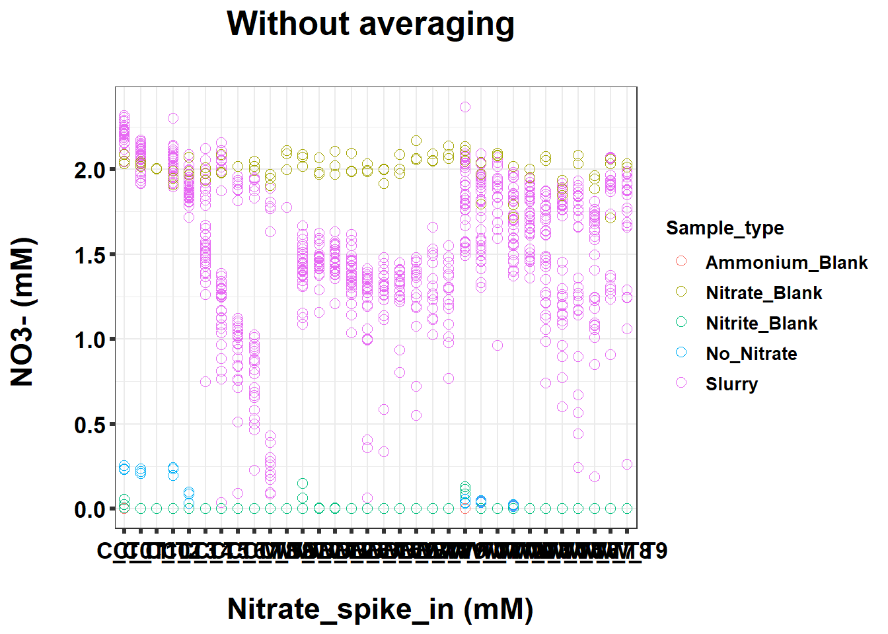
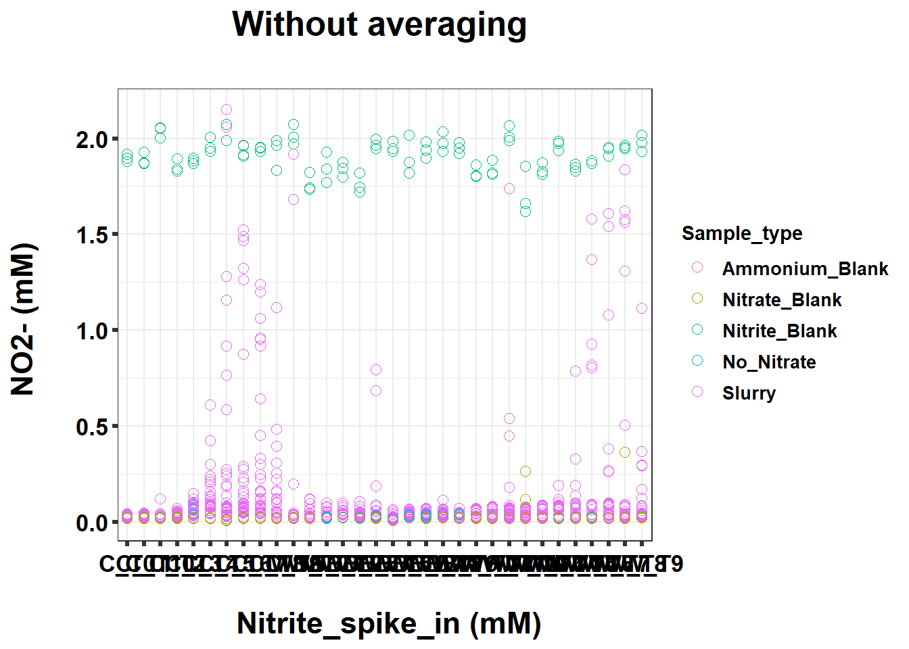
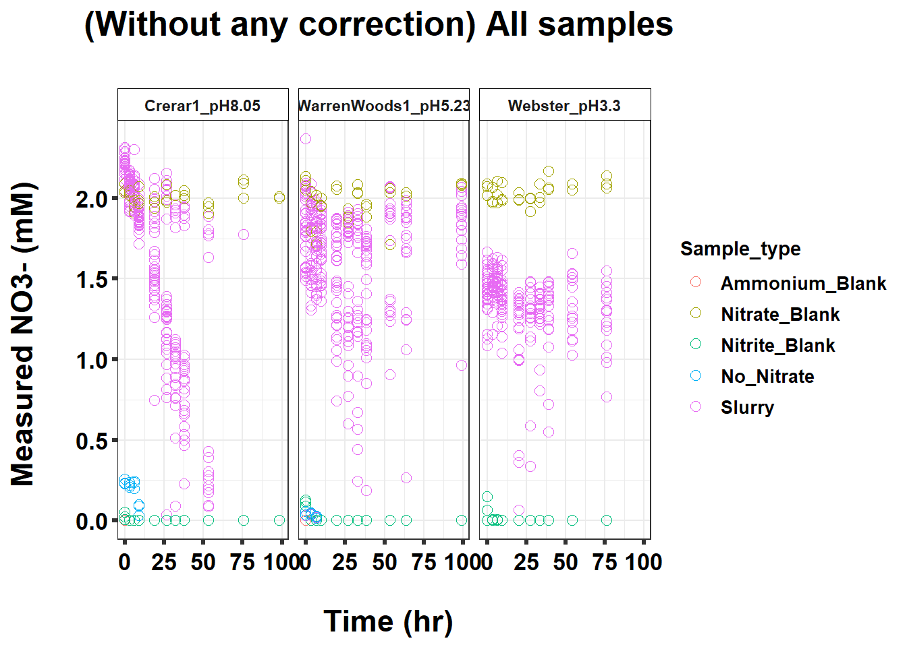
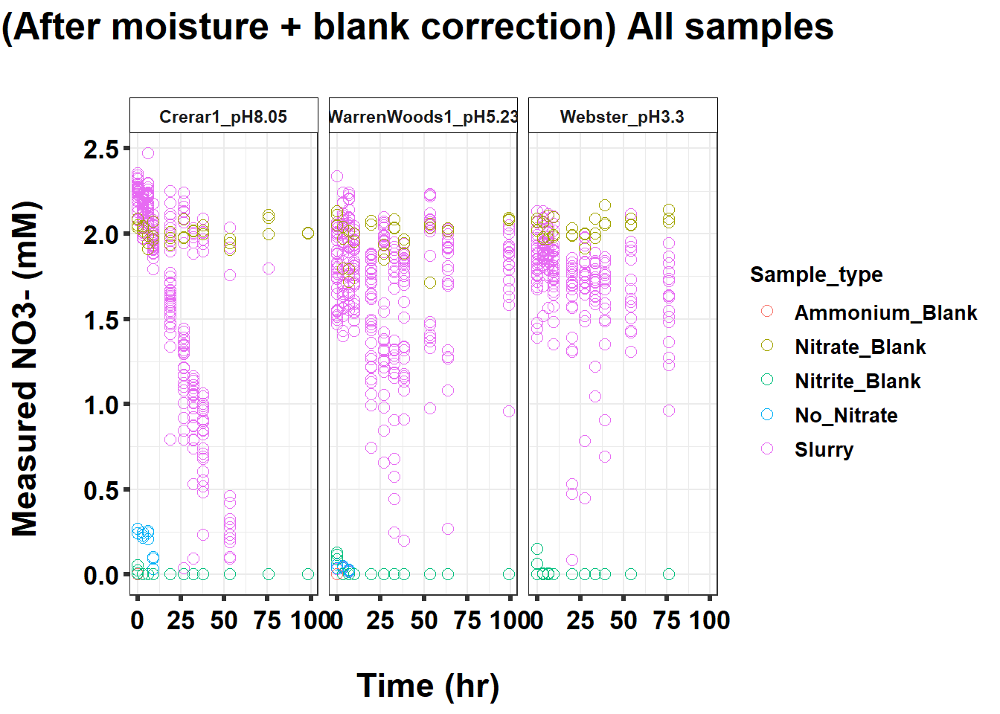
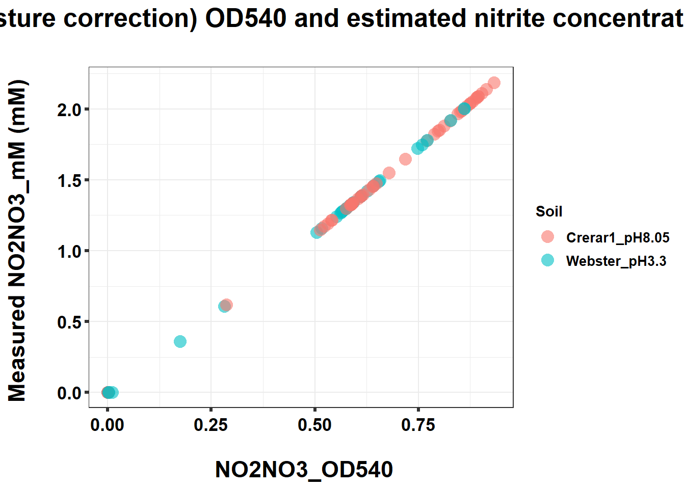
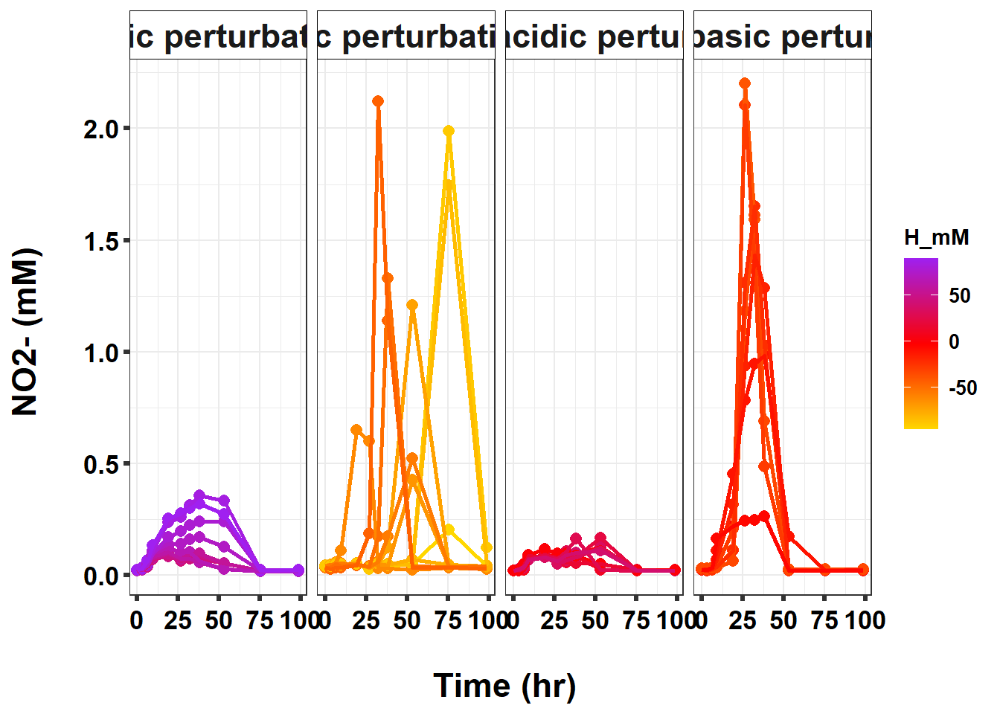

220327_Griess_3_soil_pH_perturbation
KiseokUchicago
2022-03-28
Last updated: 2022-06-08
Checks: 7 0
Knit directory: Denit_visualization_R/
This reproducible R Markdown analysis was created with workflowr (version 1.6.2). The Checks tab describes the reproducibility checks that were applied when the results were created. The Past versions tab lists the development history.
Great! Since the R Markdown file has been committed to the Git repository, you know the exact version of the code that produced these results.
Great job! The global environment was empty. Objects defined in the global environment can affect the analysis in your R Markdown file in unknown ways. For reproduciblity it’s best to always run the code in an empty environment.
The command set.seed(20210924) was run prior to running the code in the R Markdown file. Setting a seed ensures that any results that rely on randomness, e.g. subsampling or permutations, are reproducible.
Great job! Recording the operating system, R version, and package versions is critical for reproducibility.
Nice! There were no cached chunks for this analysis, so you can be confident that you successfully produced the results during this run.
Great job! Using relative paths to the files within your workflowr project makes it easier to run your code on other machines.
Great! You are using Git for version control. Tracking code development and connecting the code version to the results is critical for reproducibility.
The results in this page were generated with repository version 7905c93. See the Past versions tab to see a history of the changes made to the R Markdown and HTML files.
Note that you need to be careful to ensure that all relevant files for the analysis have been committed to Git prior to generating the results (you can use wflow_publish or wflow_git_commit). workflowr only checks the R Markdown file, but you know if there are other scripts or data files that it depends on. Below is the status of the Git repository when the results were generated:
Ignored files:
Ignored: .Rhistory
Ignored: .Rproj.user/
Untracked files:
Untracked: 211020_df_full_innate.xlsx
Untracked: 220421_Griess_antibiotics_experiment_to_kyle_remove_blanks.xlsx
Untracked: 220421_Griess_antibiotics_experiment_to_kyle_remove_blanks_add_pH.xlsx
Untracked: 220421_Griess_antibiotics_experiment_to_kyle_w_autoclaved.xlsx
Untracked: 220422_pH_Antibiotics_Sterile_experiment.xlsx
Untracked: 220519_Griess_antibiotics_experiment_to_kyle_w_autoclaved.xlsx
Untracked: 220521_pH_Antibiotics_dose_effect_experiment.xlsx
Untracked: data/120321_soil_buffering_capacity_Nichols-B.xlsx
Untracked: data/210911_TOC_sample_plate1.xlsx
Untracked: data/210922_Griess_sample_plate1-investigating.xlsx
Untracked: data/210922_Griess_sample_plate1.xlsx
Untracked: data/210927_TOC_sample_plate1_100ul.xlsx
Untracked: data/210927_TOC_sample_plate1_10ul.xlsx
Untracked: data/210928_Griess_sample_plate1.xlsx
Untracked: data/211005_Griess_sample_plate1.xlsx
Untracked: data/211007_Griess_blank_plate1.xlsx
Untracked: data/211007_Griess_blank_plate2.xlsx
Untracked: data/211008_Griess_blank_plate0.xlsx
Untracked: data/211008_Griess_blank_plate1.xlsx
Untracked: data/211017_Griess_plate0.xlsx
Untracked: data/211017_Griess_plate1.xlsx
Untracked: data/211017_Griess_plate2.xlsx
Untracked: data/211017_Griess_plate3.xlsx
Untracked: data/211017_Griess_plate4.xlsx
Untracked: data/211017_Griess_plate5.xlsx
Untracked: data/211017_Griess_plate6.xlsx
Untracked: data/211017_Griess_plate7.xlsx
Untracked: data/211017_Griess_plate8.xlsx
Untracked: data/211019_Griess_plate1.xlsx
Untracked: data/211020_Griess_plate0.xlsx
Untracked: data/211020_Griess_plate1.xlsx
Untracked: data/211020_df_full_innate.xlsx
Untracked: data/211025_Griess_no3_fit_plate0.xlsx
Untracked: data/211025_Griess_no3_fit_plate1.xlsx
Untracked: data/211025_Griess_plate0.xlsx
Untracked: data/211025_Griess_plate1.xlsx
Untracked: data/211028_Griess_plate1.xlsx
Untracked: data/211028_Griess_plate1_no3_fit.xlsx
Untracked: data/211028_Griess_plate2.xlsx
Untracked: data/211028_Griess_plate2_no3_fit.xlsx
Untracked: data/211028_Griess_plate3.xlsx
Untracked: data/211028_Griess_plate3_no3_fit.xlsx
Untracked: data/211028_Griess_plate4.xlsx
Untracked: data/211028_Griess_plate4_no3_fit.xlsx
Untracked: data/211028_time_table.xlsx
Untracked: data/211127_Griess_SUP1.xlsx
Untracked: data/211127_Griess_SUP11.xlsx
Untracked: data/211127_Griess_SUP3.xlsx
Untracked: data/211127_Griess_SUP5.xlsx
Untracked: data/211127_Griess_SUP7.xlsx
Untracked: data/211127_Griess_SUP9.xlsx
Untracked: data/211127_Griess_plate0.xlsx
Untracked: data/211127_time_table.xlsx
Untracked: data/211128_Ammonia_sample_plate10.xlsx
Untracked: data/211128_Ammonia_sample_plate11.xlsx
Untracked: data/211128_Griess_plate1.xlsx
Untracked: data/211128_Griess_plate10.xlsx
Untracked: data/211128_Griess_plate11.xlsx
Untracked: data/211128_Griess_plate2.xlsx
Untracked: data/211128_Griess_plate3.xlsx
Untracked: data/211128_Griess_plate4.xlsx
Untracked: data/211128_Griess_plate5.xlsx
Untracked: data/211128_Griess_plate6.xlsx
Untracked: data/211128_Griess_plate7.xlsx
Untracked: data/211128_Griess_plate8.xlsx
Untracked: data/211128_Griess_plate9.xlsx
Untracked: data/211128_time_table.xlsx
Untracked: data/211201_pH_colorimetric.xlsx
Untracked: data/211203_slurry_vs_water_drying_table.xlsx
Untracked: data/211203_slurry_vs_water_drying_time.xlsx
Untracked: data/211208_pH_colorimetric_T3.xlsx
Untracked: data/211208_pH_colorimetric_T4.xlsx
Untracked: data/211208_pH_colorimetric_T5.xlsx
Untracked: data/211208_pH_colorimetric_plate1.xlsx
Untracked: data/211208_pH_colorimetric_plate2.xlsx
Untracked: data/211208_pH_colorimetric_plate3.xlsx
Untracked: data/211208_time_table.xlsx
Untracked: data/211209_OD600_T1.xlsx
Untracked: data/211209_OD600_T2.xlsx
Untracked: data/211209_OD600_T3.xlsx
Untracked: data/211209_time_table.xlsx
Untracked: data/211210_pH_colorimetric_T0.xlsx
Untracked: data/211210_pH_colorimetric_T1.xlsx
Untracked: data/211210_pH_colorimetric_T2.xlsx
Untracked: data/211210_pH_colorimetric_T3.xlsx
Untracked: data/211210_time_table.xlsx
Untracked: data/211218_pH_colorimetric_t0.xlsx
Untracked: data/211218_pH_colorimetric_t1.xlsx
Untracked: data/211218_pH_colorimetric_t2.xlsx
Untracked: data/211218_pH_colorimetric_t3.xlsx
Untracked: data/211218_pH_colorimetric_t4.xlsx
Untracked: data/211218_time_table.xlsx
Untracked: data/211220_Griess_plate1.xlsx
Untracked: data/211220_Griess_plate10.xlsx
Untracked: data/211220_Griess_plate11.xlsx
Untracked: data/211220_Griess_plate2.xlsx
Untracked: data/211220_Griess_plate3.xlsx
Untracked: data/211220_Griess_plate4.xlsx
Untracked: data/211220_Griess_plate5.xlsx
Untracked: data/211220_Griess_plate6.xlsx
Untracked: data/211220_Griess_plate7.xlsx
Untracked: data/211220_Griess_plate8.xlsx
Untracked: data/211220_Griess_plate9.xlsx
Untracked: data/211220_time_table_AU.xlsx
Untracked: data/211220_time_table_BN.xlsx
Untracked: data/211224_TOC_sample_plate1.xlsx
Untracked: data/220103_Griess_T0.xlsx
Untracked: data/220103_Griess_T1.xlsx
Untracked: data/220103_Griess_T11.xlsx
Untracked: data/220103_Griess_T12.xlsx
Untracked: data/220103_Griess_T2.xlsx
Untracked: data/220103_Griess_T3.xlsx
Untracked: data/220103_Griess_T4.xlsx
Untracked: data/220103_Griess_T5.xlsx
Untracked: data/220103_Griess_T6.xlsx
Untracked: data/220103_Griess_T7.xlsx
Untracked: data/220103_Griess_T8.xlsx
Untracked: data/220103_Griess_T9.xlsx
Untracked: data/220103_time_table.xlsx
Untracked: data/220106_Ammonia_sample_plate1.xlsx
Untracked: data/220107-2_Ammonia_sample_plate1.xlsx
Untracked: data/220107-3_Ammonia_sample_plate1.xlsx
Untracked: data/220107-4_Ammonia_sample_plate1.xlsx
Untracked: data/220107-5_Ammonia_sample_plate1.xlsx
Untracked: data/220107-6_Ammonia_sample_plate1.xlsx
Untracked: data/220107-7_Ammonia_sample_plate1.xlsx
Untracked: data/220107-8_Ammonia_sample_plate1.xlsx
Untracked: data/220107-9_Ammonia_sample_plate1.xlsx
Untracked: data/220107_Ammonia_sample_plate1.xlsx
Untracked: data/220108_Ammonia_sample_plate1.xlsx
Untracked: data/220110_Ammonia_sample_plate1.xlsx
Untracked: data/220110_Ammonia_sample_plate2.xlsx
Untracked: data/220111_Ammonia_sample_T0.xlsx
Untracked: data/220111_Ammonia_sample_T1.xlsx
Untracked: data/220111_Ammonia_sample_T2.xlsx
Untracked: data/220111_Ammonia_sample_T3.xlsx
Untracked: data/220111_TOC_sample_plate1.xlsx
Untracked: data/220112_Ammonia_sample_T11.xlsx
Untracked: data/220112_Ammonia_sample_T12.xlsx
Untracked: data/220112_Ammonia_sample_T4.xlsx
Untracked: data/220112_Ammonia_sample_T5.xlsx
Untracked: data/220112_Ammonia_sample_T6.xlsx
Untracked: data/220112_Ammonia_sample_T7.xlsx
Untracked: data/220112_Ammonia_sample_T8.xlsx
Untracked: data/220112_Ammonia_sample_T9.xlsx
Untracked: data/220113_pH_colorimetric_T0.xlsx
Untracked: data/220113_pH_colorimetric_T12.xlsx
Untracked: data/220113_pH_colorimetric_T2.xlsx
Untracked: data/220113_pH_colorimetric_T3.xlsx
Untracked: data/220113_pH_colorimetric_T8.xlsx
Untracked: data/220125_pH_colorimetric_pH1_mu_opt0.099.xlsx
Untracked: data/220125_pH_colorimetric_pH1_using6.66.xlsx
Untracked: data/220125_pH_colorimetric_pH2_mu_opt0.099.xlsx
Untracked: data/220125_pH_colorimetric_pH2_using6.66.xlsx
Untracked: data/220125_time_table.xlsx
Untracked: data/220128_Ammonia_sample_plate1.xlsx
Untracked: data/220128_Ammonia_sample_plate2.xlsx
Untracked: data/220128_Ammonia_sample_plate3.xlsx
Untracked: data/220128_Ammonia_sample_plate4.xlsx
Untracked: data/220128_Ammonia_sample_plate5.xlsx
Untracked: data/220128_Ammonia_sample_plate6.xlsx
Untracked: data/220128_Griess_plate1.xlsx
Untracked: data/220128_Griess_plate2.xlsx
Untracked: data/220128_Griess_plate3.xlsx
Untracked: data/220128_Griess_plate4.xlsx
Untracked: data/220128_Griess_plate5.xlsx
Untracked: data/220128_Griess_plate6.xlsx
Untracked: data/220128_time_table.xlsx
Untracked: data/220131_Ammonia_sample_plate1.xlsx
Untracked: data/220131_Ammonia_sample_plate2.xlsx
Untracked: data/220131_Ammonia_sample_plate3.xlsx
Untracked: data/220131_Ammonia_sample_plate4.xlsx
Untracked: data/220131_Ammonia_sample_plate5.xlsx
Untracked: data/220131_Ammonia_sample_plate6.xlsx
Untracked: data/220131_Griess_plate1.xlsx
Untracked: data/220131_Griess_plate2.xlsx
Untracked: data/220131_Griess_plate3.xlsx
Untracked: data/220131_Griess_plate4.xlsx
Untracked: data/220131_Griess_plate5.xlsx
Untracked: data/220131_Griess_plate6.xlsx
Untracked: data/220131_pH_colorimetric_pH1_mu_opt_T0.xlsx
Untracked: data/220131_pH_colorimetric_pH2_mu_opt_T0.xlsx
Untracked: data/220131_time_table.xlsx
Untracked: data/220327_Griess_pastplate9.xlsx
Untracked: data/220327_Griess_plate1.xlsx
Untracked: data/220327_Griess_plate10.xlsx
Untracked: data/220327_Griess_plate11.xlsx
Untracked: data/220327_Griess_plate12.xlsx
Untracked: data/220327_Griess_plate13.xlsx
Untracked: data/220327_Griess_plate14.xlsx
Untracked: data/220327_Griess_plate15.xlsx
Untracked: data/220327_Griess_plate16.xlsx
Untracked: data/220327_Griess_plate2.xlsx
Untracked: data/220327_Griess_plate3.xlsx
Untracked: data/220327_Griess_plate4.xlsx
Untracked: data/220327_Griess_plate5.xlsx
Untracked: data/220327_Griess_plate6.xlsx
Untracked: data/220327_Griess_plate7.xlsx
Untracked: data/220327_Griess_plate8.xlsx
Untracked: data/220327_Griess_plate9.xlsx
Untracked: data/220327_time_table.xlsx
Untracked: data/220329_pH_colorimetric_pH1_mu_opt_T0.xlsx
Untracked: data/220329_pH_colorimetric_pH2_mu_opt_T0.xlsx
Untracked: data/220329_pH_colorimetric_pH3_mu_opt_T0.xlsx
Untracked: data/220329_pH_colorimetric_pH4_mu_opt_T0.xlsx
Untracked: data/220329_pH_colorimetric_pH6_mu_opt_T0.xlsx
Untracked: data/220329_pH_colorimetric_pH7_mu_opt_T0.xlsx
Untracked: data/220407_pH_colorimetric_pH3_half_mu_opt_T0.xlsx
Untracked: data/220407_pH_colorimetric_pH_base_treatment_mu_opt_T0.xlsx
Untracked: data/220407_pH_colorimetric_pH_standard_150ul_mu_opt_T0.xlsx
Untracked: data/220407_pH_colorimetric_pH_standard_300ul_mu_opt_T0.xlsx
Untracked: data/220407_pH_colorimetric_pH_standard_60ul_mu_opt_T0.xlsx
Untracked: data/220408_pH_colorimetric_pH_limit_mu_opt_water.xlsx
Untracked: data/220412_pH_colorimetric_pH_half_mu_opt_WW.xlsx
Untracked: data/220414_Ammonia_sample_plate0.xlsx
Untracked: data/220418_Ammonia_sample_plate0.xlsx
Untracked: data/220419_Ammonia_sample_plate0.xlsx
Untracked: data/220420-2_Ammonia_bcf.xlsx
Untracked: data/220420_Ammonia_sample_plate1.xlsx
Untracked: data/220420_Ammonia_sample_plate10.xlsx
Untracked: data/220420_Ammonia_sample_plate11.xlsx
Untracked: data/220420_Ammonia_sample_plate12.xlsx
Untracked: data/220420_Ammonia_sample_plate13.xlsx
Untracked: data/220420_Ammonia_sample_plate14.xlsx
Untracked: data/220420_Ammonia_sample_plate15.xlsx
Untracked: data/220420_Ammonia_sample_plate16.xlsx
Untracked: data/220420_Ammonia_sample_plate2.xlsx
Untracked: data/220420_Ammonia_sample_plate3.xlsx
Untracked: data/220420_Ammonia_sample_plate4.xlsx
Untracked: data/220420_Ammonia_sample_plate5.xlsx
Untracked: data/220420_Ammonia_sample_plate6.xlsx
Untracked: data/220420_Ammonia_sample_plate7.xlsx
Untracked: data/220420_Ammonia_sample_plate8.xlsx
Untracked: data/220420_Ammonia_sample_plate9.xlsx
Untracked: data/220421_Ammonia_df_a_bcf.xlsx
Untracked: data/220421_Ammonia_df_pH_range.xlsx
Untracked: data/220421_Ammonia_sample_plate1.xlsx
Untracked: data/220421_Ammonia_sample_plate10.xlsx
Untracked: data/220421_Ammonia_sample_plate11.xlsx
Untracked: data/220421_Ammonia_sample_plate2.xlsx
Untracked: data/220421_Ammonia_sample_plate3.xlsx
Untracked: data/220421_Ammonia_sample_plate4.xlsx
Untracked: data/220421_Ammonia_sample_plate5.xlsx
Untracked: data/220421_Ammonia_sample_plate6.xlsx
Untracked: data/220421_Ammonia_sample_plate7.xlsx
Untracked: data/220421_Ammonia_sample_plate8.xlsx
Untracked: data/220421_Ammonia_sample_plate9.xlsx
Untracked: data/220421_Ammonia_sterile.xlsx
Untracked: data/220421_Griess_antibiotics_experiment_to_kyle_remove_blanks.xlsx
Untracked: data/220421_Griess_antibiotics_experiment_to_kyle_remove_blanks_add_pH.xlsx
Untracked: data/220421_Griess_plate1.xlsx
Untracked: data/220421_Griess_plate10.xlsx
Untracked: data/220421_Griess_plate11.xlsx
Untracked: data/220421_Griess_plate2.xlsx
Untracked: data/220421_Griess_plate3.xlsx
Untracked: data/220421_Griess_plate4.xlsx
Untracked: data/220421_Griess_plate5.xlsx
Untracked: data/220421_Griess_plate6.xlsx
Untracked: data/220421_Griess_plate7.xlsx
Untracked: data/220421_Griess_plate8.xlsx
Untracked: data/220421_Griess_plate9.xlsx
Untracked: data/220421_nitrate_reduced_autoclaved_samples.xlsx
Untracked: data/220421_time_table.xlsx
Untracked: data/220422_pH_Antibiotics_Sterile_experiment.xlsx
Untracked: data/220422_pH_colorimetric_LBA_Sterile_T0_mu_opt_T0.xlsx
Untracked: data/220422_pH_colorimetric_LBA_Sterile_T4_mu_opt_T0.xlsx
Untracked: data/220422_pH_colorimetric_LBA_Sterile_T4_mu_opt_T4.xlsx
Untracked: data/220422_pH_colorimetric_LBA_Sterile_T7_mu_opt_T0.xlsx
Untracked: data/220422_pH_colorimetric_LBA_Sterile_T7_mu_opt_T7.xlsx
Untracked: data/220422_pH_colorimetric_LBA_Sterile_T9_mu_opt_T0.xlsx
Untracked: data/220422_pH_colorimetric_LBA_Sterile_T9_mu_opt_T9.xlsx
Untracked: data/220508_TOC_sample_plate1.xlsx
Untracked: data/220513_TOC_sample_plate1.xlsx
Untracked: data/220513_TOC_sample_plate2.xlsx
Untracked: data/220513_TOC_sample_plate3.xlsx
Untracked: data/220517_time_table.xlsx
Untracked: data/220519_Griess_antibiotics_dose_experiment_remove_blanks.xlsx
Untracked: data/220519_Griess_crerar7_extreme.xlsx
Untracked: data/220519_Griess_plate1.xlsx
Untracked: data/220519_Griess_plate10.xlsx
Untracked: data/220519_Griess_plate11.xlsx
Untracked: data/220519_Griess_plate2.xlsx
Untracked: data/220519_Griess_plate3.xlsx
Untracked: data/220519_Griess_plate4.xlsx
Untracked: data/220519_Griess_plate5.xlsx
Untracked: data/220519_Griess_plate6.xlsx
Untracked: data/220519_Griess_plate7.xlsx
Untracked: data/220519_Griess_plate8.xlsx
Untracked: data/220519_Griess_plate9.xlsx
Untracked: data/220519_time_table.xlsx
Untracked: data/220520_TOC_sample_plate1.xlsx
Untracked: data/220520_TOC_sample_plate2.xlsx
Untracked: data/220520_TOC_sample_plate3.xlsx
Untracked: data/220521_pH_Antibiotics_dose_effect_experiment.xlsx
Untracked: data/220521_pH_colorimetric_Barneveld2_Sterile_T0_mu_opt_T0.xlsx
Untracked: data/220521_pH_colorimetric_Barneveld2_Sterile_T10_mu_opt_T0.xlsx
Untracked: data/220521_pH_colorimetric_Barneveld2_Sterile_T7_mu_opt_T0.xlsx
Untracked: data/220526_TOC_sample_plate1.xlsx
Untracked: data/220527_TOC_sample_plate1.xlsx
Untracked: data/220601_TOC_sample_plate1.xlsx
Untracked: data/220602-2_TOC_sample_plate1.xlsx
Untracked: data/220602-2_control_OD600.xlsx
Untracked: data/220602-3_TOC_sample_plate1.xlsx
Untracked: data/220602-3_control_OD600.xlsx
Untracked: data/220602_TOC_sample_plate1.xlsx
Untracked: data/220603_100ul_OD600.xlsx
Untracked: data/220603_TOC_sample_plate1.xlsx
Untracked: data/220603_TOC_sample_plate2.xlsx
Untracked: data/220606_TOC_sample_plate1.xlsx
Untracked: data/220606_TOC_sample_plate2.xlsx
Untracked: data/ForKiseok_from_Dr_Cuhel.xlsx
Untracked: data/ForKiseok_from_Dr_Cuhel_format_edited.xlsx
Untracked: data/OD434_OD585_C_WB_T5_220329.xlsx
Untracked: data/OD434_OD585_WW_C_T0_220329.xlsx
Untracked: data/OD434_OD585_pH3_half_area_220407.xlsx
Untracked: data/OD434_OD585_pH_base_treated_T0_220407.xlsx
Untracked: data/OD434_OD585_pH_half_150ul_220412.xlsx
Untracked: data/SPNa_86437_021122_edit.xlsx
Untracked: data/SPNa_86437_021122_edit2.xlsx
Untracked: data/TOC_TN_measurement_2_labs_211014.xlsx
Untracked: data/dry_weight_curve(9.5.21).xlsx
Untracked: data/pH_data(11.17.21)-Midway_etc.xlsx
Untracked: data/pH_data(12.6.21)-Midway_incubation_endpoint.xlsx
Untracked: data/pH_data(9.14.21).xlsx
Untracked: data/pH_data(9.28.21).xlsx
Untracked: data/pH_standard_150ul_220407.xlsx
Untracked: data/pH_standard_300ul_220407.xlsx
Untracked: data/pH_standard_60ul_220407.xlsx
Untracked: data/~$220513_TOC_sample_plate1.xlsx
Untracked: data/~$SPNa_86437_021122_edit.xlsx
Untracked: past_figures/
Note that any generated files, e.g. HTML, png, CSS, etc., are not included in this status report because it is ok for generated content to have uncommitted changes.
These are the previous versions of the repository in which changes were made to the R Markdown (analysis/220327_Griess_3_soil_pH_perturbation.Rmd) and HTML (docs/220327_Griess_3_soil_pH_perturbation.html) files. If you’ve configured a remote Git repository (see ?wflow_git_remote), click on the hyperlinks in the table below to view the files as they were in that past version.
| File | Version | Author | Date | Message |
|---|---|---|---|---|
| Rmd | 7905c93 | KiseokUchicago | 2022-06-08 | wflow_publish("analysis/*.Rmd") |
| html | daabe80 | KiseokUchicago | 2022-04-12 | Build site. |
| Rmd | 0b26fbd | KiseokUchicago | 2022-04-12 | wflow_publish(c(“analysis/220327_Griess_3_soil_pH_perturbation.Rmd”, |
Time series analysis - 3 soil pH perturbation experiment-4 (Griess assay)
Researcher: Kiseok Lee
Experiment Date: 3/6/22 - 3/10/22 (5 days)
Analysis Date: 3/28/22 Lab: Seppe Kuehn
# libraries
library(dplyr)Warning: package 'dplyr' was built under R version 4.0.5
Attaching package: 'dplyr'The following objects are masked from 'package:stats':
filter, lagThe following objects are masked from 'package:base':
intersect, setdiff, setequal, unionlibrary(ggplot2)Warning: package 'ggplot2' was built under R version 4.0.5library(RColorBrewer)
library(vegan)Loading required package: permuteLoading required package: latticeThis is vegan 2.5-7library(tidyverse)Warning: package 'tidyverse' was built under R version 4.0.5-- Attaching packages --------------------------------------- tidyverse 1.3.1 --v tibble 3.0.4 v purrr 0.3.4
v tidyr 1.1.3 v stringr 1.4.0
v readr 1.4.0 v forcats 0.5.1Warning: package 'tidyr' was built under R version 4.0.5-- Conflicts ------------------------------------------ tidyverse_conflicts() --
x dplyr::filter() masks stats::filter()
x dplyr::lag() masks stats::lag()library(magrittr)
Attaching package: 'magrittr'The following object is masked from 'package:purrr':
set_namesThe following object is masked from 'package:tidyr':
extractlibrary(readxl)
library(reshape2)
Attaching package: 'reshape2'The following object is masked from 'package:tidyr':
smithslibrary(gtools)
Attaching package: 'gtools'The following object is masked from 'package:permute':
permutelibrary(devtools)Warning: package 'devtools' was built under R version 4.0.5Loading required package: usethisWarning: package 'usethis' was built under R version 4.0.5
Attaching package: 'devtools'The following object is masked from 'package:permute':
checklibrary(openxlsx)
library(ape)Warning: package 'ape' was built under R version 4.0.5library(stringr)
library(tidyr)
library(ggrepel)Warning: package 'ggrepel' was built under R version 4.0.4library(ggpubr)Warning: package 'ggpubr' was built under R version 4.0.5
Attaching package: 'ggpubr'The following object is masked from 'package:ape':
rotaterequire(gridExtra)Loading required package: gridExtra
Attaching package: 'gridExtra'The following object is masked from 'package:dplyr':
combine# grid.arrange(p_strain, p_ai, nrow=1)
## theme for ggplot
mytheme <- theme_bw() +
theme(text = element_text(face="bold", colour = 'black')) +
theme(plot.title = element_text(size = 19,hjust = 0.5,face="bold", colour = 'black')) +
theme(axis.title.x = element_text(size = 17,hjust = 0.5,face="bold", colour = 'black')) +
theme(axis.title.y = element_text(size = 17,hjust = 0.5,face="bold", colour = 'black')) +
theme(axis.text.x = element_text(hjust = 0.5, vjust=0.3,size=13,face="bold", colour = 'black'))+
theme(axis.text.y = element_text(size=13,face="bold", colour = 'black'))+
theme(panel.grid.major = element_blank()) +
theme(panel.grid.minor = element_blank(),panel.background=element_blank(),panel.border=element_blank(),plot.background=element_blank()) +
theme(axis.ticks = element_line(size = 1.1))+
theme(legend.text=element_text(size=10,face="bold", colour = 'black'))
mytheme_2d <- theme_bw() +
theme(text = element_text(face="bold", colour = 'black')) +
theme(plot.title = element_text(size = 19,hjust = 0.5,face="bold", colour = 'black')) +
theme(axis.title.x = element_text(size = 17,hjust = 0.5,face="bold", colour = 'black')) +
theme(axis.title.y = element_text(size = 17,hjust = 0.5,face="bold", colour = 'black')) +
theme(axis.text.x = element_text(hjust = 0.5, vjust=0.3,size=13,face="bold", colour = 'black'))+
theme(axis.text.y = element_text(size=13,face="bold", colour = 'black'))+
# theme(panel.grid.major = element_blank()) +
# theme(panel.grid.minor = element_blank(),panel.background=element_blank(),plot.background=element_blank()) +
theme(axis.ticks = element_line(size = 1.1))+
theme(legend.text=element_text(size=10,face="bold", colour = 'black'))
# color collection
my_color_collection <- c(
"#CBD588", "#5F7FC7", "orange", "#AD6F3B", "#673770",
"#D14285", "#652926", "#C84248", "#8569D5", "#5E738F",
"#D1A33D", "#8A7C64", "#599861","#616163", "#FFCDB2",
"#6D9F71", "#242F40",
"#CCA43B", "#F92A82", "#ED7B84", "#7EB77F",
"#DEC4A1", "#E5D1D0", '#0E8482', '#C9DAEA', '#337357',
'#95C623', '#E55812', '#04471C', '#F2D7EE', '#D3BCC0',
'#A5668B', '#69306D', '#0E103D', '#1A535C', '#4ECDC4',
'#F7FFF7', '#FF6B6B', '#FFE66D', '#6699CC', '#FFF275',
'#FF8C42', '#FF3C38', '#A23E48', '#000000', '#CF5C36',
'#EEE5E9', '#7C7C7C', '#EFC88B', '#2E5266', '#6E8898',
'#9FB1BC', '#D3D0CB', '#E2C044', '#5BC0EB', '#FDE74C',
'#9BC53D', '#E55934', '#FA7921', "#CD9BCD", "#508578", "#DA5724")
# for git push, use this instead of using wflow_git_push()
# git push -u origin master (in the Git app / in the working directory)
# for making pdf file
library(rmarkdown)Warning: package 'rmarkdown' was built under R version 4.0.5# render("analysis/~~.Rmd", "pdf_document")1. Import data table from python code
We are going to use the vcl3 treated standard curve that is fitted with pure nitrate standards
# import file
df_plate1 <- openxlsx::read.xlsx("data/220327_Griess_plate1.xlsx")
df_plate2 <- openxlsx::read.xlsx("data/220327_Griess_plate2.xlsx")
df_plate3 <- openxlsx::read.xlsx("data/220327_Griess_plate3.xlsx")
df_plate4 <- openxlsx::read.xlsx("data/220327_Griess_plate4.xlsx")
df_plate5 <- openxlsx::read.xlsx("data/220327_Griess_plate5.xlsx")
df_plate6 <- openxlsx::read.xlsx("data/220327_Griess_plate6.xlsx")
df_plate7 <- openxlsx::read.xlsx("data/220327_Griess_plate7.xlsx")
df_plate8 <- openxlsx::read.xlsx("data/220327_Griess_plate8.xlsx")
df_plate9 <- openxlsx::read.xlsx("data/220327_Griess_pastplate9.xlsx")
df_plate10 <- openxlsx::read.xlsx("data/220327_Griess_plate10.xlsx")
df_plate11 <- openxlsx::read.xlsx("data/220327_Griess_plate11.xlsx")
df_plate12 <- openxlsx::read.xlsx("data/220327_Griess_plate12.xlsx")
df_plate13 <- openxlsx::read.xlsx("data/220327_Griess_plate13.xlsx")
df_plate14 <- openxlsx::read.xlsx("data/220327_Griess_plate14.xlsx")
df_plate15 <- openxlsx::read.xlsx("data/220327_Griess_plate15.xlsx")
df_plate16 <- openxlsx::read.xlsx("data/220327_Griess_plate16.xlsx")
head(df_plate1) Well Nitrite_input Nitrate_input Ammonium_input Soil
1 A01 0 2 0 WarrenWoods1_pH5.23
2 A02 0 2 0 WarrenWoods1_pH5.23
3 A03 0 2 0 WarrenWoods1_pH5.23
4 A04 0 2 0 WarrenWoods1_pH5.23
5 A05 0 2 0 WarrenWoods1_pH5.23
6 A06 0 2 0 WarrenWoods1_pH5.23
Sample_type Titration_type Unit Concentration_M Added_ul Time_point NO2_OD540
1 Slurry HCl 1 0.5 20 WW_T0 0.00015
2 Slurry HCl 3 1.5 20 WW_T0 0.00050
3 Slurry HCl 5 2.5 20 WW_T0 0.00100
4 Slurry HCl 7 3.5 20 WW_T0 0.00205
5 Slurry HCl 9 4.5 20 WW_T0 0.00215
6 Slurry HCl 11 5.5 20 WW_T0 0.00350
NO2NO3_OD540 NO2_mM NO2NO3_mM NO3_mM
1 0.86270 0.006694917 0.8352607 0.8285658
2 0.82970 0.006875877 0.8008043 0.7939285
3 0.86450 0.007134397 0.8371460 0.8300116
4 0.97520 0.007677320 0.9542987 0.9466214
5 0.83965 0.007729029 0.8111719 0.8034429
6 0.80860 0.008427132 0.7788796 0.7704525colnames(df_plate1) [1] "Well" "Nitrite_input" "Nitrate_input" "Ammonium_input"
[5] "Soil" "Sample_type" "Titration_type" "Unit"
[9] "Concentration_M" "Added_ul" "Time_point" "NO2_OD540"
[13] "NO2NO3_OD540" "NO2_mM" "NO2NO3_mM" "NO3_mM" dim(df_plate1)[1] 96 16head(df_plate2) X1 Nitrite_input Nitrate_input Ammonium_input Soil Sample_type
1 A01 0 2 0 Webster_pH3.3 Slurry
2 A02 0 2 0 Webster_pH3.3 Slurry
3 A03 0 2 0 Webster_pH3.3 Slurry
4 A04 0 2 0 Webster_pH3.3 Slurry
5 A05 0 2 0 Webster_pH3.3 Slurry
6 A06 0 2 0 Webster_pH3.3 Slurry
Titration_type Unit Concentration_M Added_ul Time_point NO2_OD540
1 HCl 1 0.5 20 WB_T0 0.00390
2 HCl 3 1.5 20 WB_T0 0.00205
3 HCl 5 2.5 20 WB_T0 0.00320
4 HCl 7 3.5 20 WB_T0 0.00310
5 HCl 9 4.5 20 WB_T0 0.00345
6 HCl 11 5.5 20 WB_T0 0.00260
NO2NO3_OD540 NO2_mM NO2NO3_mM NO3_mM
1 0.70750 0.008633990 0.6749487 0.6663147
2 0.61825 0.007677320 0.5846855 0.5770082
3 0.60970 0.008271992 0.5761092 0.5678372
4 0.60440 0.008220280 0.5707989 0.5625786
5 0.60075 0.008401275 0.5671446 0.5587433
6 0.63110 0.007961723 0.5975981 0.5896364colnames(df_plate2) [1] "X1" "Nitrite_input" "Nitrate_input" "Ammonium_input"
[5] "Soil" "Sample_type" "Titration_type" "Unit"
[9] "Concentration_M" "Added_ul" "Time_point" "NO2_OD540"
[13] "NO2NO3_OD540" "NO2_mM" "NO2NO3_mM" "NO3_mM" dim(df_plate2)[1] 96 16head(df_plate3) X1 Nitrite_input Nitrate_input Ammonium_input Soil Sample_type
1 A01 0 2 0 Crerar1_pH8.05 Slurry
2 A02 0 2 0 Crerar1_pH8.05 Slurry
3 A03 0 2 0 Crerar1_pH8.05 Slurry
4 A04 0 2 0 Crerar1_pH8.05 Slurry
5 A05 0 2 0 Crerar1_pH8.05 Slurry
6 A06 0 2 0 Crerar1_pH8.05 Slurry
Titration_type Unit Concentration_M Added_ul Time_point NO2_OD540
1 HCl 1 0.5 20 C_T1 0.00240
2 HCl 3 1.5 20 C_T1 0.00285
3 HCl 5 2.5 20 C_T1 0.00350
4 HCl 7 3.5 20 C_T1 0.00475
5 HCl 9 4.5 20 C_T1 0.00435
6 HCl 11 5.5 20 C_T1 0.00460
NO2NO3_OD540 NO2_mM NO2NO3_mM NO3_mM
1 0.88295 0.007858302 0.8565062 0.8486479
2 0.87600 0.008091000 0.8492057 0.8411147
3 0.86960 0.008427132 0.8424911 0.8340640
4 0.85810 0.009073581 0.8304454 0.8213718
5 0.81190 0.008866711 0.7823032 0.7734364
6 0.82680 0.008996004 0.7977861 0.7887901colnames(df_plate3) [1] "X1" "Nitrite_input" "Nitrate_input" "Ammonium_input"
[5] "Soil" "Sample_type" "Titration_type" "Unit"
[9] "Concentration_M" "Added_ul" "Time_point" "NO2_OD540"
[13] "NO2NO3_OD540" "NO2_mM" "NO2NO3_mM" "NO3_mM" dim(df_plate3)[1] 96 16head(df_plate4) Well Nitrite_input Nitrate_input Ammonium_input Soil
1 A01 0 2 0 WarrenWoods1_pH5.23
2 A02 0 2 0 WarrenWoods1_pH5.23
3 A03 0 2 0 WarrenWoods1_pH5.23
4 A04 0 2 0 WarrenWoods1_pH5.23
5 A05 0 2 0 WarrenWoods1_pH5.23
6 A06 0 2 0 WarrenWoods1_pH5.23
Sample_type Titration_type Unit Concentration_M Added_ul Time_point NO2_OD540
1 Slurry HCl 1 0.5 20 WW_T2 0.00015
2 Slurry HCl 3 1.5 20 WW_T2 0.00095
3 Slurry HCl 5 2.5 20 WW_T2 0.00135
4 Slurry HCl 7 3.5 20 WW_T2 0.00250
5 Slurry HCl 9 4.5 20 WW_T2 0.00275
6 Slurry HCl 11 5.5 20 WW_T2 0.00425
NO2NO3_OD540 NO2_mM NO2NO3_mM NO3_mM
1 0.82420 0.006694917 0.7950814 0.7883865
2 0.76235 0.007108545 0.7311071 0.7239986
3 0.82925 0.007315367 0.8003359 0.7930205
4 0.77950 0.007910012 0.7487764 0.7408663
5 0.76855 0.008039289 0.7374887 0.7294494
6 0.76580 0.008814995 0.7346573 0.7258423colnames(df_plate4) [1] "Well" "Nitrite_input" "Nitrate_input" "Ammonium_input"
[5] "Soil" "Sample_type" "Titration_type" "Unit"
[9] "Concentration_M" "Added_ul" "Time_point" "NO2_OD540"
[13] "NO2NO3_OD540" "NO2_mM" "NO2NO3_mM" "NO3_mM" dim(df_plate4)[1] 96 16head(df_plate5) X1 Nitrite_input Nitrate_input Ammonium_input Soil Sample_type
1 A01 0 2 0 Webster_pH3.3 Slurry
2 A02 0 2 0 Webster_pH3.3 Slurry
3 A03 0 2 0 Webster_pH3.3 Slurry
4 A04 0 2 0 Webster_pH3.3 Slurry
5 A05 0 2 0 Webster_pH3.3 Slurry
6 A06 0 2 0 Webster_pH3.3 Slurry
Titration_type Unit Concentration_M Added_ul Time_point NO2_OD540
1 HCl 1 0.5 20 WB_T2 0.00395
2 HCl 3 1.5 20 WB_T2 0.00255
3 HCl 5 2.5 20 WB_T2 0.00345
4 HCl 7 3.5 20 WB_T2 0.00275
5 HCl 9 4.5 20 WB_T2 0.00375
6 HCl 11 5.5 20 WB_T2 0.00505
NO2NO3_OD540 NO2_mM NO2NO3_mM NO3_mM
1 0.69370 0.008659847 0.6609027 0.6522429
2 0.65225 0.007935867 0.6189115 0.6109757
3 0.60175 0.008401275 0.5681455 0.5597443
4 0.62210 0.008039289 0.5885514 0.5805121
5 0.62330 0.008556417 0.5897568 0.5812004
6 0.67075 0.009228736 0.6376167 0.6283880colnames(df_plate5) [1] "X1" "Nitrite_input" "Nitrate_input" "Ammonium_input"
[5] "Soil" "Sample_type" "Titration_type" "Unit"
[9] "Concentration_M" "Added_ul" "Time_point" "NO2_OD540"
[13] "NO2NO3_OD540" "NO2_mM" "NO2NO3_mM" "NO3_mM" dim(df_plate5)[1] 96 16head(df_plate6) X1 Nitrite_input Nitrate_input Ammonium_input Soil Sample_type
1 A01 0 2 0 Crerar1_pH8.05 Slurry
2 A02 0 2 0 Crerar1_pH8.05 Slurry
3 A03 0 2 0 Crerar1_pH8.05 Slurry
4 A04 0 2 0 Crerar1_pH8.05 Slurry
5 A05 0 2 0 Crerar1_pH8.05 Slurry
6 A06 0 2 0 Crerar1_pH8.05 Slurry
Titration_type Unit Concentration_M Added_ul Time_point NO2_OD540
1 HCl 1 0.5 20 C_T3 0.03565
2 HCl 3 1.5 20 C_T3 0.04660
3 HCl 5 2.5 20 C_T3 0.03865
4 HCl 7 3.5 20 C_T3 0.03220
5 HCl 9 4.5 20 C_T3 0.03930
6 HCl 11 5.5 20 C_T3 0.04450
NO2NO3_OD540 NO2_mM NO2NO3_mM NO3_mM
1 0.84645 0.02507103 0.8182680 0.7931969
2 0.78430 0.03074801 0.7537312 0.7229832
3 0.79180 0.02662595 0.7614816 0.7348556
4 0.78565 0.02328326 0.7551255 0.7318423
5 0.81215 0.02696289 0.7825626 0.7555997
6 0.83035 0.02965895 0.8014810 0.7718221colnames(df_plate6) [1] "X1" "Nitrite_input" "Nitrate_input" "Ammonium_input"
[5] "Soil" "Sample_type" "Titration_type" "Unit"
[9] "Concentration_M" "Added_ul" "Time_point" "NO2_OD540"
[13] "NO2NO3_OD540" "NO2_mM" "NO2NO3_mM" "NO3_mM" dim(df_plate6)[1] 96 16head(df_plate16) Well Nitrite_input Nitrate_input Ammonium_input Soil
1 A01 0 2 0 WarrenWoods1_pH5.23
2 A02 0 2 0 WarrenWoods1_pH5.23
3 A03 0 2 0 WarrenWoods1_pH5.23
4 A04 0 2 0 WarrenWoods1_pH5.23
5 A05 0 2 0 WarrenWoods1_pH5.23
6 A06 0 2 0 WarrenWoods1_pH5.23
Sample_type Titration_type Unit Concentration_M Added_ul Time_point NO2_OD540
1 Slurry HCl 1 0.5 20 WW_T10 0.12430
2 Slurry HCl 3 1.5 20 WW_T10 0.00010
3 Slurry HCl 5 2.5 20 WW_T10 0.00160
4 Slurry HCl 7 3.5 20 WW_T10 0.00200
5 Slurry HCl 9 4.5 20 WW_T10 0.00350
6 Slurry HCl 11 5.5 20 WW_T10 0.00375
NO2NO3_OD540 NO2_mM NO2NO3_mM NO3_mM
1 0.06720 0.071152116 0.05478688 0.0000000
2 0.73470 0.006669066 0.70273097 0.6960619
3 0.77290 0.007444634 0.74197025 0.7345256
4 0.79765 0.007651465 0.76753394 0.7598825
5 0.85270 0.008427132 0.82479774 0.8163706
6 0.86190 0.008556417 0.83442294 0.8258665colnames(df_plate16) [1] "Well" "Nitrite_input" "Nitrate_input" "Ammonium_input"
[5] "Soil" "Sample_type" "Titration_type" "Unit"
[9] "Concentration_M" "Added_ul" "Time_point" "NO2_OD540"
[13] "NO2NO3_OD540" "NO2_mM" "NO2NO3_mM" "NO3_mM" dim(df_plate16)[1] 96 16# X1 to Well
df_plate1 %<>% rename(Well = X1)Error: Can't rename columns that don't exist.
x Column `X1` doesn't exist.df_plate2 %<>% rename(Well = X1)
df_plate3 %<>% rename(Well = X1)
df_plate4 %<>% rename(Well = X1)Error: Can't rename columns that don't exist.
x Column `X1` doesn't exist.df_plate5 %<>% rename(Well = X1)
df_plate6 %<>% rename(Well = X1)
df_plate7 %<>% rename(Well = X1)Error: Can't rename columns that don't exist.
x Column `X1` doesn't exist.df_plate8 %<>% rename(Well = X1)
df_plate9 %<>% rename(Well = X1)
df_plate10 %<>% rename(Well = X1)Error: Can't rename columns that don't exist.
x Column `X1` doesn't exist.df_plate11 %<>% rename(Well = X1)
df_plate12 %<>% rename(Well = X1)
df_plate13 %<>% rename(Well = X1)Error: Can't rename columns that don't exist.
x Column `X1` doesn't exist.df_plate14 %<>% rename(Well = X1)
df_plate15 %<>% rename(Well = X1)
df_plate16 %<>% rename(Well = X1)Error: Can't rename columns that don't exist.
x Column `X1` doesn't exist.# remove wells that were contaminated during the experiment
df_plate4 %<>% filter(!(Well %in% c("A12", "B12"))) # filter defect
df_plate12 %<>% filter(!(Well %in% c("A01"))) # filter defect
# df_p6 %<>% filter(!(Well %in% c("A11"))) # filter burst issue
# df_p8 %<>% filter(!(Well %in% c("A07", "A08", "E08"))) # filter burst issue
# df_p11 %<>% filter(!(Well %in% c("A01"))) # filter burst issue # G11 was removed because of abnormal value compared to other 2 replicates
# dim(df_p4)
# bind two dataframe
df_p <- rbind(df_plate1, df_plate2, df_plate3, df_plate4, df_plate5, df_plate6, df_plate7, df_plate8, df_plate9, df_plate10, df_plate11, df_plate12,
df_plate13, df_plate14, df_plate15, df_plate16)
dim(df_p)[1] 1533 16# remove NA
dim(df_p) # 1533[1] 1533 16df_p[is.na(df_p)] [1] NA NA NA NA NA NA NA NA NA NA NA NA NA NA NA NA NA NA NA NA NA NA NA NA NA
[26] NA NA NA NA NA NA NA NA NA NA NA NA NA NA NA NA NA NA NA NA NA NA NA NA NA
[51] NA NA NA NA NA NA NA NA NA NA NA NA NA NA NA NA NA NA NA NA NA NA NA NA NA
[76] NA NA NA NA NA NA NA NA NA NA NA NA NA NA NA NA NA NA NA NA NA NA NA NA NA
[101] NA NA NA NA NA NA NA NA NA NA NA NA NA NA NA NA NA NA NA NA NA NA NA NA NA
[126] NA NA NA NA NA NA NA NA NA NA NA NA NA NA NA NA NA NA NA NA NA NA NA NA NA
[151] NA NA NA NA NA NA NA NA NA NA NA NA NA NA NA NA NA NA NA NA NA NA NA NA NA
[176] NA NA NA NA NA NA NA NA NA NA NA NA NA NA NA NA NA NA NA NA NA NA NA NA NA
[201] NA NA NA NA NA NA NA NA NA NA NA NA NA NA NA NA NA NA NA NA NA NA NA NA NA
[226] NA NA NA NA NA NA NA NA NA NA NA NA NA NA NA NA NA NA NA NA NA NA NA NA NA
[251] NA NA NA NA NA NA NA NA NA NA NA NA NA NA NA NA NA NA NA NA NA NA NA NA NA
[276] NA NA NA NA NA NA NA NA NA NA NA NA NA NA NA NA NA NA NA NA NA NA NA NA NA
[301] NA NA NA NA NA NA NA NA NA NA NA NA NA NA NA NA NA NA NA NA NA NA NA NA NA
[326] NA NA NA NA NA NA NA NA NA NA NA NA NA NA NA NA NA NA NA NA NA NA NA NA NA
[351] NA NA NA NA NA NA NA NA NA NA NA NA NA NA NA NA NA NA NA NA NA NA NA NA NA
[376] NA NA NA NA NA NA NA NA NA NA NA NA NA NA NA NA NA NA NA NA NA NA NA NA NA
[401] NA NA NA NA NA NA NA NA NA NA NA NA NA NA NA NA NA NA NA NA NA NA NA NA NA
[426] NA NA NA NA NA NA NA NA NA NA NA NA NA NA NA NA NA NA NA NA NA NA NA NA NA
[451] NA NA NA NA NA NA NA NA NA NA NA NA NA NA NA NA NA NA NA NA NA NA NA NA NA
[476] NA NA NA NA NA NA NA NA NA NA NA NA NA NA NA NA NA NA NA NA NA NA NA NA NA
[501] NA NA NA NA NA NA NA NA NA NA NA NA NA NA NA NA NA NA NA NA NA NA NA NA NA
[526] NA NA NA NA NA NA NA NA NA NA NA NA NA NA NA NA NA NA NA NA NA NA NA NA NA
[551] NA NA NA NA NA NA NA NA NA NA NA NA NA NA NA NA NA NA NA NA NA NA NA NA NA
[576] NA NA NA NA NA NA NA NA NA NA NA NA NA NA NA NA NA NA NA NA NA NA NA NA NA
[601] NA NA NA NA NA NA NA NA NA NA NA NA NA NA NA NA NA NA NA NA NA NA NA NA NA
[626] NA NA NA NA NA NA NA NA NA NA NA NA NA NA NA NA NA NA NA NA NA NA NA NA NA
[651] NA NA NA NA NA NA NA NA NA NA NA NA NA NA NA NA NA NA NA NA NA NA NA NA NA
[676] NA NA NA NA NA NA NA NA NA NA NA NA NA NA NA NA NA NA NA NA NA NA NA NA NA
[701] NA NA NA NA NA NA NA NA NA NA NA NA NA NA NA NA NA NA NA NA NA NA NA NA NA
[726] NA NA NA NA NA NA NA NA NA NA NA NA NA NA NA NA NA NA NA NA NA NA NA NA NA
[751] NA NA NA NA NA NA NA NA NA NA NA NA NA NA NA NA NA NA NA NA NA NA NA NA NA
[776] NA NA NA NA NA NA NA NA NA NA NA NA NA NA NA NA NA NA NA NA NA NA NA NA NA
[801] NA NA NA NA NA NA NA NA NA NA NA NA NA NA NA NAdf_na <- df_p[rowSums(is.na(df_p)) > 0,]
# df_p <- na.omit(df_p)
df_p <- df_p[rowSums(is.na(df_p)) == 0,]
dim(df_p) # 1448[1] 1449 16# multiply dilution factor which is 5/2
# df_p %<>% select(-NO2_OD540, -NO2NO3_OD540)
df_p %<>% mutate(NO2_mM = NO2_mM * (5/2), NO2NO3_mM = NO2NO3_mM * (5/2), NO3_mM = NO3_mM * (5/2))
# Get the metadata for time point and left join
Time_table <- openxlsx::read.xlsx("data/220327_time_table.xlsx")
# Time_table_BN <- openxlsx::read.xlsx("data/220327_time_table_BN.xlsx")
# Time_table <- rbind(Time_table_AU, Time_table_BN)
Time_table %<>% select(-Date)
Time_table$Time_hours <- round(Time_table$Time_hours, 1)
Time_table$Time_days <- round(Time_table$Time_days, 1)
df_time <- Time_table
dim(df_p)[1] 1449 16df_p <- df_p %>% left_join(Time_table, by=("Time_point"="Time_point"))
dim(df_p)[1] 1449 19colnames(df_p) [1] "Well" "Nitrite_input" "Nitrate_input" "Ammonium_input"
[5] "Soil" "Sample_type" "Titration_type" "Unit"
[9] "Concentration_M" "Added_ul" "Time_point" "NO2_OD540"
[13] "NO2NO3_OD540" "NO2_mM" "NO2NO3_mM" "NO3_mM"
[17] "Time_minutes" "Time_hours" "Time_days" # time_point order
# df_p$Time_point <- factor(df_p$Time_point, levels = paste0("T",0:10))2. Get average and standard deviation & Moisture correction & Blank correction
# plot to see
ggplot(df_p, aes(x=Time_point, y=NO3_mM, color=Sample_type, group=Sample_type)) +
geom_point(size=2.5, shape=21) +
# geom_line(size=1)+
scale_fill_brewer(palette='Set2') +
ylab("NO3- (mM) \n") +
xlab("\n Nitrate_spike_in (mM)") +
# scale_y_continuous(breaks = seq(0,0.3,0.05), limits=c(0, 0.3))+
ggtitle("Without averaging \n") +
mytheme_2d
# plot to see
ggplot(df_p, aes(x=Time_point, y=NO2_mM, color=Sample_type, group=Sample_type)) +
geom_point(size=2.5, shape=21) +
# geom_line(size=1)+
scale_fill_brewer(palette='Set2') +
ylab("NO2- (mM) \n") +
xlab("\n Nitrite_spike_in (mM)") +
# scale_y_continuous(breaks = seq(0,0.3,0.05), limits=c(0, 0.3))+
ggtitle("Without averaging \n") +
mytheme_2d
# hmmm.. why over shooting of NO3-
# average technical replicate (here only 1 replicate per pH perturbation)
colnames(df_p) [1] "Well" "Nitrite_input" "Nitrate_input" "Ammonium_input"
[5] "Soil" "Sample_type" "Titration_type" "Unit"
[9] "Concentration_M" "Added_ul" "Time_point" "NO2_OD540"
[13] "NO2NO3_OD540" "NO2_mM" "NO2NO3_mM" "NO3_mM"
[17] "Time_minutes" "Time_hours" "Time_days" dim(df_p)[1] 1449 19# df_p <- df_p %>% group_by(Nitrite_input, Nitrate_input, Soil, Titration_type, Concentration_M, Added_ul, Sample_type, Time_point, Time_minutes, Time_hours, Time_days) %>% summarise(NO2_mM = mean(NO2_mM), Std_NO2_mM = sd(NO2_mM), NO3_mM = mean(NO3_mM), Std_NO3_mM = sd(NO3_mM)) %>% ungroup()
# mols and molarity unit conversion
# test
df_p$Titration_type %>% length()[1] 1449# Setting H_mM column
# df_soil <- df_p %>% filter(Titration_type %in% c("NaOH","HCl"))
Added_Volume <- 1.7 # ml
Soil_mg <- 0.85
moisture_percent_1 = 63.1 # Webster
Added_Volume + Soil_mg*(moisture_percent_1/100)[1] 2.23635moisture_percent_2 = 6.8 # WarrenWoods1
Added_Volume + Soil_mg*(moisture_percent_2/100)[1] 1.7578moisture_percent_3 = 9.0 # Crerar7
Added_Volume + Soil_mg*(moisture_percent_3/100)[1] 1.7765df_p$Added_ul <- ifelse(df_p$Titration_type == "NaOH", -1*df_p$Added_ul, df_p$Added_ul) # HCl is +, NaOH is -
df_p %<>% mutate(H_mol = Concentration_M * Added_ul * 10^(-6)) # Calculate H mol
df_p$Volume <- ifelse(df_p$Soil == "Webster_pH3.3", Added_Volume + Soil_mg*(moisture_percent_1/100),
ifelse(df_p$Soil == "WarrenWoods1_pH5.23", Added_Volume + Soil_mg*(moisture_percent_2/100),
ifelse(df_p$Soil == "Crerar1_pH8.05", Added_Volume + Soil_mg*(moisture_percent_3/100),
0))) # Calc total volume
# df_p$Volume <- ifelse(df_p$Soil == "Allandale_pH4", Added_Volume + Soil_mg*(moisture_percent_2/100), df_p$Volume) # Calc total volume
# df_p$Volume %>% unique()
df_p %<>% mutate(H_Molarity = H_mol / (Volume * 10^(-3)))
df_p %<>% mutate(H_mM = H_Molarity * 1000)
# openxlsx::write.xlsx(df_p, "df_p.xlsx")
# how many levels of H_mM?
df_p %>% filter(Soil == "Webster_pH3.3")%>% select(H_mM) %>% unique() %>% arrange(H_mM) H_mM
1 -58.130436
2 -53.658864
3 -49.187292
4 -44.715720
5 -40.244148
6 -35.772576
7 -31.301004
8 -26.829432
9 -22.357860
10 -17.886288
11 -13.414716
12 -8.943144
13 -4.471572
14 0.000000
15 4.471572
16 8.943144
17 13.414716
18 17.886288
19 22.357860
20 26.829432
21 31.301004
22 35.772576
23 40.244148
24 44.715720
25 49.187292
26 53.658864df_p %>% filter(Soil == "WarrenWoods1_pH5.23")%>% select(H_mM) %>% unique() %>% arrange() H_mM
1 5.688929
2 17.066788
3 28.444647
4 39.822505
5 51.200364
6 62.578223
7 11.377859
8 22.755717
9 34.133576
10 45.511435
11 56.889293
12 68.267152
13 73.956081
14 85.333940
15 -5.688929
16 -17.066788
17 -28.444647
18 -39.822505
19 79.645011
20 91.022869
21 -11.377859
22 -22.755717
23 -34.133576
24 -45.511435
25 -51.200364
26 -62.578223
27 -73.956081
28 -85.333940
29 -96.711799
30 0.000000
31 -56.889293
32 -68.267152
33 -79.645011
34 -91.022869df_p %>% filter(Soil == "Crerar1_pH8.05")%>% select(H_mM) %>% unique() %>% arrange() H_mM
1 5.629046
2 16.887138
3 28.145229
4 39.403321
5 50.661413
6 61.919505
7 11.258092
8 22.516184
9 33.774275
10 45.032367
11 56.290459
12 67.548551
13 73.177596
14 84.435688
15 -5.629046
16 -16.887138
17 -28.145229
18 -39.403321
19 78.806642
20 90.064734
21 -11.258092
22 -22.516184
23 -33.774275
24 -45.032367
25 -50.661413
26 -61.919505
27 -73.177596
28 -84.435688
29 -95.693780
30 0.000000
31 -56.290459
32 -67.548551
33 -78.806642
34 -90.064734colnames(df_p) [1] "Well" "Nitrite_input" "Nitrate_input" "Ammonium_input"
[5] "Soil" "Sample_type" "Titration_type" "Unit"
[9] "Concentration_M" "Added_ul" "Time_point" "NO2_OD540"
[13] "NO2NO3_OD540" "NO2_mM" "NO2NO3_mM" "NO3_mM"
[17] "Time_minutes" "Time_hours" "Time_days" "H_mol"
[21] "Volume" "H_Molarity" "H_mM" ## Moisture correction
dim(df_p)[1] 1449 23# Testing negative samples
df_no3_blank <- df_p %>% filter(Sample_type == "Nitrate_Blank") # Use Nitrate_Blank instead in the future
df_no3_blank # 33 Well Nitrite_input Nitrate_input Ammonium_input Soil
1 G06 0 2 0 WarrenWoods1_pH5.23
2 G12 0 2 0 Crerar1_pH8.05
3 H05 0 2 0 WarrenWoods1_pH5.23
4 H06 0 2 0 WarrenWoods1_pH5.23
5 H11 0 2 0 Crerar1_pH8.05
6 H12 0 2 0 Crerar1_pH8.05
7 G06 0 2 0 Webster_pH3.3
8 G12 0 2 0 WarrenWoods1_pH5.23
9 H05 0 2 0 Webster_pH3.3
10 H06 0 2 0 Webster_pH3.3
11 H11 0 2 0 WarrenWoods1_pH5.23
12 H12 0 2 0 WarrenWoods1_pH5.23
13 G06 0 2 0 Crerar1_pH8.05
14 G12 0 2 0 Webster_pH3.3
15 H05 0 2 0 Crerar1_pH8.05
16 H06 0 2 0 Crerar1_pH8.05
17 H11 0 2 0 Webster_pH3.3
18 H12 0 2 0 Webster_pH3.3
19 G06 0 2 0 WarrenWoods1_pH5.23
20 G12 0 2 0 Crerar1_pH8.05
21 H05 0 2 0 WarrenWoods1_pH5.23
22 H06 0 2 0 WarrenWoods1_pH5.23
23 H11 0 2 0 Crerar1_pH8.05
24 H12 0 2 0 Crerar1_pH8.05
25 G06 0 2 0 Webster_pH3.3
26 G12 0 2 0 WarrenWoods1_pH5.23
27 H05 0 2 0 Webster_pH3.3
28 H06 0 2 0 Webster_pH3.3
29 H11 0 2 0 WarrenWoods1_pH5.23
30 H12 0 2 0 WarrenWoods1_pH5.23
31 G06 0 2 0 Crerar1_pH8.05
32 G12 0 2 0 Webster_pH3.3
33 H05 0 2 0 Crerar1_pH8.05
34 H06 0 2 0 Crerar1_pH8.05
35 H11 0 2 0 Webster_pH3.3
36 H12 0 2 0 Webster_pH3.3
37 G06 0 2 0 WarrenWoods1_pH5.23
38 G12 0 2 0 Crerar1_pH8.05
39 H05 0 2 0 WarrenWoods1_pH5.23
40 H06 0 2 0 WarrenWoods1_pH5.23
41 H11 0 2 0 Crerar1_pH8.05
42 H12 0 2 0 Crerar1_pH8.05
43 G06 0 2 0 Webster_pH3.3
44 G12 0 2 0 WarrenWoods1_pH5.23
45 H05 0 2 0 Webster_pH3.3
46 H06 0 2 0 Webster_pH3.3
47 H11 0 2 0 WarrenWoods1_pH5.23
48 H12 0 2 0 WarrenWoods1_pH5.23
49 G06 0 2 0 Crerar1_pH8.05
50 G12 0 2 0 Webster_pH3.3
51 H05 0 2 0 Crerar1_pH8.05
52 H06 0 2 0 Crerar1_pH8.05
53 H11 0 2 0 Webster_pH3.3
54 H12 0 2 0 Webster_pH3.3
55 G06 0 2 0 WarrenWoods1_pH5.23
56 G12 0 2 0 Crerar1_pH8.05
57 H05 0 2 0 WarrenWoods1_pH5.23
58 H06 0 2 0 WarrenWoods1_pH5.23
59 H11 0 2 0 Crerar1_pH8.05
60 H12 0 2 0 Crerar1_pH8.05
61 G06 0 2 0 Webster_pH3.3
62 G12 0 2 0 WarrenWoods1_pH5.23
63 H05 0 2 0 Webster_pH3.3
64 H06 0 2 0 Webster_pH3.3
65 H11 0 2 0 WarrenWoods1_pH5.23
66 H12 0 2 0 WarrenWoods1_pH5.23
67 G06 0 2 0 Crerar1_pH8.05
68 G12 0 2 0 Webster_pH3.3
69 H05 0 2 0 Crerar1_pH8.05
70 H06 0 2 0 Crerar1_pH8.05
71 H11 0 2 0 Webster_pH3.3
72 H12 0 2 0 Webster_pH3.3
73 G06 0 2 0 WarrenWoods1_pH5.23
74 G12 0 2 0 Crerar1_pH8.05
75 H05 0 2 0 WarrenWoods1_pH5.23
76 H06 0 2 0 WarrenWoods1_pH5.23
77 H11 0 2 0 Crerar1_pH8.05
78 H12 0 2 0 Crerar1_pH8.05
79 G06 0 2 0 Webster_pH3.3
80 G12 0 2 0 WarrenWoods1_pH5.23
81 H05 0 2 0 Webster_pH3.3
82 H06 0 2 0 Webster_pH3.3
83 H11 0 2 0 WarrenWoods1_pH5.23
84 H12 0 2 0 WarrenWoods1_pH5.23
85 G06 0 2 0 Crerar1_pH8.05
86 G12 0 2 0 Webster_pH3.3
87 H05 0 2 0 Crerar1_pH8.05
88 H06 0 2 0 Crerar1_pH8.05
89 H11 0 2 0 Webster_pH3.3
90 H12 0 2 0 Webster_pH3.3
91 G06 0 2 0 WarrenWoods1_pH5.23
92 G12 0 2 0 Crerar1_pH8.05
93 H05 0 2 0 WarrenWoods1_pH5.23
94 H06 0 2 0 WarrenWoods1_pH5.23
95 H11 0 2 0 Crerar1_pH8.05
96 H12 0 2 0 Crerar1_pH8.05
Sample_type Titration_type Unit Concentration_M Added_ul Time_point
1 Nitrate_Blank Nitrate 0 0 20 WW_T0
2 Nitrate_Blank Nitrate 0 0 20 C_T0
3 Nitrate_Blank Nitrate 0 0 20 WW_T0
4 Nitrate_Blank Nitrate 0 0 20 WW_T0
5 Nitrate_Blank Nitrate 0 0 20 C_T0
6 Nitrate_Blank Nitrate 0 0 20 C_T0
7 Nitrate_Blank Nitrate 0 0 20 WB_T0
8 Nitrate_Blank Nitrate 0 0 20 WW_T1
9 Nitrate_Blank Nitrate 0 0 20 WB_T0
10 Nitrate_Blank Nitrate 0 0 20 WB_T0
11 Nitrate_Blank Nitrate 0 0 20 WW_T1
12 Nitrate_Blank Nitrate 0 0 20 WW_T1
13 Nitrate_Blank Nitrate 0 0 20 C_T1
14 Nitrate_Blank Nitrate 0 0 20 WB_T1
15 Nitrate_Blank Nitrate 0 0 20 C_T1
16 Nitrate_Blank Nitrate 0 0 20 C_T1
17 Nitrate_Blank Nitrate 0 0 20 WB_T1
18 Nitrate_Blank Nitrate 0 0 20 WB_T1
19 Nitrate_Blank Nitrate 0 0 20 WW_T2
20 Nitrate_Blank Nitrate 0 0 20 C_T2
21 Nitrate_Blank Nitrate 0 0 20 WW_T2
22 Nitrate_Blank Nitrate 0 0 20 WW_T2
23 Nitrate_Blank Nitrate 0 0 20 C_T2
24 Nitrate_Blank Nitrate 0 0 20 C_T2
25 Nitrate_Blank Nitrate 0 0 20 WB_T2
26 Nitrate_Blank Nitrate 0 0 20 WW_T3
27 Nitrate_Blank Nitrate 0 0 20 WB_T2
28 Nitrate_Blank Nitrate 0 0 20 WB_T2
29 Nitrate_Blank Nitrate 0 0 20 WW_T3
30 Nitrate_Blank Nitrate 0 0 20 WW_T3
31 Nitrate_Blank Nitrate 0 0 20 C_T3
32 Nitrate_Blank Nitrate 0 0 20 WB_T3
33 Nitrate_Blank Nitrate 0 0 20 C_T3
34 Nitrate_Blank Nitrate 0 0 20 C_T3
35 Nitrate_Blank Nitrate 0 0 20 WB_T3
36 Nitrate_Blank Nitrate 0 0 20 WB_T3
37 Nitrate_Blank Nitrate 0 0 20 WW_T4
38 Nitrate_Blank Nitrate 0 0 20 C_T4
39 Nitrate_Blank Nitrate 0 0 20 WW_T4
40 Nitrate_Blank Nitrate 0 0 20 WW_T4
41 Nitrate_Blank Nitrate 0 0 20 C_T4
42 Nitrate_Blank Nitrate 0 0 20 C_T4
43 Nitrate_Blank Nitrate 0 0 20 WB_T4
44 Nitrate_Blank Nitrate 0 0 20 WW_T5
45 Nitrate_Blank Nitrate 0 0 20 WB_T4
46 Nitrate_Blank Nitrate 0 0 20 WB_T4
47 Nitrate_Blank Nitrate 0 0 20 WW_T5
48 Nitrate_Blank Nitrate 0 0 20 WW_T5
49 Nitrate_Blank Nitrate 0 0 20 C_T5
50 Nitrate_Blank Nitrate 0 0 20 WB_T5
51 Nitrate_Blank Nitrate 0 0 20 C_T5
52 Nitrate_Blank Nitrate 0 0 20 C_T5
53 Nitrate_Blank Nitrate 0 0 20 WB_T5
54 Nitrate_Blank Nitrate 0 0 20 WB_T5
55 Nitrate_Blank Nitrate 0 0 20 WW_T6
56 Nitrate_Blank Nitrate 0 0 20 C_T6
57 Nitrate_Blank Nitrate 0 0 20 WW_T6
58 Nitrate_Blank Nitrate 0 0 20 WW_T6
59 Nitrate_Blank Nitrate 0 0 20 C_T6
60 Nitrate_Blank Nitrate 0 0 20 C_T6
61 Nitrate_Blank Nitrate 0 0 20 WB_T6
62 Nitrate_Blank Nitrate 0 0 20 WW_T7
63 Nitrate_Blank Nitrate 0 0 20 WB_T6
64 Nitrate_Blank Nitrate 0 0 20 WB_T6
65 Nitrate_Blank Nitrate 0 0 20 WW_T7
66 Nitrate_Blank Nitrate 0 0 20 WW_T7
67 Nitrate_Blank Nitrate 0 0 20 C_T7
68 Nitrate_Blank Nitrate 0 0 20 WB_T7
69 Nitrate_Blank Nitrate 0 0 20 C_T7
70 Nitrate_Blank Nitrate 0 0 20 C_T7
71 Nitrate_Blank Nitrate 0 0 20 WB_T7
72 Nitrate_Blank Nitrate 0 0 20 WB_T7
73 Nitrate_Blank Nitrate 0 0 20 WW_T8
74 Nitrate_Blank Nitrate 0 0 20 C_T8
75 Nitrate_Blank Nitrate 0 0 20 WW_T8
76 Nitrate_Blank Nitrate 0 0 20 WW_T8
77 Nitrate_Blank Nitrate 0 0 20 C_T8
78 Nitrate_Blank Nitrate 0 0 20 C_T8
79 Nitrate_Blank Nitrate 0 0 20 WB_T8
80 Nitrate_Blank Nitrate 0 0 20 WW_T9
81 Nitrate_Blank Nitrate 0 0 20 WB_T8
82 Nitrate_Blank Nitrate 0 0 20 WB_T8
83 Nitrate_Blank Nitrate 0 0 20 WW_T9
84 Nitrate_Blank Nitrate 0 0 20 WW_T9
85 Nitrate_Blank Nitrate 0 0 20 C_T9
86 Nitrate_Blank Nitrate 0 0 20 WB_T9
87 Nitrate_Blank Nitrate 0 0 20 C_T9
88 Nitrate_Blank Nitrate 0 0 20 C_T9
89 Nitrate_Blank Nitrate 0 0 20 WB_T9
90 Nitrate_Blank Nitrate 0 0 20 WB_T9
91 Nitrate_Blank Nitrate 0 0 20 WW_T10
92 Nitrate_Blank Nitrate 0 0 20 C_T10
93 Nitrate_Blank Nitrate 0 0 20 WW_T10
94 Nitrate_Blank Nitrate 0 0 20 WW_T10
95 Nitrate_Blank Nitrate 0 0 20 C_T10
96 Nitrate_Blank Nitrate 0 0 20 C_T10
NO2_OD540 NO2NO3_OD540 NO2_mM NO2NO3_mM NO3_mM Time_minutes
1 0.00180 0.88640 0.018870122 2.150334 2.131464 0
2 0.00075 0.85325 0.017512840 2.063432 2.045919 0
3 0.00115 0.87750 0.018029889 2.126951 2.108922 0
4 0.00000 0.85365 0.016543411 2.064477 2.047934 0
5 0.00150 0.86880 0.018482318 2.104131 2.085649 0
6 0.00125 0.84850 0.018159153 2.051022 2.032863 0
7 0.00210 0.84245 0.019257935 2.035232 2.015974 0
8 0.00090 0.75570 0.017706731 1.810675 1.792968 210
9 0.00185 0.86900 0.018934757 2.104655 2.085720 0
10 0.00165 0.86270 0.018676219 2.088152 2.069475 0
11 0.00140 0.82450 0.018353051 1.988484 1.970131 210
12 0.00030 0.85090 0.016931176 2.057291 2.040360 210
13 0.00105 0.84230 0.017900625 2.034841 2.016940 180
14 0.00125 0.86075 0.018159153 2.083047 2.064888 202
15 0.00200 0.85300 0.019128663 2.062778 2.043650 180
16 0.00000 0.84800 0.016543411 2.049717 2.033173 180
17 0.00015 0.82415 0.016737292 1.987574 1.970836 202
18 0.00000 0.82750 0.016543411 1.996286 1.979743 202
19 0.18880 0.81995 0.262137147 1.976657 1.714520 400
20 0.00545 0.80275 0.023589038 1.932039 1.908450 370
21 0.00165 0.84180 0.018676219 2.033537 2.014860 400
22 0.07640 0.79205 0.115547325 1.904350 1.788803 400
23 0.00195 0.83175 0.019064028 2.007347 1.988283 370
24 0.00000 0.81405 0.016543411 1.961337 1.944793 370
25 0.00250 0.82430 0.019775031 1.987964 1.968188 392
26 0.00275 0.81750 0.020098222 1.970294 1.950195 580
27 0.00160 0.84345 0.018611585 2.037841 2.019229 392
28 0.00115 0.87615 0.018029889 2.123408 2.105378 392
29 0.00235 0.83635 0.019581118 2.019328 1.999747 580
30 0.00140 0.81720 0.018353051 1.969515 1.951161 580
31 0.00290 0.83055 0.020292140 2.004223 1.983931 550
32 0.00075 0.83190 0.017512840 2.007738 1.990225 587
33 0.00095 0.82220 0.017771362 1.982504 1.964733 550
34 0.00260 0.86405 0.019904307 2.091687 2.071782 550
35 0.00350 0.83075 0.021067830 2.004744 1.983676 587
36 0.00130 0.87235 0.018223785 2.113438 2.095215 587
37 0.00120 0.85570 0.018094521 2.069837 2.051742 1175
38 0.00000 0.82470 0.016543411 1.989004 1.972460 1140
39 0.00195 0.85600 0.019064028 2.070621 2.051557 1175
40 0.00260 0.86485 0.019904307 2.093782 2.073877 1175
41 0.00250 0.83980 0.019775031 2.028321 2.008546 1140
42 0.00000 0.81065 0.016543411 1.952515 1.935972 1140
43 0.00100 0.84815 0.017835994 2.050108 2.032272 1212
44 0.00165 0.79075 0.018676219 1.900990 1.882314 1625
45 0.00150 0.83245 0.018482318 2.009170 1.990687 1212
46 0.00075 0.83035 0.017512840 2.003703 1.986190 1212
47 0.00000 0.80990 0.016543411 1.950570 1.934027 1625
48 0.00050 0.77630 0.017189691 1.863689 1.846499 1625
49 0.00030 0.85195 0.005672981 1.981580 1.975907 1590
50 0.00070 0.86020 0.006190871 2.002495 1.996304 1662
51 0.00045 0.89480 0.005867188 2.090565 2.084698 1590
52 0.00195 0.85455 0.007809391 1.988168 1.980358 1590
53 0.00045 0.86125 0.005867188 2.005159 1.999292 1662
54 0.00000 0.82755 0.005284575 1.919910 1.914626 1662
55 0.00070 0.84835 0.017448210 2.050631 2.033182 1980
56 0.00150 0.84185 0.018482318 2.033667 2.015185 1940
57 0.00035 0.84700 0.016995805 2.047106 2.030110 1980
58 0.00205 0.86755 0.019193299 2.100855 2.081662 1980
59 0.00145 0.84160 0.018417684 2.033015 2.014597 1940
60 0.00085 0.84170 0.017642101 2.033276 2.015634 1940
61 0.00195 0.86925 0.019064028 2.105310 2.086246 2022
62 0.00140 0.81415 0.018353051 1.961596 1.943243 2320
63 0.00165 0.82570 0.018676219 1.991604 1.972928 2022
64 0.00240 0.83700 0.019645755 2.021022 2.001377 2022
65 0.00340 0.82275 0.020938546 1.983934 1.962995 2320
66 0.00190 0.79090 0.018999392 1.901377 1.882378 2320
67 0.00085 0.85370 0.017642101 2.064608 2.046966 2280
68 0.00140 0.89955 0.018353051 2.184952 2.166599 2362
69 0.00005 0.84175 0.016608038 2.033406 2.016798 2280
70 0.00240 0.83430 0.019645755 2.013988 1.994342 2280
71 0.00095 0.85635 0.017771362 2.071536 2.053765 2362
72 0.00080 0.85900 0.017577470 2.078468 2.060890 2362
73 0.26380 0.85665 0.360581037 2.072321 1.711740 3220
74 0.00335 0.82460 0.020873905 1.988744 1.967870 3190
75 0.00000 0.85740 0.016543411 2.074282 2.057739 3220
76 0.00150 0.84875 0.018482318 2.051675 2.033193 3220
77 0.00175 0.81515 0.018805488 1.964192 1.945387 3190
78 0.00070 0.79855 0.017448210 1.921164 1.903716 3190
79 0.00215 0.85575 0.019322571 2.069967 2.050645 3252
80 0.00310 0.84890 0.020550700 2.052067 2.031516 3845
81 0.00225 0.85470 0.019451844 2.067222 2.047770 3252
82 0.00230 0.87030 0.019516481 2.108063 2.088546 3252
83 0.00570 0.85030 0.023912294 2.055724 2.031811 3845
84 0.00315 0.84180 0.020615341 2.033537 2.012921 3845
85 0.00205 0.87835 0.019193299 2.129183 2.109990 4530
86 0.00135 0.86875 0.018288418 2.104000 2.085711 4587
87 0.00105 0.87025 0.017900625 2.107932 2.090031 4530
88 0.00050 0.83455 0.017189691 2.014639 1.997449 4530
89 0.00150 0.88860 0.018482318 2.156120 2.137638 4587
90 0.00150 0.86035 0.018482318 2.082000 2.063518 4587
91 0.00255 0.87190 0.019839669 2.112258 2.092419 5950
92 0.00200 0.83585 0.019128663 2.018026 1.998897 5915
93 0.00150 0.86575 0.018482318 2.096139 2.077657 5950
94 0.00160 0.86740 0.018611585 2.100462 2.081850 5950
95 0.00175 0.83830 0.018805488 2.024410 2.005605 5915
96 0.00080 0.83570 0.017577470 2.017635 2.000057 5915
Time_hours Time_days H_mol Volume H_Molarity H_mM
1 0.0 0.0 0 1.75780 0 0
2 0.0 0.0 0 1.77650 0 0
3 0.0 0.0 0 1.75780 0 0
4 0.0 0.0 0 1.75780 0 0
5 0.0 0.0 0 1.77650 0 0
6 0.0 0.0 0 1.77650 0 0
7 0.0 0.0 0 2.23635 0 0
8 3.5 0.1 0 1.75780 0 0
9 0.0 0.0 0 2.23635 0 0
10 0.0 0.0 0 2.23635 0 0
11 3.5 0.1 0 1.75780 0 0
12 3.5 0.1 0 1.75780 0 0
13 3.0 0.1 0 1.77650 0 0
14 3.4 0.1 0 2.23635 0 0
15 3.0 0.1 0 1.77650 0 0
16 3.0 0.1 0 1.77650 0 0
17 3.4 0.1 0 2.23635 0 0
18 3.4 0.1 0 2.23635 0 0
19 6.7 0.3 0 1.75780 0 0
20 6.2 0.3 0 1.77650 0 0
21 6.7 0.3 0 1.75780 0 0
22 6.7 0.3 0 1.75780 0 0
23 6.2 0.3 0 1.77650 0 0
24 6.2 0.3 0 1.77650 0 0
25 6.5 0.3 0 2.23635 0 0
26 9.7 0.4 0 1.75780 0 0
27 6.5 0.3 0 2.23635 0 0
28 6.5 0.3 0 2.23635 0 0
29 9.7 0.4 0 1.75780 0 0
30 9.7 0.4 0 1.75780 0 0
31 9.2 0.4 0 1.77650 0 0
32 9.8 0.4 0 2.23635 0 0
33 9.2 0.4 0 1.77650 0 0
34 9.2 0.4 0 1.77650 0 0
35 9.8 0.4 0 2.23635 0 0
36 9.8 0.4 0 2.23635 0 0
37 19.6 0.8 0 1.75780 0 0
38 19.0 0.8 0 1.77650 0 0
39 19.6 0.8 0 1.75780 0 0
40 19.6 0.8 0 1.75780 0 0
41 19.0 0.8 0 1.77650 0 0
42 19.0 0.8 0 1.77650 0 0
43 20.2 0.8 0 2.23635 0 0
44 27.1 1.1 0 1.75780 0 0
45 20.2 0.8 0 2.23635 0 0
46 20.2 0.8 0 2.23635 0 0
47 27.1 1.1 0 1.75780 0 0
48 27.1 1.1 0 1.75780 0 0
49 26.5 1.1 0 1.77650 0 0
50 27.7 1.2 0 2.23635 0 0
51 26.5 1.1 0 1.77650 0 0
52 26.5 1.1 0 1.77650 0 0
53 27.7 1.2 0 2.23635 0 0
54 27.7 1.2 0 2.23635 0 0
55 33.0 1.4 0 1.75780 0 0
56 32.3 1.3 0 1.77650 0 0
57 33.0 1.4 0 1.75780 0 0
58 33.0 1.4 0 1.75780 0 0
59 32.3 1.3 0 1.77650 0 0
60 32.3 1.3 0 1.77650 0 0
61 33.7 1.4 0 2.23635 0 0
62 38.7 1.6 0 1.75780 0 0
63 33.7 1.4 0 2.23635 0 0
64 33.7 1.4 0 2.23635 0 0
65 38.7 1.6 0 1.75780 0 0
66 38.7 1.6 0 1.75780 0 0
67 38.0 1.6 0 1.77650 0 0
68 39.4 1.6 0 2.23635 0 0
69 38.0 1.6 0 1.77650 0 0
70 38.0 1.6 0 1.77650 0 0
71 39.4 1.6 0 2.23635 0 0
72 39.4 1.6 0 2.23635 0 0
73 53.7 2.2 0 1.75780 0 0
74 53.2 2.2 0 1.77650 0 0
75 53.7 2.2 0 1.75780 0 0
76 53.7 2.2 0 1.75780 0 0
77 53.2 2.2 0 1.77650 0 0
78 53.2 2.2 0 1.77650 0 0
79 54.2 2.3 0 2.23635 0 0
80 64.1 2.7 0 1.75780 0 0
81 54.2 2.3 0 2.23635 0 0
82 54.2 2.3 0 2.23635 0 0
83 64.1 2.7 0 1.75780 0 0
84 64.1 2.7 0 1.75780 0 0
85 75.5 3.1 0 1.77650 0 0
86 76.4 3.2 0 2.23635 0 0
87 75.5 3.1 0 1.77650 0 0
88 75.5 3.1 0 1.77650 0 0
89 76.4 3.2 0 2.23635 0 0
90 76.4 3.2 0 2.23635 0 0
91 99.2 4.1 0 1.75780 0 0
92 98.6 4.1 0 1.77650 0 0
93 99.2 4.1 0 1.75780 0 0
94 99.2 4.1 0 1.75780 0 0
95 98.6 4.1 0 1.77650 0 0
96 98.6 4.1 0 1.77650 0 0df_no2_blank <- df_p %>% filter(Sample_type == "Nitrite_Blank")
df_no2_blank # 33 Well Nitrite_input Nitrate_input Ammonium_input Soil
1 G04 2 0 0 WarrenWoods1_pH5.23
2 G05 2 0 0 WarrenWoods1_pH5.23
3 G10 2 0 0 Crerar1_pH8.05
4 G11 2 0 0 Crerar1_pH8.05
5 H04 2 0 0 WarrenWoods1_pH5.23
6 H10 2 0 0 Crerar1_pH8.05
7 G04 2 0 0 Webster_pH3.3
8 G05 2 0 0 Webster_pH3.3
9 G10 2 0 0 WarrenWoods1_pH5.23
10 G11 2 0 0 WarrenWoods1_pH5.23
11 H04 2 0 0 Webster_pH3.3
12 H10 2 0 0 WarrenWoods1_pH5.23
13 G04 2 0 0 Crerar1_pH8.05
14 G05 2 0 0 Crerar1_pH8.05
15 G10 2 0 0 Webster_pH3.3
16 G11 2 0 0 Webster_pH3.3
17 H04 2 0 0 Crerar1_pH8.05
18 H10 2 0 0 Webster_pH3.3
19 G04 2 0 0 WarrenWoods1_pH5.23
20 G05 2 0 0 WarrenWoods1_pH5.23
21 G10 2 0 0 Crerar1_pH8.05
22 G11 2 0 0 Crerar1_pH8.05
23 H04 2 0 0 WarrenWoods1_pH5.23
24 H10 2 0 0 Crerar1_pH8.05
25 G04 2 0 0 Webster_pH3.3
26 G05 2 0 0 Webster_pH3.3
27 G10 2 0 0 WarrenWoods1_pH5.23
28 G11 2 0 0 WarrenWoods1_pH5.23
29 H04 2 0 0 Webster_pH3.3
30 H10 2 0 0 WarrenWoods1_pH5.23
31 G04 2 0 0 Crerar1_pH8.05
32 G05 2 0 0 Crerar1_pH8.05
33 G10 2 0 0 Webster_pH3.3
34 G11 2 0 0 Webster_pH3.3
35 H04 2 0 0 Crerar1_pH8.05
36 H10 2 0 0 Webster_pH3.3
37 G04 2 0 0 WarrenWoods1_pH5.23
38 G05 2 0 0 WarrenWoods1_pH5.23
39 G10 2 0 0 Crerar1_pH8.05
40 G11 2 0 0 Crerar1_pH8.05
41 H04 2 0 0 WarrenWoods1_pH5.23
42 H10 2 0 0 Crerar1_pH8.05
43 G04 2 0 0 Webster_pH3.3
44 G05 2 0 0 Webster_pH3.3
45 G10 2 0 0 WarrenWoods1_pH5.23
46 G11 2 0 0 WarrenWoods1_pH5.23
47 H04 2 0 0 Webster_pH3.3
48 H10 2 0 0 WarrenWoods1_pH5.23
49 G04 2 0 0 Crerar1_pH8.05
50 G05 2 0 0 Crerar1_pH8.05
51 G10 2 0 0 Webster_pH3.3
52 G11 2 0 0 Webster_pH3.3
53 H04 2 0 0 Crerar1_pH8.05
54 H10 2 0 0 Webster_pH3.3
55 G04 2 0 0 WarrenWoods1_pH5.23
56 G05 2 0 0 WarrenWoods1_pH5.23
57 G10 2 0 0 Crerar1_pH8.05
58 G11 2 0 0 Crerar1_pH8.05
59 H04 2 0 0 WarrenWoods1_pH5.23
60 H10 2 0 0 Crerar1_pH8.05
61 G04 2 0 0 Webster_pH3.3
62 G05 2 0 0 Webster_pH3.3
63 G10 2 0 0 WarrenWoods1_pH5.23
64 G11 2 0 0 WarrenWoods1_pH5.23
65 H04 2 0 0 Webster_pH3.3
66 H10 2 0 0 WarrenWoods1_pH5.23
67 G04 2 0 0 Crerar1_pH8.05
68 G05 2 0 0 Crerar1_pH8.05
69 G10 2 0 0 Webster_pH3.3
70 G11 2 0 0 Webster_pH3.3
71 H04 2 0 0 Crerar1_pH8.05
72 H10 2 0 0 Webster_pH3.3
73 G04 2 0 0 WarrenWoods1_pH5.23
74 G05 2 0 0 WarrenWoods1_pH5.23
75 G10 2 0 0 Crerar1_pH8.05
76 G11 2 0 0 Crerar1_pH8.05
77 H04 2 0 0 WarrenWoods1_pH5.23
78 H10 2 0 0 Crerar1_pH8.05
79 G04 2 0 0 Webster_pH3.3
80 G05 2 0 0 Webster_pH3.3
81 G10 2 0 0 WarrenWoods1_pH5.23
82 G11 2 0 0 WarrenWoods1_pH5.23
83 H04 2 0 0 Webster_pH3.3
84 H10 2 0 0 WarrenWoods1_pH5.23
85 G04 2 0 0 Crerar1_pH8.05
86 G05 2 0 0 Crerar1_pH8.05
87 G10 2 0 0 Webster_pH3.3
88 G11 2 0 0 Webster_pH3.3
89 H04 2 0 0 Crerar1_pH8.05
90 H10 2 0 0 Webster_pH3.3
91 G04 2 0 0 WarrenWoods1_pH5.23
92 G05 2 0 0 WarrenWoods1_pH5.23
93 G10 2 0 0 Crerar1_pH8.05
94 G11 2 0 0 Crerar1_pH8.05
95 H04 2 0 0 WarrenWoods1_pH5.23
96 H10 2 0 0 Crerar1_pH8.05
Sample_type Titration_type Unit Concentration_M Added_ul Time_point
1 Nitrite_Blank Nitrite 0 0 20 WW_T0
2 Nitrite_Blank Nitrite 0 0 20 WW_T0
3 Nitrite_Blank Nitrite 0 0 20 C_T0
4 Nitrite_Blank Nitrite 0 0 20 C_T0
5 Nitrite_Blank Nitrite 0 0 20 WW_T0
6 Nitrite_Blank Nitrite 0 0 20 C_T0
7 Nitrite_Blank Nitrite 0 0 20 WB_T0
8 Nitrite_Blank Nitrite 0 0 20 WB_T0
9 Nitrite_Blank Nitrite 0 0 20 WW_T1
10 Nitrite_Blank Nitrite 0 0 20 WW_T1
11 Nitrite_Blank Nitrite 0 0 20 WB_T0
12 Nitrite_Blank Nitrite 0 0 20 WW_T1
13 Nitrite_Blank Nitrite 0 0 20 C_T1
14 Nitrite_Blank Nitrite 0 0 20 C_T1
15 Nitrite_Blank Nitrite 0 0 20 WB_T1
16 Nitrite_Blank Nitrite 0 0 20 WB_T1
17 Nitrite_Blank Nitrite 0 0 20 C_T1
18 Nitrite_Blank Nitrite 0 0 20 WB_T1
19 Nitrite_Blank Nitrite 0 0 20 WW_T2
20 Nitrite_Blank Nitrite 0 0 20 WW_T2
21 Nitrite_Blank Nitrite 0 0 20 C_T2
22 Nitrite_Blank Nitrite 0 0 20 C_T2
23 Nitrite_Blank Nitrite 0 0 20 WW_T2
24 Nitrite_Blank Nitrite 0 0 20 C_T2
25 Nitrite_Blank Nitrite 0 0 20 WB_T2
26 Nitrite_Blank Nitrite 0 0 20 WB_T2
27 Nitrite_Blank Nitrite 0 0 20 WW_T3
28 Nitrite_Blank Nitrite 0 0 20 WW_T3
29 Nitrite_Blank Nitrite 0 0 20 WB_T2
30 Nitrite_Blank Nitrite 0 0 20 WW_T3
31 Nitrite_Blank Nitrite 0 0 20 C_T3
32 Nitrite_Blank Nitrite 0 0 20 C_T3
33 Nitrite_Blank Nitrite 0 0 20 WB_T3
34 Nitrite_Blank Nitrite 0 0 20 WB_T3
35 Nitrite_Blank Nitrite 0 0 20 C_T3
36 Nitrite_Blank Nitrite 0 0 20 WB_T3
37 Nitrite_Blank Nitrite 0 0 20 WW_T4
38 Nitrite_Blank Nitrite 0 0 20 WW_T4
39 Nitrite_Blank Nitrite 0 0 20 C_T4
40 Nitrite_Blank Nitrite 0 0 20 C_T4
41 Nitrite_Blank Nitrite 0 0 20 WW_T4
42 Nitrite_Blank Nitrite 0 0 20 C_T4
43 Nitrite_Blank Nitrite 0 0 20 WB_T4
44 Nitrite_Blank Nitrite 0 0 20 WB_T4
45 Nitrite_Blank Nitrite 0 0 20 WW_T5
46 Nitrite_Blank Nitrite 0 0 20 WW_T5
47 Nitrite_Blank Nitrite 0 0 20 WB_T4
48 Nitrite_Blank Nitrite 0 0 20 WW_T5
49 Nitrite_Blank Nitrite 0 0 20 C_T5
50 Nitrite_Blank Nitrite 0 0 20 C_T5
51 Nitrite_Blank Nitrite 0 0 20 WB_T5
52 Nitrite_Blank Nitrite 0 0 20 WB_T5
53 Nitrite_Blank Nitrite 0 0 20 C_T5
54 Nitrite_Blank Nitrite 0 0 20 WB_T5
55 Nitrite_Blank Nitrite 0 0 20 WW_T6
56 Nitrite_Blank Nitrite 0 0 20 WW_T6
57 Nitrite_Blank Nitrite 0 0 20 C_T6
58 Nitrite_Blank Nitrite 0 0 20 C_T6
59 Nitrite_Blank Nitrite 0 0 20 WW_T6
60 Nitrite_Blank Nitrite 0 0 20 C_T6
61 Nitrite_Blank Nitrite 0 0 20 WB_T6
62 Nitrite_Blank Nitrite 0 0 20 WB_T6
63 Nitrite_Blank Nitrite 0 0 20 WW_T7
64 Nitrite_Blank Nitrite 0 0 20 WW_T7
65 Nitrite_Blank Nitrite 0 0 20 WB_T6
66 Nitrite_Blank Nitrite 0 0 20 WW_T7
67 Nitrite_Blank Nitrite 0 0 20 C_T7
68 Nitrite_Blank Nitrite 0 0 20 C_T7
69 Nitrite_Blank Nitrite 0 0 20 WB_T7
70 Nitrite_Blank Nitrite 0 0 20 WB_T7
71 Nitrite_Blank Nitrite 0 0 20 C_T7
72 Nitrite_Blank Nitrite 0 0 20 WB_T7
73 Nitrite_Blank Nitrite 0 0 20 WW_T8
74 Nitrite_Blank Nitrite 0 0 20 WW_T8
75 Nitrite_Blank Nitrite 0 0 20 C_T8
76 Nitrite_Blank Nitrite 0 0 20 C_T8
77 Nitrite_Blank Nitrite 0 0 20 WW_T8
78 Nitrite_Blank Nitrite 0 0 20 C_T8
79 Nitrite_Blank Nitrite 0 0 20 WB_T8
80 Nitrite_Blank Nitrite 0 0 20 WB_T8
81 Nitrite_Blank Nitrite 0 0 20 WW_T9
82 Nitrite_Blank Nitrite 0 0 20 WW_T9
83 Nitrite_Blank Nitrite 0 0 20 WB_T8
84 Nitrite_Blank Nitrite 0 0 20 WW_T9
85 Nitrite_Blank Nitrite 0 0 20 C_T9
86 Nitrite_Blank Nitrite 0 0 20 C_T9
87 Nitrite_Blank Nitrite 0 0 20 WB_T9
88 Nitrite_Blank Nitrite 0 0 20 WB_T9
89 Nitrite_Blank Nitrite 0 0 20 C_T9
90 Nitrite_Blank Nitrite 0 0 20 WB_T9
91 Nitrite_Blank Nitrite 0 0 20 WW_T10
92 Nitrite_Blank Nitrite 0 0 20 WW_T10
93 Nitrite_Blank Nitrite 0 0 20 C_T10
94 Nitrite_Blank Nitrite 0 0 20 C_T10
95 Nitrite_Blank Nitrite 0 0 20 WW_T10
96 Nitrite_Blank Nitrite 0 0 20 C_T10
NO2_OD540 NO2NO3_OD540 NO2_mM NO2NO3_mM NO3_mM Time_minutes
1 1.35885 0.80915 1.861027 1.948625 0.0875978595 0
2 1.31925 0.79705 1.804527 1.917282 0.1127552043 0
3 1.38270 0.80895 1.895144 1.948107 0.0529623055 0
4 1.39875 0.80575 1.918141 1.939811 0.0216701853 0
5 1.31545 0.80080 1.799115 1.926989 0.1278738946 0
6 1.36985 0.78330 1.876754 1.881747 0.0049922719 0
7 1.27425 0.75250 1.740543 1.802457 0.0619143904 0
8 1.26970 0.78320 1.734086 1.881488 0.1474023651 0
9 1.32420 0.74825 1.811580 1.791549 0.0000000000 210
10 1.32910 0.75530 1.818564 1.809648 0.0000000000 210
11 1.33205 0.75695 1.822770 1.813886 0.0000000000 0
12 1.37660 0.78210 1.886412 1.878649 0.0000000000 210
13 1.36630 0.77690 1.871677 1.865236 0.0000000000 180
14 1.36340 0.77575 1.867531 1.862271 0.0000000000 180
15 1.34400 0.76875 1.839818 1.844237 0.0044184424 202
16 1.40590 0.79060 1.928396 1.900602 0.0000000000 202
17 1.40645 0.79050 1.929185 1.900344 0.0000000000 180
18 1.29530 0.72850 1.770444 1.740967 0.0000000000 202
19 1.35290 0.76270 1.852526 1.828668 0.0000000000 400
20 1.18640 0.66840 1.616297 1.588094 0.0000000000 400
21 1.33515 0.75465 1.827191 1.807978 0.0000000000 370
22 1.37990 0.77975 1.891135 1.872586 0.0000000000 370
23 1.21650 0.67945 1.658769 1.616084 0.0000000000 400
24 1.34390 0.75385 1.839676 1.805923 0.0000000000 370
25 1.36730 0.78000 1.873107 1.873231 0.0001235585 392
26 1.34655 0.77025 1.843458 1.848099 0.0046408946 392
27 1.32470 0.74830 1.812292 1.791678 0.0000000000 580
28 1.33510 0.75805 1.827119 1.816713 0.0000000000 580
29 1.31400 0.74080 1.797050 1.772449 0.0000000000 392
30 1.36525 0.77360 1.870176 1.856729 0.0000000000 580
31 1.36440 0.74965 1.868960 1.795142 0.0000000000 550
32 1.37335 0.75255 1.881761 1.802585 0.0000000000 550
33 1.32815 0.72855 1.817209 1.741095 0.0000000000 587
34 1.26050 0.68885 1.721038 1.639935 0.0000000000 587
35 1.38335 0.74935 1.896075 1.794372 0.0000000000 550
36 1.27665 0.69350 1.743949 1.651749 0.0000000000 587
37 1.41140 0.75260 1.936288 1.802714 0.0000000000 1175
38 1.44415 0.77525 1.983357 1.860982 0.0000000000 1175
39 1.41945 0.75655 1.947845 1.812859 0.0000000000 1140
40 1.40735 0.74870 1.930476 1.792704 0.0000000000 1140
41 1.43630 0.76325 1.972063 1.830083 0.0000000000 1175
42 1.45935 0.76755 2.005246 1.841147 0.0000000000 1140
43 1.41810 0.74775 1.945907 1.790267 0.0000000000 1212
44 1.42905 0.76460 1.961639 1.833556 0.0000000000 1212
45 1.36030 0.70805 1.863100 1.688773 0.0000000000 1625
46 1.34925 0.69635 1.847313 1.658994 0.0000000000 1625
47 1.45225 0.77165 1.995018 1.851705 0.0000000000 1212
48 1.33635 0.67540 1.828902 1.605819 0.0000000000 1625
49 1.43060 0.77035 1.987116 1.776423 0.0000000000 1590
50 1.48695 0.80045 2.071324 1.851742 0.0000000000 1590
51 1.39330 0.74855 1.931670 1.722130 0.0000000000 1662
52 1.40160 0.75850 1.943988 1.746884 0.0000000000 1662
53 1.48665 0.78850 2.070875 1.821790 0.0000000000 1590
54 1.42960 0.77200 1.985626 1.780541 0.0000000000 1662
55 1.36345 0.73880 1.867602 1.767325 0.0000000000 1980
56 1.37365 0.73175 1.882191 1.749279 0.0000000000 1980
57 1.42895 0.77045 1.961495 1.848614 0.0000000000 1940
58 1.39050 0.74115 1.906316 1.773345 0.0000000000 1940
59 1.36455 0.72790 1.869175 1.739433 0.0000000000 1980
60 1.39680 0.76180 1.915345 1.826353 0.0000000000 1940
61 1.36845 0.73145 1.874752 1.748511 0.0000000000 2022
62 1.32780 0.70630 1.816710 1.684315 0.0000000000 2022
63 1.42235 0.75350 1.952011 1.805025 0.0000000000 2320
64 1.39105 0.73775 1.907105 1.764636 0.0000000000 2320
65 1.46645 0.76720 2.015480 1.840246 0.0000000000 2022
66 1.41840 0.73850 1.946338 1.766557 0.0000000000 2320
67 1.40910 0.77460 1.932987 1.859306 0.0000000000 2280
68 1.42355 0.77290 1.953735 1.854926 0.0000000000 2280
69 1.38410 0.75310 1.897149 1.803998 0.0000000000 2362
70 1.41380 0.76895 1.939733 1.844752 0.0000000000 2362
71 1.42085 0.77660 1.949856 1.864462 0.0000000000 2280
72 1.44205 0.79045 1.980335 1.900214 0.0000000000 2362
73 1.41680 0.77920 1.944040 1.871167 0.0000000000 3220
74 1.42325 0.76050 1.953304 1.823011 0.0000000000 3220
75 1.34005 0.72425 1.834181 1.730105 0.0000000000 3190
76 1.43090 0.77650 1.964298 1.864204 0.0000000000 3190
77 1.43115 0.77245 1.964657 1.853766 0.0000000000 3220
78 1.44650 0.76895 1.986739 1.844752 0.0000000000 3190
79 1.40755 0.76710 1.930763 1.839989 0.0000000000 3252
80 1.43625 0.78725 1.971991 1.891946 0.0000000000 3252
81 1.46580 0.79135 2.014542 1.902541 0.0000000000 3845
82 1.40820 0.76960 1.931695 1.846425 0.0000000000 3845
83 1.47835 0.79750 2.032646 1.918447 0.0000000000 3252
84 1.43865 0.76905 1.975443 1.845009 0.0000000000 3845
85 1.45825 0.80725 2.003661 1.943699 0.0000000000 4530
86 1.43570 0.79410 1.971200 1.909651 0.0000000000 4530
87 1.44020 0.80705 1.977673 1.943181 0.0000000000 4587
88 1.41995 0.79320 1.948564 1.907324 0.0000000000 4587
89 1.50590 0.83360 2.072454 2.012165 0.0000000000 4530
90 1.40005 0.79860 1.920005 1.921293 0.0012884187 4587
91 1.44605 0.79950 1.986091 1.923623 0.0000000000 5950
92 1.45930 0.80810 2.005174 1.945903 0.0000000000 5950
93 1.45720 0.80660 2.002148 1.942014 0.0000000000 5915
94 1.49135 0.82260 2.051419 1.983544 0.0000000000 5915
95 1.50185 0.83020 2.066596 2.003312 0.0000000000 5950
96 1.49315 0.82595 2.054020 1.992254 0.0000000000 5915
Time_hours Time_days H_mol Volume H_Molarity H_mM
1 0.0 0.0 0 1.75780 0 0
2 0.0 0.0 0 1.75780 0 0
3 0.0 0.0 0 1.77650 0 0
4 0.0 0.0 0 1.77650 0 0
5 0.0 0.0 0 1.75780 0 0
6 0.0 0.0 0 1.77650 0 0
7 0.0 0.0 0 2.23635 0 0
8 0.0 0.0 0 2.23635 0 0
9 3.5 0.1 0 1.75780 0 0
10 3.5 0.1 0 1.75780 0 0
11 0.0 0.0 0 2.23635 0 0
12 3.5 0.1 0 1.75780 0 0
13 3.0 0.1 0 1.77650 0 0
14 3.0 0.1 0 1.77650 0 0
15 3.4 0.1 0 2.23635 0 0
16 3.4 0.1 0 2.23635 0 0
17 3.0 0.1 0 1.77650 0 0
18 3.4 0.1 0 2.23635 0 0
19 6.7 0.3 0 1.75780 0 0
20 6.7 0.3 0 1.75780 0 0
21 6.2 0.3 0 1.77650 0 0
22 6.2 0.3 0 1.77650 0 0
23 6.7 0.3 0 1.75780 0 0
24 6.2 0.3 0 1.77650 0 0
25 6.5 0.3 0 2.23635 0 0
26 6.5 0.3 0 2.23635 0 0
27 9.7 0.4 0 1.75780 0 0
28 9.7 0.4 0 1.75780 0 0
29 6.5 0.3 0 2.23635 0 0
30 9.7 0.4 0 1.75780 0 0
31 9.2 0.4 0 1.77650 0 0
32 9.2 0.4 0 1.77650 0 0
33 9.8 0.4 0 2.23635 0 0
34 9.8 0.4 0 2.23635 0 0
35 9.2 0.4 0 1.77650 0 0
36 9.8 0.4 0 2.23635 0 0
37 19.6 0.8 0 1.75780 0 0
38 19.6 0.8 0 1.75780 0 0
39 19.0 0.8 0 1.77650 0 0
40 19.0 0.8 0 1.77650 0 0
41 19.6 0.8 0 1.75780 0 0
42 19.0 0.8 0 1.77650 0 0
43 20.2 0.8 0 2.23635 0 0
44 20.2 0.8 0 2.23635 0 0
45 27.1 1.1 0 1.75780 0 0
46 27.1 1.1 0 1.75780 0 0
47 20.2 0.8 0 2.23635 0 0
48 27.1 1.1 0 1.75780 0 0
49 26.5 1.1 0 1.77650 0 0
50 26.5 1.1 0 1.77650 0 0
51 27.7 1.2 0 2.23635 0 0
52 27.7 1.2 0 2.23635 0 0
53 26.5 1.1 0 1.77650 0 0
54 27.7 1.2 0 2.23635 0 0
55 33.0 1.4 0 1.75780 0 0
56 33.0 1.4 0 1.75780 0 0
57 32.3 1.3 0 1.77650 0 0
58 32.3 1.3 0 1.77650 0 0
59 33.0 1.4 0 1.75780 0 0
60 32.3 1.3 0 1.77650 0 0
61 33.7 1.4 0 2.23635 0 0
62 33.7 1.4 0 2.23635 0 0
63 38.7 1.6 0 1.75780 0 0
64 38.7 1.6 0 1.75780 0 0
65 33.7 1.4 0 2.23635 0 0
66 38.7 1.6 0 1.75780 0 0
67 38.0 1.6 0 1.77650 0 0
68 38.0 1.6 0 1.77650 0 0
69 39.4 1.6 0 2.23635 0 0
70 39.4 1.6 0 2.23635 0 0
71 38.0 1.6 0 1.77650 0 0
72 39.4 1.6 0 2.23635 0 0
73 53.7 2.2 0 1.75780 0 0
74 53.7 2.2 0 1.75780 0 0
75 53.2 2.2 0 1.77650 0 0
76 53.2 2.2 0 1.77650 0 0
77 53.7 2.2 0 1.75780 0 0
78 53.2 2.2 0 1.77650 0 0
79 54.2 2.3 0 2.23635 0 0
80 54.2 2.3 0 2.23635 0 0
81 64.1 2.7 0 1.75780 0 0
82 64.1 2.7 0 1.75780 0 0
83 54.2 2.3 0 2.23635 0 0
84 64.1 2.7 0 1.75780 0 0
85 75.5 3.1 0 1.77650 0 0
86 75.5 3.1 0 1.77650 0 0
87 76.4 3.2 0 2.23635 0 0
88 76.4 3.2 0 2.23635 0 0
89 75.5 3.1 0 1.77650 0 0
90 76.4 3.2 0 2.23635 0 0
91 99.2 4.1 0 1.75780 0 0
92 99.2 4.1 0 1.75780 0 0
93 98.6 4.1 0 1.77650 0 0
94 98.6 4.1 0 1.77650 0 0
95 99.2 4.1 0 1.75780 0 0
96 98.6 4.1 0 1.77650 0 0# close to zero
# 1. Apply moisture correction factor (correcting for moisture in soil)
soil_spike_ratio = 0.5 # soil weight(0.85g) / spike in volume (1.7ml)
mcf_1 = (soil_spike_ratio*(moisture_percent_1/100) + 1)
mcf_1[1] 1.3155mcf_2 = (soil_spike_ratio*(moisture_percent_2/100) + 1)
mcf_2[1] 1.034mcf_3 = (soil_spike_ratio*(moisture_percent_3/100) + 1)
mcf_3[1] 1.045# apply moisture factor to each soil
dim(df_p)[1] 1449 23df_p %>% select(Soil) %>% unique() Soil
1 WarrenWoods1_pH5.23
7 Crerar1_pH8.05
97 Webster_pH3.3# this is a special case with no replicates
df_p_mcf_1 <- df_p %>% filter(Soil == "Webster_pH3.3") %>% filter(Titration_type %in% c("NaOH","HCl","No_Nitrate")) %>% mutate(NO3_mM = NO3_mM * mcf_1, NO2_mM = NO2_mM * mcf_1)
dim(df_p_mcf_1) #306[1] 306 23df_p_mcf_2 <- df_p %>% filter(Soil == "WarrenWoods1_pH5.23") %>% filter(Titration_type %in% c("NaOH","HCl","No_Nitrate")) %>% mutate(NO3_mM = NO3_mM * mcf_2, NO2_mM = NO2_mM * mcf_2)
dim(df_p_mcf_2) #429[1] 429 23df_p_mcf_3 <- df_p %>% filter(Soil == "Crerar1_pH8.05") %>% filter(Titration_type %in% c("NaOH","HCl","No_Nitrate")) %>% mutate(NO3_mM = NO3_mM * mcf_3, NO2_mM = NO2_mM * mcf_3)
dim(df_p_mcf_3) #426[1] 426 23df_p_others_mcf <- df_p %>% filter(Sample_type %in% c("Nitrite_Blank", "Nitrate_Blank", "Ammonium_Blank")) # Use Nitrate_Blank instead in the future
dim(df_p_others_mcf) #287[1] 288 23df_p_mcf <- rbind(df_p_mcf_1, df_p_mcf_2, df_p_mcf_3, df_p_others_mcf)
dim(df_p_mcf) # 1448[1] 1449 23# plot to see
ggplot(df_p_mcf, aes(x=Time_hours, y=NO3_mM, color=Sample_type, group=Sample_type)) +
geom_point(size=2.5, shape=21) +
# geom_line(size=1)+
# geom_errorbar(aes(ymin=NO3_mM - Std_NO3_mM, ymax=NO3_mM + Std_NO3_mM), width=.05)+
scale_fill_brewer(palette='Set2') +
ylab("NO3- (mM) \n") +
xlab("\n Time (hours)") +
# scale_y_continuous(breaks = seq(0,0.3,0.05), limits=c(0, 0.3))+
ggtitle("After averaging with biological replicates \n") +
mytheme_2d# 2. Apply blank correction factor (drying effect during incubation)
# Blank reads
df_no3_blank <- df_p %>% filter(Sample_type == "Nitrate_Blank")
df_no3_blank Well Nitrite_input Nitrate_input Ammonium_input Soil
1 G06 0 2 0 WarrenWoods1_pH5.23
2 G12 0 2 0 Crerar1_pH8.05
3 H05 0 2 0 WarrenWoods1_pH5.23
4 H06 0 2 0 WarrenWoods1_pH5.23
5 H11 0 2 0 Crerar1_pH8.05
6 H12 0 2 0 Crerar1_pH8.05
7 G06 0 2 0 Webster_pH3.3
8 G12 0 2 0 WarrenWoods1_pH5.23
9 H05 0 2 0 Webster_pH3.3
10 H06 0 2 0 Webster_pH3.3
11 H11 0 2 0 WarrenWoods1_pH5.23
12 H12 0 2 0 WarrenWoods1_pH5.23
13 G06 0 2 0 Crerar1_pH8.05
14 G12 0 2 0 Webster_pH3.3
15 H05 0 2 0 Crerar1_pH8.05
16 H06 0 2 0 Crerar1_pH8.05
17 H11 0 2 0 Webster_pH3.3
18 H12 0 2 0 Webster_pH3.3
19 G06 0 2 0 WarrenWoods1_pH5.23
20 G12 0 2 0 Crerar1_pH8.05
21 H05 0 2 0 WarrenWoods1_pH5.23
22 H06 0 2 0 WarrenWoods1_pH5.23
23 H11 0 2 0 Crerar1_pH8.05
24 H12 0 2 0 Crerar1_pH8.05
25 G06 0 2 0 Webster_pH3.3
26 G12 0 2 0 WarrenWoods1_pH5.23
27 H05 0 2 0 Webster_pH3.3
28 H06 0 2 0 Webster_pH3.3
29 H11 0 2 0 WarrenWoods1_pH5.23
30 H12 0 2 0 WarrenWoods1_pH5.23
31 G06 0 2 0 Crerar1_pH8.05
32 G12 0 2 0 Webster_pH3.3
33 H05 0 2 0 Crerar1_pH8.05
34 H06 0 2 0 Crerar1_pH8.05
35 H11 0 2 0 Webster_pH3.3
36 H12 0 2 0 Webster_pH3.3
37 G06 0 2 0 WarrenWoods1_pH5.23
38 G12 0 2 0 Crerar1_pH8.05
39 H05 0 2 0 WarrenWoods1_pH5.23
40 H06 0 2 0 WarrenWoods1_pH5.23
41 H11 0 2 0 Crerar1_pH8.05
42 H12 0 2 0 Crerar1_pH8.05
43 G06 0 2 0 Webster_pH3.3
44 G12 0 2 0 WarrenWoods1_pH5.23
45 H05 0 2 0 Webster_pH3.3
46 H06 0 2 0 Webster_pH3.3
47 H11 0 2 0 WarrenWoods1_pH5.23
48 H12 0 2 0 WarrenWoods1_pH5.23
49 G06 0 2 0 Crerar1_pH8.05
50 G12 0 2 0 Webster_pH3.3
51 H05 0 2 0 Crerar1_pH8.05
52 H06 0 2 0 Crerar1_pH8.05
53 H11 0 2 0 Webster_pH3.3
54 H12 0 2 0 Webster_pH3.3
55 G06 0 2 0 WarrenWoods1_pH5.23
56 G12 0 2 0 Crerar1_pH8.05
57 H05 0 2 0 WarrenWoods1_pH5.23
58 H06 0 2 0 WarrenWoods1_pH5.23
59 H11 0 2 0 Crerar1_pH8.05
60 H12 0 2 0 Crerar1_pH8.05
61 G06 0 2 0 Webster_pH3.3
62 G12 0 2 0 WarrenWoods1_pH5.23
63 H05 0 2 0 Webster_pH3.3
64 H06 0 2 0 Webster_pH3.3
65 H11 0 2 0 WarrenWoods1_pH5.23
66 H12 0 2 0 WarrenWoods1_pH5.23
67 G06 0 2 0 Crerar1_pH8.05
68 G12 0 2 0 Webster_pH3.3
69 H05 0 2 0 Crerar1_pH8.05
70 H06 0 2 0 Crerar1_pH8.05
71 H11 0 2 0 Webster_pH3.3
72 H12 0 2 0 Webster_pH3.3
73 G06 0 2 0 WarrenWoods1_pH5.23
74 G12 0 2 0 Crerar1_pH8.05
75 H05 0 2 0 WarrenWoods1_pH5.23
76 H06 0 2 0 WarrenWoods1_pH5.23
77 H11 0 2 0 Crerar1_pH8.05
78 H12 0 2 0 Crerar1_pH8.05
79 G06 0 2 0 Webster_pH3.3
80 G12 0 2 0 WarrenWoods1_pH5.23
81 H05 0 2 0 Webster_pH3.3
82 H06 0 2 0 Webster_pH3.3
83 H11 0 2 0 WarrenWoods1_pH5.23
84 H12 0 2 0 WarrenWoods1_pH5.23
85 G06 0 2 0 Crerar1_pH8.05
86 G12 0 2 0 Webster_pH3.3
87 H05 0 2 0 Crerar1_pH8.05
88 H06 0 2 0 Crerar1_pH8.05
89 H11 0 2 0 Webster_pH3.3
90 H12 0 2 0 Webster_pH3.3
91 G06 0 2 0 WarrenWoods1_pH5.23
92 G12 0 2 0 Crerar1_pH8.05
93 H05 0 2 0 WarrenWoods1_pH5.23
94 H06 0 2 0 WarrenWoods1_pH5.23
95 H11 0 2 0 Crerar1_pH8.05
96 H12 0 2 0 Crerar1_pH8.05
Sample_type Titration_type Unit Concentration_M Added_ul Time_point
1 Nitrate_Blank Nitrate 0 0 20 WW_T0
2 Nitrate_Blank Nitrate 0 0 20 C_T0
3 Nitrate_Blank Nitrate 0 0 20 WW_T0
4 Nitrate_Blank Nitrate 0 0 20 WW_T0
5 Nitrate_Blank Nitrate 0 0 20 C_T0
6 Nitrate_Blank Nitrate 0 0 20 C_T0
7 Nitrate_Blank Nitrate 0 0 20 WB_T0
8 Nitrate_Blank Nitrate 0 0 20 WW_T1
9 Nitrate_Blank Nitrate 0 0 20 WB_T0
10 Nitrate_Blank Nitrate 0 0 20 WB_T0
11 Nitrate_Blank Nitrate 0 0 20 WW_T1
12 Nitrate_Blank Nitrate 0 0 20 WW_T1
13 Nitrate_Blank Nitrate 0 0 20 C_T1
14 Nitrate_Blank Nitrate 0 0 20 WB_T1
15 Nitrate_Blank Nitrate 0 0 20 C_T1
16 Nitrate_Blank Nitrate 0 0 20 C_T1
17 Nitrate_Blank Nitrate 0 0 20 WB_T1
18 Nitrate_Blank Nitrate 0 0 20 WB_T1
19 Nitrate_Blank Nitrate 0 0 20 WW_T2
20 Nitrate_Blank Nitrate 0 0 20 C_T2
21 Nitrate_Blank Nitrate 0 0 20 WW_T2
22 Nitrate_Blank Nitrate 0 0 20 WW_T2
23 Nitrate_Blank Nitrate 0 0 20 C_T2
24 Nitrate_Blank Nitrate 0 0 20 C_T2
25 Nitrate_Blank Nitrate 0 0 20 WB_T2
26 Nitrate_Blank Nitrate 0 0 20 WW_T3
27 Nitrate_Blank Nitrate 0 0 20 WB_T2
28 Nitrate_Blank Nitrate 0 0 20 WB_T2
29 Nitrate_Blank Nitrate 0 0 20 WW_T3
30 Nitrate_Blank Nitrate 0 0 20 WW_T3
31 Nitrate_Blank Nitrate 0 0 20 C_T3
32 Nitrate_Blank Nitrate 0 0 20 WB_T3
33 Nitrate_Blank Nitrate 0 0 20 C_T3
34 Nitrate_Blank Nitrate 0 0 20 C_T3
35 Nitrate_Blank Nitrate 0 0 20 WB_T3
36 Nitrate_Blank Nitrate 0 0 20 WB_T3
37 Nitrate_Blank Nitrate 0 0 20 WW_T4
38 Nitrate_Blank Nitrate 0 0 20 C_T4
39 Nitrate_Blank Nitrate 0 0 20 WW_T4
40 Nitrate_Blank Nitrate 0 0 20 WW_T4
41 Nitrate_Blank Nitrate 0 0 20 C_T4
42 Nitrate_Blank Nitrate 0 0 20 C_T4
43 Nitrate_Blank Nitrate 0 0 20 WB_T4
44 Nitrate_Blank Nitrate 0 0 20 WW_T5
45 Nitrate_Blank Nitrate 0 0 20 WB_T4
46 Nitrate_Blank Nitrate 0 0 20 WB_T4
47 Nitrate_Blank Nitrate 0 0 20 WW_T5
48 Nitrate_Blank Nitrate 0 0 20 WW_T5
49 Nitrate_Blank Nitrate 0 0 20 C_T5
50 Nitrate_Blank Nitrate 0 0 20 WB_T5
51 Nitrate_Blank Nitrate 0 0 20 C_T5
52 Nitrate_Blank Nitrate 0 0 20 C_T5
53 Nitrate_Blank Nitrate 0 0 20 WB_T5
54 Nitrate_Blank Nitrate 0 0 20 WB_T5
55 Nitrate_Blank Nitrate 0 0 20 WW_T6
56 Nitrate_Blank Nitrate 0 0 20 C_T6
57 Nitrate_Blank Nitrate 0 0 20 WW_T6
58 Nitrate_Blank Nitrate 0 0 20 WW_T6
59 Nitrate_Blank Nitrate 0 0 20 C_T6
60 Nitrate_Blank Nitrate 0 0 20 C_T6
61 Nitrate_Blank Nitrate 0 0 20 WB_T6
62 Nitrate_Blank Nitrate 0 0 20 WW_T7
63 Nitrate_Blank Nitrate 0 0 20 WB_T6
64 Nitrate_Blank Nitrate 0 0 20 WB_T6
65 Nitrate_Blank Nitrate 0 0 20 WW_T7
66 Nitrate_Blank Nitrate 0 0 20 WW_T7
67 Nitrate_Blank Nitrate 0 0 20 C_T7
68 Nitrate_Blank Nitrate 0 0 20 WB_T7
69 Nitrate_Blank Nitrate 0 0 20 C_T7
70 Nitrate_Blank Nitrate 0 0 20 C_T7
71 Nitrate_Blank Nitrate 0 0 20 WB_T7
72 Nitrate_Blank Nitrate 0 0 20 WB_T7
73 Nitrate_Blank Nitrate 0 0 20 WW_T8
74 Nitrate_Blank Nitrate 0 0 20 C_T8
75 Nitrate_Blank Nitrate 0 0 20 WW_T8
76 Nitrate_Blank Nitrate 0 0 20 WW_T8
77 Nitrate_Blank Nitrate 0 0 20 C_T8
78 Nitrate_Blank Nitrate 0 0 20 C_T8
79 Nitrate_Blank Nitrate 0 0 20 WB_T8
80 Nitrate_Blank Nitrate 0 0 20 WW_T9
81 Nitrate_Blank Nitrate 0 0 20 WB_T8
82 Nitrate_Blank Nitrate 0 0 20 WB_T8
83 Nitrate_Blank Nitrate 0 0 20 WW_T9
84 Nitrate_Blank Nitrate 0 0 20 WW_T9
85 Nitrate_Blank Nitrate 0 0 20 C_T9
86 Nitrate_Blank Nitrate 0 0 20 WB_T9
87 Nitrate_Blank Nitrate 0 0 20 C_T9
88 Nitrate_Blank Nitrate 0 0 20 C_T9
89 Nitrate_Blank Nitrate 0 0 20 WB_T9
90 Nitrate_Blank Nitrate 0 0 20 WB_T9
91 Nitrate_Blank Nitrate 0 0 20 WW_T10
92 Nitrate_Blank Nitrate 0 0 20 C_T10
93 Nitrate_Blank Nitrate 0 0 20 WW_T10
94 Nitrate_Blank Nitrate 0 0 20 WW_T10
95 Nitrate_Blank Nitrate 0 0 20 C_T10
96 Nitrate_Blank Nitrate 0 0 20 C_T10
NO2_OD540 NO2NO3_OD540 NO2_mM NO2NO3_mM NO3_mM Time_minutes
1 0.00180 0.88640 0.018870122 2.150334 2.131464 0
2 0.00075 0.85325 0.017512840 2.063432 2.045919 0
3 0.00115 0.87750 0.018029889 2.126951 2.108922 0
4 0.00000 0.85365 0.016543411 2.064477 2.047934 0
5 0.00150 0.86880 0.018482318 2.104131 2.085649 0
6 0.00125 0.84850 0.018159153 2.051022 2.032863 0
7 0.00210 0.84245 0.019257935 2.035232 2.015974 0
8 0.00090 0.75570 0.017706731 1.810675 1.792968 210
9 0.00185 0.86900 0.018934757 2.104655 2.085720 0
10 0.00165 0.86270 0.018676219 2.088152 2.069475 0
11 0.00140 0.82450 0.018353051 1.988484 1.970131 210
12 0.00030 0.85090 0.016931176 2.057291 2.040360 210
13 0.00105 0.84230 0.017900625 2.034841 2.016940 180
14 0.00125 0.86075 0.018159153 2.083047 2.064888 202
15 0.00200 0.85300 0.019128663 2.062778 2.043650 180
16 0.00000 0.84800 0.016543411 2.049717 2.033173 180
17 0.00015 0.82415 0.016737292 1.987574 1.970836 202
18 0.00000 0.82750 0.016543411 1.996286 1.979743 202
19 0.18880 0.81995 0.262137147 1.976657 1.714520 400
20 0.00545 0.80275 0.023589038 1.932039 1.908450 370
21 0.00165 0.84180 0.018676219 2.033537 2.014860 400
22 0.07640 0.79205 0.115547325 1.904350 1.788803 400
23 0.00195 0.83175 0.019064028 2.007347 1.988283 370
24 0.00000 0.81405 0.016543411 1.961337 1.944793 370
25 0.00250 0.82430 0.019775031 1.987964 1.968188 392
26 0.00275 0.81750 0.020098222 1.970294 1.950195 580
27 0.00160 0.84345 0.018611585 2.037841 2.019229 392
28 0.00115 0.87615 0.018029889 2.123408 2.105378 392
29 0.00235 0.83635 0.019581118 2.019328 1.999747 580
30 0.00140 0.81720 0.018353051 1.969515 1.951161 580
31 0.00290 0.83055 0.020292140 2.004223 1.983931 550
32 0.00075 0.83190 0.017512840 2.007738 1.990225 587
33 0.00095 0.82220 0.017771362 1.982504 1.964733 550
34 0.00260 0.86405 0.019904307 2.091687 2.071782 550
35 0.00350 0.83075 0.021067830 2.004744 1.983676 587
36 0.00130 0.87235 0.018223785 2.113438 2.095215 587
37 0.00120 0.85570 0.018094521 2.069837 2.051742 1175
38 0.00000 0.82470 0.016543411 1.989004 1.972460 1140
39 0.00195 0.85600 0.019064028 2.070621 2.051557 1175
40 0.00260 0.86485 0.019904307 2.093782 2.073877 1175
41 0.00250 0.83980 0.019775031 2.028321 2.008546 1140
42 0.00000 0.81065 0.016543411 1.952515 1.935972 1140
43 0.00100 0.84815 0.017835994 2.050108 2.032272 1212
44 0.00165 0.79075 0.018676219 1.900990 1.882314 1625
45 0.00150 0.83245 0.018482318 2.009170 1.990687 1212
46 0.00075 0.83035 0.017512840 2.003703 1.986190 1212
47 0.00000 0.80990 0.016543411 1.950570 1.934027 1625
48 0.00050 0.77630 0.017189691 1.863689 1.846499 1625
49 0.00030 0.85195 0.005672981 1.981580 1.975907 1590
50 0.00070 0.86020 0.006190871 2.002495 1.996304 1662
51 0.00045 0.89480 0.005867188 2.090565 2.084698 1590
52 0.00195 0.85455 0.007809391 1.988168 1.980358 1590
53 0.00045 0.86125 0.005867188 2.005159 1.999292 1662
54 0.00000 0.82755 0.005284575 1.919910 1.914626 1662
55 0.00070 0.84835 0.017448210 2.050631 2.033182 1980
56 0.00150 0.84185 0.018482318 2.033667 2.015185 1940
57 0.00035 0.84700 0.016995805 2.047106 2.030110 1980
58 0.00205 0.86755 0.019193299 2.100855 2.081662 1980
59 0.00145 0.84160 0.018417684 2.033015 2.014597 1940
60 0.00085 0.84170 0.017642101 2.033276 2.015634 1940
61 0.00195 0.86925 0.019064028 2.105310 2.086246 2022
62 0.00140 0.81415 0.018353051 1.961596 1.943243 2320
63 0.00165 0.82570 0.018676219 1.991604 1.972928 2022
64 0.00240 0.83700 0.019645755 2.021022 2.001377 2022
65 0.00340 0.82275 0.020938546 1.983934 1.962995 2320
66 0.00190 0.79090 0.018999392 1.901377 1.882378 2320
67 0.00085 0.85370 0.017642101 2.064608 2.046966 2280
68 0.00140 0.89955 0.018353051 2.184952 2.166599 2362
69 0.00005 0.84175 0.016608038 2.033406 2.016798 2280
70 0.00240 0.83430 0.019645755 2.013988 1.994342 2280
71 0.00095 0.85635 0.017771362 2.071536 2.053765 2362
72 0.00080 0.85900 0.017577470 2.078468 2.060890 2362
73 0.26380 0.85665 0.360581037 2.072321 1.711740 3220
74 0.00335 0.82460 0.020873905 1.988744 1.967870 3190
75 0.00000 0.85740 0.016543411 2.074282 2.057739 3220
76 0.00150 0.84875 0.018482318 2.051675 2.033193 3220
77 0.00175 0.81515 0.018805488 1.964192 1.945387 3190
78 0.00070 0.79855 0.017448210 1.921164 1.903716 3190
79 0.00215 0.85575 0.019322571 2.069967 2.050645 3252
80 0.00310 0.84890 0.020550700 2.052067 2.031516 3845
81 0.00225 0.85470 0.019451844 2.067222 2.047770 3252
82 0.00230 0.87030 0.019516481 2.108063 2.088546 3252
83 0.00570 0.85030 0.023912294 2.055724 2.031811 3845
84 0.00315 0.84180 0.020615341 2.033537 2.012921 3845
85 0.00205 0.87835 0.019193299 2.129183 2.109990 4530
86 0.00135 0.86875 0.018288418 2.104000 2.085711 4587
87 0.00105 0.87025 0.017900625 2.107932 2.090031 4530
88 0.00050 0.83455 0.017189691 2.014639 1.997449 4530
89 0.00150 0.88860 0.018482318 2.156120 2.137638 4587
90 0.00150 0.86035 0.018482318 2.082000 2.063518 4587
91 0.00255 0.87190 0.019839669 2.112258 2.092419 5950
92 0.00200 0.83585 0.019128663 2.018026 1.998897 5915
93 0.00150 0.86575 0.018482318 2.096139 2.077657 5950
94 0.00160 0.86740 0.018611585 2.100462 2.081850 5950
95 0.00175 0.83830 0.018805488 2.024410 2.005605 5915
96 0.00080 0.83570 0.017577470 2.017635 2.000057 5915
Time_hours Time_days H_mol Volume H_Molarity H_mM
1 0.0 0.0 0 1.75780 0 0
2 0.0 0.0 0 1.77650 0 0
3 0.0 0.0 0 1.75780 0 0
4 0.0 0.0 0 1.75780 0 0
5 0.0 0.0 0 1.77650 0 0
6 0.0 0.0 0 1.77650 0 0
7 0.0 0.0 0 2.23635 0 0
8 3.5 0.1 0 1.75780 0 0
9 0.0 0.0 0 2.23635 0 0
10 0.0 0.0 0 2.23635 0 0
11 3.5 0.1 0 1.75780 0 0
12 3.5 0.1 0 1.75780 0 0
13 3.0 0.1 0 1.77650 0 0
14 3.4 0.1 0 2.23635 0 0
15 3.0 0.1 0 1.77650 0 0
16 3.0 0.1 0 1.77650 0 0
17 3.4 0.1 0 2.23635 0 0
18 3.4 0.1 0 2.23635 0 0
19 6.7 0.3 0 1.75780 0 0
20 6.2 0.3 0 1.77650 0 0
21 6.7 0.3 0 1.75780 0 0
22 6.7 0.3 0 1.75780 0 0
23 6.2 0.3 0 1.77650 0 0
24 6.2 0.3 0 1.77650 0 0
25 6.5 0.3 0 2.23635 0 0
26 9.7 0.4 0 1.75780 0 0
27 6.5 0.3 0 2.23635 0 0
28 6.5 0.3 0 2.23635 0 0
29 9.7 0.4 0 1.75780 0 0
30 9.7 0.4 0 1.75780 0 0
31 9.2 0.4 0 1.77650 0 0
32 9.8 0.4 0 2.23635 0 0
33 9.2 0.4 0 1.77650 0 0
34 9.2 0.4 0 1.77650 0 0
35 9.8 0.4 0 2.23635 0 0
36 9.8 0.4 0 2.23635 0 0
37 19.6 0.8 0 1.75780 0 0
38 19.0 0.8 0 1.77650 0 0
39 19.6 0.8 0 1.75780 0 0
40 19.6 0.8 0 1.75780 0 0
41 19.0 0.8 0 1.77650 0 0
42 19.0 0.8 0 1.77650 0 0
43 20.2 0.8 0 2.23635 0 0
44 27.1 1.1 0 1.75780 0 0
45 20.2 0.8 0 2.23635 0 0
46 20.2 0.8 0 2.23635 0 0
47 27.1 1.1 0 1.75780 0 0
48 27.1 1.1 0 1.75780 0 0
49 26.5 1.1 0 1.77650 0 0
50 27.7 1.2 0 2.23635 0 0
51 26.5 1.1 0 1.77650 0 0
52 26.5 1.1 0 1.77650 0 0
53 27.7 1.2 0 2.23635 0 0
54 27.7 1.2 0 2.23635 0 0
55 33.0 1.4 0 1.75780 0 0
56 32.3 1.3 0 1.77650 0 0
57 33.0 1.4 0 1.75780 0 0
58 33.0 1.4 0 1.75780 0 0
59 32.3 1.3 0 1.77650 0 0
60 32.3 1.3 0 1.77650 0 0
61 33.7 1.4 0 2.23635 0 0
62 38.7 1.6 0 1.75780 0 0
63 33.7 1.4 0 2.23635 0 0
64 33.7 1.4 0 2.23635 0 0
65 38.7 1.6 0 1.75780 0 0
66 38.7 1.6 0 1.75780 0 0
67 38.0 1.6 0 1.77650 0 0
68 39.4 1.6 0 2.23635 0 0
69 38.0 1.6 0 1.77650 0 0
70 38.0 1.6 0 1.77650 0 0
71 39.4 1.6 0 2.23635 0 0
72 39.4 1.6 0 2.23635 0 0
73 53.7 2.2 0 1.75780 0 0
74 53.2 2.2 0 1.77650 0 0
75 53.7 2.2 0 1.75780 0 0
76 53.7 2.2 0 1.75780 0 0
77 53.2 2.2 0 1.77650 0 0
78 53.2 2.2 0 1.77650 0 0
79 54.2 2.3 0 2.23635 0 0
80 64.1 2.7 0 1.75780 0 0
81 54.2 2.3 0 2.23635 0 0
82 54.2 2.3 0 2.23635 0 0
83 64.1 2.7 0 1.75780 0 0
84 64.1 2.7 0 1.75780 0 0
85 75.5 3.1 0 1.77650 0 0
86 76.4 3.2 0 2.23635 0 0
87 75.5 3.1 0 1.77650 0 0
88 75.5 3.1 0 1.77650 0 0
89 76.4 3.2 0 2.23635 0 0
90 76.4 3.2 0 2.23635 0 0
91 99.2 4.1 0 1.75780 0 0
92 98.6 4.1 0 1.77650 0 0
93 99.2 4.1 0 1.75780 0 0
94 99.2 4.1 0 1.75780 0 0
95 98.6 4.1 0 1.77650 0 0
96 98.6 4.1 0 1.77650 0 0df_no2_blank <- df_p %>% filter(Sample_type == "Nitrite_Blank")
df_no2_blank Well Nitrite_input Nitrate_input Ammonium_input Soil
1 G04 2 0 0 WarrenWoods1_pH5.23
2 G05 2 0 0 WarrenWoods1_pH5.23
3 G10 2 0 0 Crerar1_pH8.05
4 G11 2 0 0 Crerar1_pH8.05
5 H04 2 0 0 WarrenWoods1_pH5.23
6 H10 2 0 0 Crerar1_pH8.05
7 G04 2 0 0 Webster_pH3.3
8 G05 2 0 0 Webster_pH3.3
9 G10 2 0 0 WarrenWoods1_pH5.23
10 G11 2 0 0 WarrenWoods1_pH5.23
11 H04 2 0 0 Webster_pH3.3
12 H10 2 0 0 WarrenWoods1_pH5.23
13 G04 2 0 0 Crerar1_pH8.05
14 G05 2 0 0 Crerar1_pH8.05
15 G10 2 0 0 Webster_pH3.3
16 G11 2 0 0 Webster_pH3.3
17 H04 2 0 0 Crerar1_pH8.05
18 H10 2 0 0 Webster_pH3.3
19 G04 2 0 0 WarrenWoods1_pH5.23
20 G05 2 0 0 WarrenWoods1_pH5.23
21 G10 2 0 0 Crerar1_pH8.05
22 G11 2 0 0 Crerar1_pH8.05
23 H04 2 0 0 WarrenWoods1_pH5.23
24 H10 2 0 0 Crerar1_pH8.05
25 G04 2 0 0 Webster_pH3.3
26 G05 2 0 0 Webster_pH3.3
27 G10 2 0 0 WarrenWoods1_pH5.23
28 G11 2 0 0 WarrenWoods1_pH5.23
29 H04 2 0 0 Webster_pH3.3
30 H10 2 0 0 WarrenWoods1_pH5.23
31 G04 2 0 0 Crerar1_pH8.05
32 G05 2 0 0 Crerar1_pH8.05
33 G10 2 0 0 Webster_pH3.3
34 G11 2 0 0 Webster_pH3.3
35 H04 2 0 0 Crerar1_pH8.05
36 H10 2 0 0 Webster_pH3.3
37 G04 2 0 0 WarrenWoods1_pH5.23
38 G05 2 0 0 WarrenWoods1_pH5.23
39 G10 2 0 0 Crerar1_pH8.05
40 G11 2 0 0 Crerar1_pH8.05
41 H04 2 0 0 WarrenWoods1_pH5.23
42 H10 2 0 0 Crerar1_pH8.05
43 G04 2 0 0 Webster_pH3.3
44 G05 2 0 0 Webster_pH3.3
45 G10 2 0 0 WarrenWoods1_pH5.23
46 G11 2 0 0 WarrenWoods1_pH5.23
47 H04 2 0 0 Webster_pH3.3
48 H10 2 0 0 WarrenWoods1_pH5.23
49 G04 2 0 0 Crerar1_pH8.05
50 G05 2 0 0 Crerar1_pH8.05
51 G10 2 0 0 Webster_pH3.3
52 G11 2 0 0 Webster_pH3.3
53 H04 2 0 0 Crerar1_pH8.05
54 H10 2 0 0 Webster_pH3.3
55 G04 2 0 0 WarrenWoods1_pH5.23
56 G05 2 0 0 WarrenWoods1_pH5.23
57 G10 2 0 0 Crerar1_pH8.05
58 G11 2 0 0 Crerar1_pH8.05
59 H04 2 0 0 WarrenWoods1_pH5.23
60 H10 2 0 0 Crerar1_pH8.05
61 G04 2 0 0 Webster_pH3.3
62 G05 2 0 0 Webster_pH3.3
63 G10 2 0 0 WarrenWoods1_pH5.23
64 G11 2 0 0 WarrenWoods1_pH5.23
65 H04 2 0 0 Webster_pH3.3
66 H10 2 0 0 WarrenWoods1_pH5.23
67 G04 2 0 0 Crerar1_pH8.05
68 G05 2 0 0 Crerar1_pH8.05
69 G10 2 0 0 Webster_pH3.3
70 G11 2 0 0 Webster_pH3.3
71 H04 2 0 0 Crerar1_pH8.05
72 H10 2 0 0 Webster_pH3.3
73 G04 2 0 0 WarrenWoods1_pH5.23
74 G05 2 0 0 WarrenWoods1_pH5.23
75 G10 2 0 0 Crerar1_pH8.05
76 G11 2 0 0 Crerar1_pH8.05
77 H04 2 0 0 WarrenWoods1_pH5.23
78 H10 2 0 0 Crerar1_pH8.05
79 G04 2 0 0 Webster_pH3.3
80 G05 2 0 0 Webster_pH3.3
81 G10 2 0 0 WarrenWoods1_pH5.23
82 G11 2 0 0 WarrenWoods1_pH5.23
83 H04 2 0 0 Webster_pH3.3
84 H10 2 0 0 WarrenWoods1_pH5.23
85 G04 2 0 0 Crerar1_pH8.05
86 G05 2 0 0 Crerar1_pH8.05
87 G10 2 0 0 Webster_pH3.3
88 G11 2 0 0 Webster_pH3.3
89 H04 2 0 0 Crerar1_pH8.05
90 H10 2 0 0 Webster_pH3.3
91 G04 2 0 0 WarrenWoods1_pH5.23
92 G05 2 0 0 WarrenWoods1_pH5.23
93 G10 2 0 0 Crerar1_pH8.05
94 G11 2 0 0 Crerar1_pH8.05
95 H04 2 0 0 WarrenWoods1_pH5.23
96 H10 2 0 0 Crerar1_pH8.05
Sample_type Titration_type Unit Concentration_M Added_ul Time_point
1 Nitrite_Blank Nitrite 0 0 20 WW_T0
2 Nitrite_Blank Nitrite 0 0 20 WW_T0
3 Nitrite_Blank Nitrite 0 0 20 C_T0
4 Nitrite_Blank Nitrite 0 0 20 C_T0
5 Nitrite_Blank Nitrite 0 0 20 WW_T0
6 Nitrite_Blank Nitrite 0 0 20 C_T0
7 Nitrite_Blank Nitrite 0 0 20 WB_T0
8 Nitrite_Blank Nitrite 0 0 20 WB_T0
9 Nitrite_Blank Nitrite 0 0 20 WW_T1
10 Nitrite_Blank Nitrite 0 0 20 WW_T1
11 Nitrite_Blank Nitrite 0 0 20 WB_T0
12 Nitrite_Blank Nitrite 0 0 20 WW_T1
13 Nitrite_Blank Nitrite 0 0 20 C_T1
14 Nitrite_Blank Nitrite 0 0 20 C_T1
15 Nitrite_Blank Nitrite 0 0 20 WB_T1
16 Nitrite_Blank Nitrite 0 0 20 WB_T1
17 Nitrite_Blank Nitrite 0 0 20 C_T1
18 Nitrite_Blank Nitrite 0 0 20 WB_T1
19 Nitrite_Blank Nitrite 0 0 20 WW_T2
20 Nitrite_Blank Nitrite 0 0 20 WW_T2
21 Nitrite_Blank Nitrite 0 0 20 C_T2
22 Nitrite_Blank Nitrite 0 0 20 C_T2
23 Nitrite_Blank Nitrite 0 0 20 WW_T2
24 Nitrite_Blank Nitrite 0 0 20 C_T2
25 Nitrite_Blank Nitrite 0 0 20 WB_T2
26 Nitrite_Blank Nitrite 0 0 20 WB_T2
27 Nitrite_Blank Nitrite 0 0 20 WW_T3
28 Nitrite_Blank Nitrite 0 0 20 WW_T3
29 Nitrite_Blank Nitrite 0 0 20 WB_T2
30 Nitrite_Blank Nitrite 0 0 20 WW_T3
31 Nitrite_Blank Nitrite 0 0 20 C_T3
32 Nitrite_Blank Nitrite 0 0 20 C_T3
33 Nitrite_Blank Nitrite 0 0 20 WB_T3
34 Nitrite_Blank Nitrite 0 0 20 WB_T3
35 Nitrite_Blank Nitrite 0 0 20 C_T3
36 Nitrite_Blank Nitrite 0 0 20 WB_T3
37 Nitrite_Blank Nitrite 0 0 20 WW_T4
38 Nitrite_Blank Nitrite 0 0 20 WW_T4
39 Nitrite_Blank Nitrite 0 0 20 C_T4
40 Nitrite_Blank Nitrite 0 0 20 C_T4
41 Nitrite_Blank Nitrite 0 0 20 WW_T4
42 Nitrite_Blank Nitrite 0 0 20 C_T4
43 Nitrite_Blank Nitrite 0 0 20 WB_T4
44 Nitrite_Blank Nitrite 0 0 20 WB_T4
45 Nitrite_Blank Nitrite 0 0 20 WW_T5
46 Nitrite_Blank Nitrite 0 0 20 WW_T5
47 Nitrite_Blank Nitrite 0 0 20 WB_T4
48 Nitrite_Blank Nitrite 0 0 20 WW_T5
49 Nitrite_Blank Nitrite 0 0 20 C_T5
50 Nitrite_Blank Nitrite 0 0 20 C_T5
51 Nitrite_Blank Nitrite 0 0 20 WB_T5
52 Nitrite_Blank Nitrite 0 0 20 WB_T5
53 Nitrite_Blank Nitrite 0 0 20 C_T5
54 Nitrite_Blank Nitrite 0 0 20 WB_T5
55 Nitrite_Blank Nitrite 0 0 20 WW_T6
56 Nitrite_Blank Nitrite 0 0 20 WW_T6
57 Nitrite_Blank Nitrite 0 0 20 C_T6
58 Nitrite_Blank Nitrite 0 0 20 C_T6
59 Nitrite_Blank Nitrite 0 0 20 WW_T6
60 Nitrite_Blank Nitrite 0 0 20 C_T6
61 Nitrite_Blank Nitrite 0 0 20 WB_T6
62 Nitrite_Blank Nitrite 0 0 20 WB_T6
63 Nitrite_Blank Nitrite 0 0 20 WW_T7
64 Nitrite_Blank Nitrite 0 0 20 WW_T7
65 Nitrite_Blank Nitrite 0 0 20 WB_T6
66 Nitrite_Blank Nitrite 0 0 20 WW_T7
67 Nitrite_Blank Nitrite 0 0 20 C_T7
68 Nitrite_Blank Nitrite 0 0 20 C_T7
69 Nitrite_Blank Nitrite 0 0 20 WB_T7
70 Nitrite_Blank Nitrite 0 0 20 WB_T7
71 Nitrite_Blank Nitrite 0 0 20 C_T7
72 Nitrite_Blank Nitrite 0 0 20 WB_T7
73 Nitrite_Blank Nitrite 0 0 20 WW_T8
74 Nitrite_Blank Nitrite 0 0 20 WW_T8
75 Nitrite_Blank Nitrite 0 0 20 C_T8
76 Nitrite_Blank Nitrite 0 0 20 C_T8
77 Nitrite_Blank Nitrite 0 0 20 WW_T8
78 Nitrite_Blank Nitrite 0 0 20 C_T8
79 Nitrite_Blank Nitrite 0 0 20 WB_T8
80 Nitrite_Blank Nitrite 0 0 20 WB_T8
81 Nitrite_Blank Nitrite 0 0 20 WW_T9
82 Nitrite_Blank Nitrite 0 0 20 WW_T9
83 Nitrite_Blank Nitrite 0 0 20 WB_T8
84 Nitrite_Blank Nitrite 0 0 20 WW_T9
85 Nitrite_Blank Nitrite 0 0 20 C_T9
86 Nitrite_Blank Nitrite 0 0 20 C_T9
87 Nitrite_Blank Nitrite 0 0 20 WB_T9
88 Nitrite_Blank Nitrite 0 0 20 WB_T9
89 Nitrite_Blank Nitrite 0 0 20 C_T9
90 Nitrite_Blank Nitrite 0 0 20 WB_T9
91 Nitrite_Blank Nitrite 0 0 20 WW_T10
92 Nitrite_Blank Nitrite 0 0 20 WW_T10
93 Nitrite_Blank Nitrite 0 0 20 C_T10
94 Nitrite_Blank Nitrite 0 0 20 C_T10
95 Nitrite_Blank Nitrite 0 0 20 WW_T10
96 Nitrite_Blank Nitrite 0 0 20 C_T10
NO2_OD540 NO2NO3_OD540 NO2_mM NO2NO3_mM NO3_mM Time_minutes
1 1.35885 0.80915 1.861027 1.948625 0.0875978595 0
2 1.31925 0.79705 1.804527 1.917282 0.1127552043 0
3 1.38270 0.80895 1.895144 1.948107 0.0529623055 0
4 1.39875 0.80575 1.918141 1.939811 0.0216701853 0
5 1.31545 0.80080 1.799115 1.926989 0.1278738946 0
6 1.36985 0.78330 1.876754 1.881747 0.0049922719 0
7 1.27425 0.75250 1.740543 1.802457 0.0619143904 0
8 1.26970 0.78320 1.734086 1.881488 0.1474023651 0
9 1.32420 0.74825 1.811580 1.791549 0.0000000000 210
10 1.32910 0.75530 1.818564 1.809648 0.0000000000 210
11 1.33205 0.75695 1.822770 1.813886 0.0000000000 0
12 1.37660 0.78210 1.886412 1.878649 0.0000000000 210
13 1.36630 0.77690 1.871677 1.865236 0.0000000000 180
14 1.36340 0.77575 1.867531 1.862271 0.0000000000 180
15 1.34400 0.76875 1.839818 1.844237 0.0044184424 202
16 1.40590 0.79060 1.928396 1.900602 0.0000000000 202
17 1.40645 0.79050 1.929185 1.900344 0.0000000000 180
18 1.29530 0.72850 1.770444 1.740967 0.0000000000 202
19 1.35290 0.76270 1.852526 1.828668 0.0000000000 400
20 1.18640 0.66840 1.616297 1.588094 0.0000000000 400
21 1.33515 0.75465 1.827191 1.807978 0.0000000000 370
22 1.37990 0.77975 1.891135 1.872586 0.0000000000 370
23 1.21650 0.67945 1.658769 1.616084 0.0000000000 400
24 1.34390 0.75385 1.839676 1.805923 0.0000000000 370
25 1.36730 0.78000 1.873107 1.873231 0.0001235585 392
26 1.34655 0.77025 1.843458 1.848099 0.0046408946 392
27 1.32470 0.74830 1.812292 1.791678 0.0000000000 580
28 1.33510 0.75805 1.827119 1.816713 0.0000000000 580
29 1.31400 0.74080 1.797050 1.772449 0.0000000000 392
30 1.36525 0.77360 1.870176 1.856729 0.0000000000 580
31 1.36440 0.74965 1.868960 1.795142 0.0000000000 550
32 1.37335 0.75255 1.881761 1.802585 0.0000000000 550
33 1.32815 0.72855 1.817209 1.741095 0.0000000000 587
34 1.26050 0.68885 1.721038 1.639935 0.0000000000 587
35 1.38335 0.74935 1.896075 1.794372 0.0000000000 550
36 1.27665 0.69350 1.743949 1.651749 0.0000000000 587
37 1.41140 0.75260 1.936288 1.802714 0.0000000000 1175
38 1.44415 0.77525 1.983357 1.860982 0.0000000000 1175
39 1.41945 0.75655 1.947845 1.812859 0.0000000000 1140
40 1.40735 0.74870 1.930476 1.792704 0.0000000000 1140
41 1.43630 0.76325 1.972063 1.830083 0.0000000000 1175
42 1.45935 0.76755 2.005246 1.841147 0.0000000000 1140
43 1.41810 0.74775 1.945907 1.790267 0.0000000000 1212
44 1.42905 0.76460 1.961639 1.833556 0.0000000000 1212
45 1.36030 0.70805 1.863100 1.688773 0.0000000000 1625
46 1.34925 0.69635 1.847313 1.658994 0.0000000000 1625
47 1.45225 0.77165 1.995018 1.851705 0.0000000000 1212
48 1.33635 0.67540 1.828902 1.605819 0.0000000000 1625
49 1.43060 0.77035 1.987116 1.776423 0.0000000000 1590
50 1.48695 0.80045 2.071324 1.851742 0.0000000000 1590
51 1.39330 0.74855 1.931670 1.722130 0.0000000000 1662
52 1.40160 0.75850 1.943988 1.746884 0.0000000000 1662
53 1.48665 0.78850 2.070875 1.821790 0.0000000000 1590
54 1.42960 0.77200 1.985626 1.780541 0.0000000000 1662
55 1.36345 0.73880 1.867602 1.767325 0.0000000000 1980
56 1.37365 0.73175 1.882191 1.749279 0.0000000000 1980
57 1.42895 0.77045 1.961495 1.848614 0.0000000000 1940
58 1.39050 0.74115 1.906316 1.773345 0.0000000000 1940
59 1.36455 0.72790 1.869175 1.739433 0.0000000000 1980
60 1.39680 0.76180 1.915345 1.826353 0.0000000000 1940
61 1.36845 0.73145 1.874752 1.748511 0.0000000000 2022
62 1.32780 0.70630 1.816710 1.684315 0.0000000000 2022
63 1.42235 0.75350 1.952011 1.805025 0.0000000000 2320
64 1.39105 0.73775 1.907105 1.764636 0.0000000000 2320
65 1.46645 0.76720 2.015480 1.840246 0.0000000000 2022
66 1.41840 0.73850 1.946338 1.766557 0.0000000000 2320
67 1.40910 0.77460 1.932987 1.859306 0.0000000000 2280
68 1.42355 0.77290 1.953735 1.854926 0.0000000000 2280
69 1.38410 0.75310 1.897149 1.803998 0.0000000000 2362
70 1.41380 0.76895 1.939733 1.844752 0.0000000000 2362
71 1.42085 0.77660 1.949856 1.864462 0.0000000000 2280
72 1.44205 0.79045 1.980335 1.900214 0.0000000000 2362
73 1.41680 0.77920 1.944040 1.871167 0.0000000000 3220
74 1.42325 0.76050 1.953304 1.823011 0.0000000000 3220
75 1.34005 0.72425 1.834181 1.730105 0.0000000000 3190
76 1.43090 0.77650 1.964298 1.864204 0.0000000000 3190
77 1.43115 0.77245 1.964657 1.853766 0.0000000000 3220
78 1.44650 0.76895 1.986739 1.844752 0.0000000000 3190
79 1.40755 0.76710 1.930763 1.839989 0.0000000000 3252
80 1.43625 0.78725 1.971991 1.891946 0.0000000000 3252
81 1.46580 0.79135 2.014542 1.902541 0.0000000000 3845
82 1.40820 0.76960 1.931695 1.846425 0.0000000000 3845
83 1.47835 0.79750 2.032646 1.918447 0.0000000000 3252
84 1.43865 0.76905 1.975443 1.845009 0.0000000000 3845
85 1.45825 0.80725 2.003661 1.943699 0.0000000000 4530
86 1.43570 0.79410 1.971200 1.909651 0.0000000000 4530
87 1.44020 0.80705 1.977673 1.943181 0.0000000000 4587
88 1.41995 0.79320 1.948564 1.907324 0.0000000000 4587
89 1.50590 0.83360 2.072454 2.012165 0.0000000000 4530
90 1.40005 0.79860 1.920005 1.921293 0.0012884187 4587
91 1.44605 0.79950 1.986091 1.923623 0.0000000000 5950
92 1.45930 0.80810 2.005174 1.945903 0.0000000000 5950
93 1.45720 0.80660 2.002148 1.942014 0.0000000000 5915
94 1.49135 0.82260 2.051419 1.983544 0.0000000000 5915
95 1.50185 0.83020 2.066596 2.003312 0.0000000000 5950
96 1.49315 0.82595 2.054020 1.992254 0.0000000000 5915
Time_hours Time_days H_mol Volume H_Molarity H_mM
1 0.0 0.0 0 1.75780 0 0
2 0.0 0.0 0 1.75780 0 0
3 0.0 0.0 0 1.77650 0 0
4 0.0 0.0 0 1.77650 0 0
5 0.0 0.0 0 1.75780 0 0
6 0.0 0.0 0 1.77650 0 0
7 0.0 0.0 0 2.23635 0 0
8 0.0 0.0 0 2.23635 0 0
9 3.5 0.1 0 1.75780 0 0
10 3.5 0.1 0 1.75780 0 0
11 0.0 0.0 0 2.23635 0 0
12 3.5 0.1 0 1.75780 0 0
13 3.0 0.1 0 1.77650 0 0
14 3.0 0.1 0 1.77650 0 0
15 3.4 0.1 0 2.23635 0 0
16 3.4 0.1 0 2.23635 0 0
17 3.0 0.1 0 1.77650 0 0
18 3.4 0.1 0 2.23635 0 0
19 6.7 0.3 0 1.75780 0 0
20 6.7 0.3 0 1.75780 0 0
21 6.2 0.3 0 1.77650 0 0
22 6.2 0.3 0 1.77650 0 0
23 6.7 0.3 0 1.75780 0 0
24 6.2 0.3 0 1.77650 0 0
25 6.5 0.3 0 2.23635 0 0
26 6.5 0.3 0 2.23635 0 0
27 9.7 0.4 0 1.75780 0 0
28 9.7 0.4 0 1.75780 0 0
29 6.5 0.3 0 2.23635 0 0
30 9.7 0.4 0 1.75780 0 0
31 9.2 0.4 0 1.77650 0 0
32 9.2 0.4 0 1.77650 0 0
33 9.8 0.4 0 2.23635 0 0
34 9.8 0.4 0 2.23635 0 0
35 9.2 0.4 0 1.77650 0 0
36 9.8 0.4 0 2.23635 0 0
37 19.6 0.8 0 1.75780 0 0
38 19.6 0.8 0 1.75780 0 0
39 19.0 0.8 0 1.77650 0 0
40 19.0 0.8 0 1.77650 0 0
41 19.6 0.8 0 1.75780 0 0
42 19.0 0.8 0 1.77650 0 0
43 20.2 0.8 0 2.23635 0 0
44 20.2 0.8 0 2.23635 0 0
45 27.1 1.1 0 1.75780 0 0
46 27.1 1.1 0 1.75780 0 0
47 20.2 0.8 0 2.23635 0 0
48 27.1 1.1 0 1.75780 0 0
49 26.5 1.1 0 1.77650 0 0
50 26.5 1.1 0 1.77650 0 0
51 27.7 1.2 0 2.23635 0 0
52 27.7 1.2 0 2.23635 0 0
53 26.5 1.1 0 1.77650 0 0
54 27.7 1.2 0 2.23635 0 0
55 33.0 1.4 0 1.75780 0 0
56 33.0 1.4 0 1.75780 0 0
57 32.3 1.3 0 1.77650 0 0
58 32.3 1.3 0 1.77650 0 0
59 33.0 1.4 0 1.75780 0 0
60 32.3 1.3 0 1.77650 0 0
61 33.7 1.4 0 2.23635 0 0
62 33.7 1.4 0 2.23635 0 0
63 38.7 1.6 0 1.75780 0 0
64 38.7 1.6 0 1.75780 0 0
65 33.7 1.4 0 2.23635 0 0
66 38.7 1.6 0 1.75780 0 0
67 38.0 1.6 0 1.77650 0 0
68 38.0 1.6 0 1.77650 0 0
69 39.4 1.6 0 2.23635 0 0
70 39.4 1.6 0 2.23635 0 0
71 38.0 1.6 0 1.77650 0 0
72 39.4 1.6 0 2.23635 0 0
73 53.7 2.2 0 1.75780 0 0
74 53.7 2.2 0 1.75780 0 0
75 53.2 2.2 0 1.77650 0 0
76 53.2 2.2 0 1.77650 0 0
77 53.7 2.2 0 1.75780 0 0
78 53.2 2.2 0 1.77650 0 0
79 54.2 2.3 0 2.23635 0 0
80 54.2 2.3 0 2.23635 0 0
81 64.1 2.7 0 1.75780 0 0
82 64.1 2.7 0 1.75780 0 0
83 54.2 2.3 0 2.23635 0 0
84 64.1 2.7 0 1.75780 0 0
85 75.5 3.1 0 1.77650 0 0
86 75.5 3.1 0 1.77650 0 0
87 76.4 3.2 0 2.23635 0 0
88 76.4 3.2 0 2.23635 0 0
89 75.5 3.1 0 1.77650 0 0
90 76.4 3.2 0 2.23635 0 0
91 99.2 4.1 0 1.75780 0 0
92 99.2 4.1 0 1.75780 0 0
93 98.6 4.1 0 1.77650 0 0
94 98.6 4.1 0 1.77650 0 0
95 99.2 4.1 0 1.75780 0 0
96 98.6 4.1 0 1.77650 0 0# df_aero_blank$Nitrate_input <- as.numeric(as.character(df_aero_blank$Nitrate_input))
df_no2_blank %<>% mutate(Correction_factor_NO2 = (Nitrite_input / NO2_mM))
df_no3_blank %<>% mutate(Correction_factor_NO3 = (Nitrate_input / NO3_mM))
# average the blanks by time point
cf_no2 <- df_no2_blank %>% select(Soil, Time_point, Correction_factor_NO2) %>% group_by(Soil, Time_point) %>% summarize(Correction_factor_NO2 = mean(Correction_factor_NO2)) %>% ungroup()`summarise()` has grouped output by 'Soil'. You can override using the `.groups` argument.cf_no3 <- df_no3_blank %>% select(Soil, Time_point, Correction_factor_NO3) %>% group_by(Soil, Time_point) %>% summarize(Correction_factor_NO3 = mean(Correction_factor_NO3)) %>% ungroup()`summarise()` has grouped output by 'Soil'. You can override using the `.groups` argument.# left join and multiply the correction factor
# left join to samples
df_sample_mcf <- df_p_mcf %>% filter(!(Sample_type %in% c("Nitrite_Blank","Nitrate_Blank","Ammonium_Blank","No_Nitrate")))
dim(df_sample_mcf) #1065[1] 1065 23df_sample_mcf$Sample_type %>% unique()[1] "Slurry"df_sample_bcf <- df_sample_mcf %>% left_join(cf_no2, by = c("Soil"="Soil", "Time_point"="Time_point")) %>% left_join(cf_no3, by = c("Soil"="Soil", "Time_point"="Time_point"))
dim(df_sample_bcf)[1] 1065 25df_sample_bcf <- df_sample_bcf %>% mutate(NO3_mM = NO3_mM * Correction_factor_NO3, NO2_mM = NO2_mM * Correction_factor_NO2)
dim(df_sample_bcf) #1065 23[1] 1065 25# merge dataframe with blank just for convenience
df_p_blanks_bcf <- df_p_mcf %>% filter(Sample_type %in% c("Nitrite_Blank","Nitrate_Blank","Ammonium_Blank","No_Nitrate")) %>% left_join(cf_no2, by = c("Soil"="Soil", "Time_point"="Time_point")) %>% left_join(cf_no3, by = c("Soil"="Soil", "Time_point"="Time_point"))
dim(df_p_blanks_bcf) #383 23[1] 384 25dim(df_sample_bcf) # 1065 23[1] 1065 25df_p_bcf <- rbind(df_sample_bcf, df_p_blanks_bcf)
dim(df_p_bcf) # 1448 3[1] 1449 25## innate nitrate
df_p_bcf %>% filter(Titration_type == "No_Nitrate" & Time_point == "WB_T0") %>% select(NO3_mM) %>% unlist() %>% mean()[1] 0df_p_bcf %>% filter(Titration_type == "No_Nitrate" & Time_point == "WW_T0") %>% select(NO3_mM) %>% unlist() %>% mean()[1] 0.04131067df_p_bcf %>% filter(Titration_type == "No_Nitrate" & Time_point == "C_T0") %>% select(NO3_mM) %>% unlist() %>% mean()[1] 0.24899493. Sanity check: moisture correction & blank correction factor
Blank correction
Use the nitrate concentration of the blank and use the ratio.
For example, multiply to nitrate concentration x (2mM / changed [NO3])
# without any correction
# nitrate blanks
dim(df_no3_blank)[1] 96 24ggplot(df_no3_blank, aes(x=Time_hours, y=NO3_mM, color=Soil, group=Soil)) +
geom_point(size=2.5, shape=21) +
# geom_line(size=1)+
# geom_errorbar(aes(ymin=NO3_mM - Std_NO3_mM, ymax=NO3_mM + Std_NO3_mM), width=.05)+
# scale_color_brewer(palette='Set2') +
# scale_color_manual(values = c("deepskyblue4","maroon2"))+
ylab("Measured NO3- (mM) \n") +
xlab("\n Time (hr)") +
# scale_y_continuous(breaks = seq(0,2.7,0.5), limits=c(0, 2.7))+
# scale_x_continuous(breaks = seq(0,2.1,0.25), limits=c(0, 2.1))+
ggtitle("Nitrate blank \n") +
mytheme_2d# nitrite blanks
dim(df_no2_blank)[1] 96 24ggplot(df_no2_blank, aes(x=Time_hours, y=NO2_mM, color=Soil, group=Soil)) +
geom_point(size=2.5, shape=21) +
# geom_line(size=1)+
# geom_errorbar(aes(ymin=NO2_mM - Std_NO2_mM, ymax=NO2_mM + Std_NO2_mM), width=.05)+
# scale_color_brewer(palette='Set2') +
# scale_color_manual(values = c("deepskyblue4","maroon2"))+
ylab("Measured NO2- (mM) \n") +
xlab("\n Time (hr)") +
# scale_y_continuous(breaks = seq(0,2.7,0.5), limits=c(0, 2.7))+
# scale_x_continuous(breaks = seq(0,2.1,0.25), limits=c(0, 2.1))+
ggtitle("Nitrite blank \n") +
mytheme_2d
# without any correction
ggplot(df_p, aes(x=Time_hours, y=NO3_mM, color=Sample_type, group=Sample_type)) +
geom_point(size=2.5, shape=21) +
# geom_line(size=1)+
# geom_errorbar(aes(ymin=NO3_mM - Std_NO3_mM, ymax=NO3_mM + Std_NO3_mM), width=.05)+
# scale_color_brewer(palette='Set2') +
# scale_color_manual(values = c("deepskyblue4","maroon2"))+
ylab("Measured NO3- (mM) \n") +
xlab("\n Time (hr)") +
# scale_y_continuous(breaks = seq(0,5.1,1), limits=c(0, 5.1))+
# scale_x_continuous(breaks = seq(0,5.1,1), limits=c(0, 5.1))+
ggtitle("(Without any correction) All samples \n") +
mytheme_2d +
facet_grid(. ~ Soil) +
theme(strip.background = element_rect(colour="black", fill="white", size=0.1))
### What are those points with very high std?
colnames(df_p) [1] "Well" "Nitrite_input" "Nitrate_input" "Ammonium_input"
[5] "Soil" "Sample_type" "Titration_type" "Unit"
[9] "Concentration_M" "Added_ul" "Time_point" "NO2_OD540"
[13] "NO2NO3_OD540" "NO2_mM" "NO2NO3_mM" "NO3_mM"
[17] "Time_minutes" "Time_hours" "Time_days" "H_mol"
[21] "Volume" "H_Molarity" "H_mM" # df_p %>% arrange(desc(Std_NO3_mM)) %>% select(Soil, Titration_type, Concentration_M, Sample_type, Time_point, Std_NO3_mM)
## based on this I corrected the wrongly removed E02 -< removed E01 (filter burst). Eliminated point P11 G11.
# After moisture correction
ggplot(df_p_mcf, aes(x=Time_hours, y=NO3_mM, color=Sample_type, group=Sample_type)) +
geom_point(size=2.5, shape=21) +
# geom_line(size=1)+
# geom_errorbar(aes(ymin=NO3_mM - Std_NO3_mM, ymax=NO3_mM + Std_NO3_mM), width=.05)+
# scale_color_brewer(palette='Set2') +
# scale_color_manual(values = c("deepskyblue4","maroon2"))+
ylab("Measured NO3- (mM) \n") +
xlab("\n Time (hr)") +
# scale_y_continuous(breaks = seq(0,5.1,1), limits=c(0, 5.1))+
# scale_x_continuous(breaks = seq(0,5.1,1), limits=c(0, 5.1))+
ggtitle("(After moisture correction) All samples \n") +
mytheme_2d +
facet_grid(. ~ Soil) +
theme(strip.background = element_rect(colour="black", fill="white", size=0.1))# After blank correction (evaporation)
ggplot(df_p_bcf, aes(x=Time_hours, y=NO3_mM, color=Sample_type, group=Sample_type)) +
geom_point(size=2.5, shape=21) +
# geom_line(size=1)+
# geom_errorbar(aes(ymin=NO3_mM - Std_NO3_mM, ymax=NO3_mM + Std_NO3_mM), width=.05)+
# scale_color_brewer(palette='Set2') +
# scale_color_manual(values = c("deepskyblue4","maroon2"))+
ylab("Measured NO3- (mM) \n") +
xlab("\n Time (hr)") +
# scale_y_continuous(breaks = seq(0,5.1,1), limits=c(0, 5.1))+
# scale_x_continuous(breaks = seq(0,5.1,1), limits=c(0, 5.1))+
ggtitle("(After moisture + blank correction) All samples \n") +
mytheme_2d +
facet_grid(. ~ Soil) +
theme(strip.background = element_rect(colour="black", fill="white", size=0.1))
3.2. What is going on in nitrite spike plates?
df_T5 <- df_p_mcf %>% filter(Time_point %in% c("WB_T5", "C_T5"))
ggplot(df_T5, aes(x=Time_hours, y=NO3_mM, color=Sample_type, group=Sample_type)) +
geom_point(size=2.5, shape=21) +
# geom_line(size=1)+
# geom_errorbar(aes(ymin=NO3_mM - Std_NO3_mM, ymax=NO3_mM + Std_NO3_mM), width=.05)+
# scale_color_brewer(palette='Set2') +
# scale_color_manual(values = c("deepskyblue4","maroon2"))+
ylab("Measured NO3- (mM) \n") +
xlab("\n Time (hr)") +
# scale_y_continuous(breaks = seq(0,5.1,1), limits=c(0, 5.1))+
# scale_x_continuous(breaks = seq(0,5.1,1), limits=c(0, 5.1))+
ggtitle("(After moisture correction) All samples \n") +
mytheme_2d +
facet_grid(. ~ Soil) +
theme(strip.background = element_rect(colour="black", fill="white", size=0.1))
head(df_T5) Well Nitrite_input Nitrate_input Ammonium_input Soil Sample_type
1 A07 0 2 0 Webster_pH3.3 Slurry
2 A08 0 2 0 Webster_pH3.3 Slurry
3 A09 0 2 0 Webster_pH3.3 Slurry
4 A10 0 2 0 Webster_pH3.3 Slurry
5 A11 0 2 0 Webster_pH3.3 Slurry
6 A12 0 2 0 Webster_pH3.3 Slurry
Titration_type Unit Concentration_M Added_ul Time_point NO2_OD540
1 HCl 1 0.5 20 WB_T5 0.00660
2 HCl 3 1.5 20 WB_T5 0.00505
3 HCl 5 2.5 20 WB_T5 0.00415
4 HCl 7 3.5 20 WB_T5 0.00630
5 HCl 9 4.5 20 WB_T5 0.00590
6 HCl 11 5.5 20 WB_T5 0.00825
NO2NO3_OD540 NO2_mM NO2NO3_mM NO3_mM Time_minutes Time_hours Time_days
1 0.57470 0.01819574 1.296554 1.687421 1662 27.7 1.2
2 0.56250 0.01555456 1.267165 1.651401 1662 27.7 1.2
3 0.59300 0.01402113 1.340751 1.749736 1662 27.7 1.2
4 0.61185 0.01768452 1.386420 1.806151 1662 27.7 1.2
5 0.65440 0.01700291 1.490055 1.943165 1662 27.7 1.2
6 0.65645 0.02100770 1.495068 1.945754 1662 27.7 1.2
H_mol Volume H_Molarity H_mM
1 0.00001 2.23635 0.004471572 4.471572
2 0.00003 2.23635 0.013414716 13.414716
3 0.00005 2.23635 0.022357860 22.357860
4 0.00007 2.23635 0.031301004 31.301004
5 0.00009 2.23635 0.040244148 40.244148
6 0.00011 2.23635 0.049187292 49.187292ggplot(df_T5, aes(x=NO2_OD540, y=NO2_mM, color=Soil, group=Soil)) +
geom_point(size=4, shape=16, alpha=0.6) +
# geom_line(size=1)+
# geom_errorbar(aes(ymin=NO3_mM - Std_NO3_mM, ymax=NO3_mM + Std_NO3_mM), width=.05)+
# scale_color_brewer(palette='Set2') +
# scale_color_manual(values = c("deepskyblue4","maroon2"))+
ylab("Measured NO2- (mM) \n") +
xlab("\n NO2_OD540") +
# scale_y_continuous(breaks = seq(0,5.1,1), limits=c(0, 5.1))+
# scale_x_continuous(breaks = seq(0,5.1,1), limits=c(0, 5.1))+
ggtitle("(After moisture correction) OD540 and estimated nitrite concentration \n") +
mytheme_2d
ggplot(df_T5, aes(x=NO2NO3_OD540, y=NO2NO3_mM, color=Soil, group=Soil)) +
geom_point(size=4, shape=16, alpha=0.6) +
# geom_line(size=1)+
# geom_errorbar(aes(ymin=NO3_mM - Std_NO3_mM, ymax=NO3_mM + Std_NO3_mM), width=.05)+
# scale_color_brewer(palette='Set2') +
# scale_color_manual(values = c("deepskyblue4","maroon2"))+
ylab("Measured NO2NO3_mM (mM) \n") +
xlab("\n NO2NO3_OD540") +
# scale_y_continuous(breaks = seq(0,5.1,1), limits=c(0, 5.1))+
# scale_x_continuous(breaks = seq(0,5.1,1), limits=c(0, 5.1))+
ggtitle("(After moisture correction) OD540 and estimated nitrite concentration \n") +
mytheme_2d
df_blank3 <- df_T5 %>% filter(Sample_type %in% c("Nitrite_Blank", "Nitrate_Blank", "Ammonium_Blank"))
ggplot(df_blank3, aes(x=NO3_mM, y=NO2_mM, color=Sample_type, group=Sample_type)) +
geom_point(size=5, shape=16) +
# geom_line(size=1)+
# geom_errorbar(aes(ymin=NO3_mM - Std_NO3_mM, ymax=NO3_mM + Std_NO3_mM), width=.05)+
# scale_color_brewer(palette='Set2') +
# scale_color_manual(values = c("deepskyblue4","maroon2"))+
ylab("Measured NO2- (mM) \n") +
xlab("\n Measured NO3- (mM)") +
# scale_y_continuous(breaks = seq(0,5.1,1), limits=c(0, 5.1))+
# scale_x_continuous(breaks = seq(0,5.1,1), limits=c(0, 5.1))+
ggtitle("(After moisture correction) Blank samples \n") +
mytheme_2dcolnames(df_T5) [1] "Well" "Nitrite_input" "Nitrate_input" "Ammonium_input"
[5] "Soil" "Sample_type" "Titration_type" "Unit"
[9] "Concentration_M" "Added_ul" "Time_point" "NO2_OD540"
[13] "NO2NO3_OD540" "NO2_mM" "NO2NO3_mM" "NO3_mM"
[17] "Time_minutes" "Time_hours" "Time_days" "H_mol"
[21] "Volume" "H_Molarity" "H_mM" 4. Nitrogen dynamics
4.1. pH perturbation experiment.
- Is there a difference in pH perturbation levels?
# pH color
col_pH <- colorRampPalette(c("gold","red","purple"))
library(colorRamps)
colorRamps::green2redfunction (n)
rgb.tables(n, red = c(1, 0, 2), green = c(0, 0, 2), blue = c(0,
0, 0, 0))
<bytecode: 0x000000002305c4d8>
<environment: namespace:colorRamps>plot(rep(1,13),col=col_pH(13),pch=19,cex=3)
grad_pH <- scale_colour_gradientn(colours = col_pH(100))
# Confer this page (https://stackoverflow.com/questions/21537782/how-to-set-fixed-continuous-colour-values-in-ggplot2)
# myPalette <- colorRampPalette(rev(brewer.pal(11, "Spectral")))
# sc <- scale_colour_gradientn(colours = myPalette(100), limits=c(1, 8))
# 1. pH perturbation
# plot Nitrate
df_pH <- df_p_bcf %>% filter(Titration_type %in% c("NaOH","HCl"))
dim(df_pH)[1] 1065 25# average the no acid base one.
df_plot <- df_pH %>% select(H_mM, NO3_mM, NO2_mM, Soil, Time_hours, Time_point)
df_plot %>% filter(H_mM == 0) %>% dim()[1] 96 6df_plot %>% filter(H_mM == 0) %>% group_by(H_mM, Soil, Time_hours, Time_point) %>% summarize(NO3_mM = mean(NO3_mM), NO2_mM = mean(NO2_mM)) %>% ungroup()`summarise()` has grouped output by 'H_mM', 'Soil', 'Time_hours'. You can override using the `.groups` argument.# A tibble: 32 x 6
H_mM Soil Time_hours Time_point NO3_mM NO2_mM
<dbl> <chr> <dbl> <chr> <dbl> <dbl>
1 0 Crerar1_pH8.05 0 C_T0 2.23 0.0210
2 0 Crerar1_pH8.05 3 C_T1 2.18 0.0215
3 0 Crerar1_pH8.05 6.2 C_T2 2.12 0.0485
4 0 Crerar1_pH8.05 9.2 C_T3 1.92 0.0887
5 0 Crerar1_pH8.05 19 C_T4 1.50 0.116
6 0 Crerar1_pH8.05 26.5 C_T5 1.17 0.0958
7 0 Crerar1_pH8.05 32.3 C_T6 0.883 0.0949
8 0 Crerar1_pH8.05 38 C_T7 0.637 0.0848
9 0 Crerar1_pH8.05 53.2 C_T8 0.0305 0.0483
10 0 Crerar1_pH8.05 75.5 C_T9 0 0.0207
# ... with 22 more rowsdf_sub <- df_plot %>% filter(H_mM == 0) %>% group_by(H_mM, Soil, Time_hours, Time_point) %>% summarize(NO3_mM = mean(NO3_mM), NO2_mM = mean(NO2_mM)) %>% ungroup()`summarise()` has grouped output by 'H_mM', 'Soil', 'Time_hours'. You can override using the `.groups` argument.df_main <- df_plot %>% filter(H_mM != 0)
dim(df_plot)[1] 1065 6dim(df_main)[1] 969 6df_plot2 <- rbind(df_main, df_sub)
dim(df_plot2) # 1001[1] 1001 6# filter timepoint5
p_A <- ggplot(df_plot2, aes(x=Time_hours, y=NO3_mM, color=H_mM, group=H_mM)) +
geom_point(size=2.5, shape=16) +
geom_line(size=1.2)+
# geom_errorbar(aes(ymin=NO3_mM - Std_NO3_mM, ymax=NO3_mM + Std_NO3_mM), width=.05)+
scale_colour_gradientn(colours = col_pH(100)) +
# scale_color_manual(values=grad_pH) +
ylab("NO3- (mM) \n") +
xlab("\n Time (hr)") +
# scale_y_continuous(breaks = seq(0,0.3,0.05), limits=c(0, 0.3))+
# ggtitle("pH perturbation \n") +
# label
# geom_text(aes(label = round(NO3_mM,3)), size = 3, vjust = -1.5, family="serif", show.legend = FALSE)+
mytheme_2d +
facet_grid(. ~ Soil) +
theme(strip.background = element_rect(colour="black", fill="white", size=0.1))+
theme(strip.text.x = element_text(size = 17))
p_A# plot Nitrite
p_I <- ggplot(df_plot2, aes(x=Time_hours, y=NO2_mM, color=H_mM, group=H_mM)) +
geom_point(size=2.5, shape=16) +
geom_line(size=1.5)+
# geom_errorbar(aes(ymin=NO2_mM - Std_NO2_mM, ymax=NO2_mM + Std_NO2_mM), width=.05)+
scale_colour_gradientn(colours = col_pH(100)) +
# scale_color_manual(values=col_pH(4)) +
ylab("NO2- (mM) \n") +
xlab("\n Time (hr)") +
# scale_y_continuous(breaks = seq(0,0.3,0.05), limits=c(0, 0.3))+
# ggtitle("pH perturbation \n") +
# label
# geom_text(aes(label = round(NO2_mM,3)), size = 3, vjust = -1.5, family="serif", show.legend = FALSE)+
mytheme_2d +
facet_grid(. ~ Soil) +
theme(strip.background = element_rect(colour="black", fill="white", size=0.1))+
theme(strip.text.x = element_text(size = 17))
p_I
require(gridExtra)
library(grid)
library(gtable)
legend = gtable_filter(ggplotGrob(p_A), "guide-box")
grid.arrange(arrangeGrob(p_A+xlab(NULL)+theme(legend.position="none"),
p_I+xlab(NULL)+theme(legend.position="none")+theme(strip.background = element_blank(), strip.text = element_blank(), strip.text.x = element_blank()), nrow=2,
top = textGrob("pH perturbation experiment on soils with 3 different pH levels", vjust = 0.5, gp = gpar(fontface = "bold", cex = 1.5)),
# left = textGrob("Relative abundance of strains with opt_pH", vjust = 0.5, rot=90, gp = gpar(fontface = "bold", cex = 1.5)),
bottom = textGrob("Time (hr)", vjust = 0, gp = gpar(fontface="bold", cex = 1.5)),
right = legend
))Add ammonium
am_plot2 <- read.xlsx("data/220420-2_Ammonia_bcf.xlsx")
p_NH4 <- ggplot(am_plot2, aes(x=Time_hours, y=NH4_mM, color=H_mM, group=H_mM)) +
geom_point(size=2.5, shape=16) +
geom_line(size=1)+
# geom_errorbar(aes(ymin=NO2_mM - Std_NO2_mM, ymax=NO2_mM + Std_NO2_mM), width=.05)+
scale_colour_gradientn(colours = col_pH(100)) +
# scale_color_manual(values=col_pH(4)) +
ylab("NH4+ (mM) \n") +
xlab("\n Time (hr)") +
scale_y_continuous(breaks = seq(0,4,0.5), limits=c(0, 4))+
# ggtitle("pH perturbation \n") +
# label
# geom_text(aes(label = round(NO2_mM,3)), size = 3, vjust = -1.5, family="serif", show.legend = FALSE)+
mytheme_2d +
facet_grid(. ~ Soil) +
theme(strip.background = element_rect(colour="black", fill="white", size=0.1))+
theme(strip.text.x = element_text(size = 17))
p_NH4p_A <- ggplot(df_plot2, aes(x=Time_hours, y=NO3_mM, color=H_mM, group=H_mM)) +
geom_point(size=2.5, shape=16) +
geom_line(size=1)+
# geom_errorbar(aes(ymin=NO3_mM - Std_NO3_mM, ymax=NO3_mM + Std_NO3_mM), width=.05)+
scale_colour_gradientn(colours = col_pH(100)) +
# scale_color_manual(values=grad_pH) +
ylab("NO3- (mM) \n") +
xlab("\n Time (hr)") +
# scale_y_continuous(breaks = seq(0,0.3,0.05), limits=c(0, 0.3))+
# ggtitle("pH perturbation \n") +
# label
# geom_text(aes(label = round(NO3_mM,3)), size = 3, vjust = -1.5, family="serif", show.legend = FALSE)+
mytheme_2d +
facet_grid(. ~ Soil) +
theme(strip.background = element_rect(colour="black", fill="white", size=0.1))+
theme(strip.text.x = element_text(size = 17))
p_A# plot Nitrite
p_I <- ggplot(df_plot2, aes(x=Time_hours, y=NO2_mM, color=H_mM, group=H_mM)) +
geom_point(size=2.5, shape=16) +
geom_line(size=1)+
# geom_errorbar(aes(ymin=NO2_mM - Std_NO2_mM, ymax=NO2_mM + Std_NO2_mM), width=.05)+
scale_colour_gradientn(colours = col_pH(100)) +
# scale_color_manual(values=col_pH(4)) +
ylab("NO2- (mM) \n") +
xlab("\n Time (hr)") +
# scale_y_continuous(breaks = seq(0,0.3,0.05), limits=c(0, 0.3))+
# ggtitle("pH perturbation \n") +
# label
# geom_text(aes(label = round(NO2_mM,3)), size = 3, vjust = -1.5, family="serif", show.legend = FALSE)+
mytheme_2d +
facet_grid(. ~ Soil) +
theme(strip.background = element_rect(colour="black", fill="white", size=0.1))+
theme(strip.text.x = element_text(size = 17))
p_Igrid.arrange(arrangeGrob(p_A+xlab(NULL)+theme(legend.position="none"),
p_I+xlab(NULL)+theme(legend.position="none")+theme(strip.background = element_blank(), strip.text = element_blank(), strip.text.x = element_blank()),
p_NH4+xlab(NULL)+theme(legend.position="none")+theme(strip.background = element_blank(), strip.text = element_blank(), strip.text.x = element_blank())
, nrow=3,
top = textGrob("pH perturbation experiment on soils with 3 different pH levels", vjust = 0.5, gp = gpar(fontface = "bold", cex = 1.5)),
# left = textGrob("Relative abundance of strains with opt_pH", vjust = 0.5, rot=90, gp = gpar(fontface = "bold", cex = 1.5)),
bottom = textGrob("Time (hr)", vjust = 0, gp = gpar(fontface="bold", cex = 1.5)),
right = legend
))Let’s look closer at Crerar7
df_plot3 <- df_plot2 %>% filter(Soil =="Crerar1_pH8.05")
df_plot3$Titration_type <- ifelse(df_plot3$H_mM > 40, "Acidic perturbation > 40mM",
ifelse(df_plot3$H_mM < -40, "Basic perturbation < -40mM",
"Neutral range [-40mM, 40mM]"))
am_plot3 <- am_plot2 %>% filter(Soil =="Crerar1_pH8.05")
am_plot3$Titration_type <- ifelse(am_plot3$H_mM > 40, "Acidic perturbation > 40mM",
ifelse(am_plot3$H_mM < -40, "Basic perturbation < -40mM",
"Neutral range [-40mM, 40mM]"))
p_NH4 <- ggplot(am_plot3, aes(x=Time_hours, y=NH4_mM, color=H_mM, group=H_mM)) +
geom_point(size=2.5, shape=16) +
geom_line(size=1)+
# geom_errorbar(aes(ymin=NO2_mM - Std_NO2_mM, ymax=NO2_mM + Std_NO2_mM), width=.05)+
scale_colour_gradientn(colours = col_pH(100)) +
# scale_color_manual(values=col_pH(4)) +
ylab("NH4+ (mM) \n") +
xlab("\n Time (hr)") +
scale_y_continuous(breaks = seq(0,4,0.5), limits=c(0, 4))+
# ggtitle("pH perturbation \n") +
# label
# geom_text(aes(label = round(NO2_mM,3)), size = 3, vjust = -1.5, family="serif", show.legend = FALSE)+
mytheme_2d +
facet_grid(. ~ Titration_type) +
theme(strip.background = element_rect(colour="black", fill="white", size=0.1))+
theme(strip.text.x = element_text(size = 17))
p_NH4p_A <- ggplot(df_plot3, aes(x=Time_hours, y=NO3_mM, color=H_mM, group=H_mM)) +
geom_point(size=2.5, shape=16) +
geom_line(size=1)+
# geom_errorbar(aes(ymin=NO3_mM - Std_NO3_mM, ymax=NO3_mM + Std_NO3_mM), width=.05)+
scale_colour_gradientn(colours = col_pH(100)) +
# scale_color_manual(values=grad_pH) +
ylab("NO3- (mM) \n") +
xlab("\n Time (hr)") +
# scale_y_continuous(breaks = seq(0,0.3,0.05), limits=c(0, 0.3))+
# ggtitle("pH perturbation \n") +
# label
# geom_text(aes(label = round(NO3_mM,3)), size = 3, vjust = -1.5, family="serif", show.legend = FALSE)+
mytheme_2d +
facet_grid(. ~ Titration_type) +
theme(strip.background = element_rect(colour="black", fill="white", size=0.1))+
theme(strip.text.x = element_text(size = 17))
p_A# plot Nitrite
p_I <- ggplot(df_plot3, aes(x=Time_hours, y=NO2_mM, color=H_mM, group=H_mM)) +
geom_point(size=2.5, shape=16) +
geom_line(size=1)+
# geom_errorbar(aes(ymin=NO2_mM - Std_NO2_mM, ymax=NO2_mM + Std_NO2_mM), width=.05)+
scale_colour_gradientn(colours = col_pH(100)) +
# scale_color_manual(values=col_pH(4)) +
ylab("NO2- (mM) \n") +
xlab("\n Time (hr)") +
# scale_y_continuous(breaks = seq(0,0.3,0.05), limits=c(0, 0.3))+
# ggtitle("pH perturbation \n") +
# label
# geom_text(aes(label = round(NO2_mM,3)), size = 3, vjust = -1.5, family="serif", show.legend = FALSE)+
mytheme_2d +
facet_grid(. ~ Titration_type) +
theme(strip.background = element_rect(colour="black", fill="white", size=0.1))+
theme(strip.text.x = element_text(size = 17))
p_Igrid.arrange(arrangeGrob(p_A+xlab(NULL)+theme(legend.position="none"),
p_I+xlab(NULL)+theme(legend.position="none")+theme(strip.background = element_blank(), strip.text = element_blank(), strip.text.x = element_blank()),
p_NH4+xlab(NULL)+theme(legend.position="none")+theme(strip.background = element_blank(), strip.text = element_blank(), strip.text.x = element_blank())
, nrow=3,
top = textGrob("pH perturbation experiment on Crerar7_pH8.08", vjust = 0.5, gp = gpar(fontface = "bold", cex = 1.5)),
# left = textGrob("Relative abundance of strains with opt_pH", vjust = 0.5, rot=90, gp = gpar(fontface = "bold", cex = 1.5)),
bottom = textGrob("Time (hr)", vjust = 0, gp = gpar(fontface="bold", cex = 1.5)),
right = legend
))Let’s look closer at Crerar7-2
df_plot3 <- df_plot2 %>% filter(Soil =="Crerar1_pH8.05")
df_plot3$Titration_type <- ifelse(df_plot3$H_mM > 40, "Strong acidic perturbation > 40mM",
ifelse(df_plot3$H_mM < -40, "Strong basic perturbation < -40mM",
ifelse(df_plot3$H_mM < 0, "Weak basic perturbation",
"Weak acidic perturbation")))
am_plot3 <- am_plot2 %>% filter(Soil =="Crerar1_pH8.05")
am_plot3$Titration_type <- ifelse(am_plot3$H_mM > 40, "Strong acidic perturbation > 40mM",
ifelse(am_plot3$H_mM < -40, "Strong basic perturbation < -40mM",
ifelse(am_plot3$H_mM < 0, "Weak basic perturbation",
"Weak acidic perturbation")))
p_NH4 <- ggplot(am_plot3, aes(x=Time_hours, y=NH4_mM, color=H_mM, group=H_mM)) +
geom_point(size=2.5, shape=16) +
geom_line(size=1)+
# geom_errorbar(aes(ymin=NO2_mM - Std_NO2_mM, ymax=NO2_mM + Std_NO2_mM), width=.05)+
scale_colour_gradientn(colours = col_pH(100)) +
# scale_color_manual(values=col_pH(4)) +
ylab("NH4+ (mM) \n") +
xlab("\n Time (hr)") +
scale_y_continuous(breaks = seq(0,4,0.5), limits=c(0, 4))+
# ggtitle("pH perturbation \n") +
# label
# geom_text(aes(label = round(NO2_mM,3)), size = 3, vjust = -1.5, family="serif", show.legend = FALSE)+
mytheme_2d +
facet_grid(. ~ Titration_type) +
theme(strip.background = element_rect(colour="black", fill="white", size=0.1))+
theme(strip.text.x = element_text(size = 17))
p_NH4p_A <- ggplot(df_plot3, aes(x=Time_hours, y=NO3_mM, color=H_mM, group=H_mM)) +
geom_point(size=2.5, shape=16) +
geom_line(size=1)+
# geom_errorbar(aes(ymin=NO3_mM - Std_NO3_mM, ymax=NO3_mM + Std_NO3_mM), width=.05)+
scale_colour_gradientn(colours = col_pH(100)) +
# scale_color_manual(values=grad_pH) +
ylab("NO3- (mM) \n") +
xlab("\n Time (hr)") +
# scale_y_continuous(breaks = seq(0,0.3,0.05), limits=c(0, 0.3))+
# ggtitle("pH perturbation \n") +
# label
# geom_text(aes(label = round(NO3_mM,3)), size = 3, vjust = -1.5, family="serif", show.legend = FALSE)+
mytheme_2d +
facet_grid(. ~ Titration_type) +
theme(strip.background = element_rect(colour="black", fill="white", size=0.1))+
theme(strip.text.x = element_text(size = 17))
p_A
# plot Nitrite
p_I <- ggplot(df_plot3, aes(x=Time_hours, y=NO2_mM, color=H_mM, group=H_mM)) +
geom_point(size=2.5, shape=16) +
geom_line(size=1)+
# geom_errorbar(aes(ymin=NO2_mM - Std_NO2_mM, ymax=NO2_mM + Std_NO2_mM), width=.05)+
scale_colour_gradientn(colours = col_pH(100)) +
# scale_color_manual(values=col_pH(4)) +
ylab("NO2- (mM) \n") +
xlab("\n Time (hr)") +
# scale_y_continuous(breaks = seq(0,0.3,0.05), limits=c(0, 0.3))+
# ggtitle("pH perturbation \n") +
# label
# geom_text(aes(label = round(NO2_mM,3)), size = 3, vjust = -1.5, family="serif", show.legend = FALSE)+
mytheme_2d +
facet_grid(. ~ Titration_type) +
theme(strip.background = element_rect(colour="black", fill="white", size=0.1))+
theme(strip.text.x = element_text(size = 17))
p_I
grid.arrange(arrangeGrob(p_A+xlab(NULL)+theme(legend.position="none"),
p_I+xlab(NULL)+theme(legend.position="none")+theme(strip.background = element_blank(), strip.text = element_blank(), strip.text.x = element_blank()),
p_NH4+xlab(NULL)+theme(legend.position="none")+theme(strip.background = element_blank(), strip.text = element_blank(), strip.text.x = element_blank())
, nrow=3,
top = textGrob("pH perturbation experiment on Crerar7_pH8.08", vjust = 0.5, gp = gpar(fontface = "bold", cex = 1.5)),
# left = textGrob("Relative abundance of strains with opt_pH", vjust = 0.5, rot=90, gp = gpar(fontface = "bold", cex = 1.5)),
bottom = textGrob("Time (hr)", vjust = 0, gp = gpar(fontface="bold", cex = 1.5)),
right = legend
))
4.1.1.2. PCA on the nitrate, nitrite time readings.
Before PCA, we need to make the time point the same. In PCA, it wouldn’t matter, right? yes. The value of the column or row is not incorporated in the SVD process.
na_to_average <- function(mat_NO2){
for (i in 1:dim(mat_NO2)[1]){
# print(i)
for (j in 1:dim(mat_NO2)[2]){
# print(j)
if (is.na(mat_NO2[i,j])){
mat_NO2[i,j] <- (mat_NO2[i,j-1] + mat_NO2[i,j+1] ) / 2
}
}
}
return(mat_NO2)
}
# Remove soil name in time_point string
df_plot2$Time_point <- str_replace(df_plot2$Time_point, ".*_","")
any(is.na(df_plot2)) # no NAs. That's good[1] FALSEdim(df_plot2) # 942 6[1] 1001 6paste0("T",00:10) [1] "T0" "T1" "T2" "T3" "T4" "T5" "T6" "T7" "T8" "T9" "T10"# sprintf("%02d", 0:10)
df_plot2$Time_point <- factor(df_plot2$Time_point, levels = paste0("T",00:10))
# remove T10
dim(df_plot2)[1] 1001 6df_plot2 %<>% filter(!(Time_point == "T10"))
dim(df_plot2) # 874[1] 933 6(1) First plot PCA with only the nitrate
## make the above values to matrices
mat_NO2 <- dcast(df_plot2, H_mM + Soil ~ Time_point, value.var = "NO2_mM")
mat_NO2[is.na(mat_NO2)][1] NA NA NA NA NA NA NA# mat_NO2 <- tibble::column_to_rownames(mat_NO2, var = "H_mM")
dim(mat_NO2)[1] 94 12colnames(mat_NO2) [1] "H_mM" "Soil" "T0" "T1" "T2" "T3" "T4" "T5" "T6" "T7"
[11] "T8" "T9" col_NO2 <- mat_NO2[,1:2]
mat_NO2 <- as.matrix(mat_NO2[,3:ncol(mat_NO2)])
class(mat_NO2)[1] "matrix" "array" dim(mat_NO2)[1] 94 10mat_NO2[is.na(mat_NO2)][1] NA NA NA NA NA NA NAmat_NO2 <- na_to_average(mat_NO2)
mat_NO2[is.na(mat_NO2)] # no more NA[1] NA NA NA NAcol_NO2[24,] H_mM Soil
24 -44.71572 Webster_pH3.3mat_NO2[24,] T0 T1 T2 T3 T4 T5 T6
0.17767494 0.13911009 0.13877567 0.15682765 NA NA NA
T7 T8 T9
NA 0.14931811 0.09539484 # need to remove row 24
mat_NO3 <- dcast(df_plot2, H_mM + Soil ~ Time_point, value.var = "NO3_mM")
dim(mat_NO3)[1] 94 12col_NO3 <- mat_NO3[,1:2]
mat_NO3 <- as.matrix(mat_NO3[,3:ncol(mat_NO3)])
class(mat_NO3)[1] "matrix" "array" dim(mat_NO3)[1] 94 10mat_NO3[is.na(mat_NO3)][1] NA NA NA NA NA NA NAmat_NO3 <- na_to_average(mat_NO3)
mat_NO3[is.na(mat_NO3)] # no more NA[1] NA NA NA NAcol_NO3[24,] H_mM Soil
24 -44.71572 Webster_pH3.3mat_NO3[24,] T0 T1 T2 T3 T4 T5 T6 T7
1.388485 1.515994 1.563738 1.348981 NA NA NA NA
T8 T9
0.000000 0.000000 # merge 2 matrix
col_NO3 H_mM Soil
1 -96.711799 WarrenWoods1_pH5.23
2 -95.693780 Crerar1_pH8.05
3 -91.022869 WarrenWoods1_pH5.23
4 -90.064734 Crerar1_pH8.05
5 -85.333940 WarrenWoods1_pH5.23
6 -84.435688 Crerar1_pH8.05
7 -79.645011 WarrenWoods1_pH5.23
8 -78.806642 Crerar1_pH8.05
9 -73.956081 WarrenWoods1_pH5.23
10 -73.177596 Crerar1_pH8.05
11 -68.267152 WarrenWoods1_pH5.23
12 -67.548551 Crerar1_pH8.05
13 -62.578223 WarrenWoods1_pH5.23
14 -61.919505 Crerar1_pH8.05
15 -58.130436 Webster_pH3.3
16 -56.889293 WarrenWoods1_pH5.23
17 -56.290459 Crerar1_pH8.05
18 -53.658864 Webster_pH3.3
19 -51.200364 WarrenWoods1_pH5.23
20 -50.661413 Crerar1_pH8.05
21 -49.187292 Webster_pH3.3
22 -45.511435 WarrenWoods1_pH5.23
23 -45.032367 Crerar1_pH8.05
24 -44.715720 Webster_pH3.3
25 -40.244148 Webster_pH3.3
26 -39.822505 WarrenWoods1_pH5.23
27 -39.403321 Crerar1_pH8.05
28 -35.772576 Webster_pH3.3
29 -34.133576 WarrenWoods1_pH5.23
30 -33.774275 Crerar1_pH8.05
31 -31.301004 Webster_pH3.3
32 -28.444647 WarrenWoods1_pH5.23
33 -28.145229 Crerar1_pH8.05
34 -26.829432 Webster_pH3.3
35 -22.755717 WarrenWoods1_pH5.23
36 -22.516184 Crerar1_pH8.05
37 -22.357860 Webster_pH3.3
38 -17.886288 Webster_pH3.3
39 -17.066788 WarrenWoods1_pH5.23
40 -16.887138 Crerar1_pH8.05
41 -13.414716 Webster_pH3.3
42 -11.377859 WarrenWoods1_pH5.23
43 -11.258092 Crerar1_pH8.05
44 -8.943144 Webster_pH3.3
45 -5.688929 WarrenWoods1_pH5.23
46 -5.629046 Crerar1_pH8.05
47 -4.471572 Webster_pH3.3
48 0.000000 Crerar1_pH8.05
49 0.000000 WarrenWoods1_pH5.23
50 0.000000 Webster_pH3.3
51 4.471572 Webster_pH3.3
52 5.629046 Crerar1_pH8.05
53 5.688929 WarrenWoods1_pH5.23
54 8.943144 Webster_pH3.3
55 11.258092 Crerar1_pH8.05
56 11.377859 WarrenWoods1_pH5.23
57 13.414716 Webster_pH3.3
58 16.887138 Crerar1_pH8.05
59 17.066788 WarrenWoods1_pH5.23
60 17.886288 Webster_pH3.3
61 22.357860 Webster_pH3.3
62 22.516184 Crerar1_pH8.05
63 22.755717 WarrenWoods1_pH5.23
64 26.829432 Webster_pH3.3
65 28.145229 Crerar1_pH8.05
66 28.444647 WarrenWoods1_pH5.23
67 31.301004 Webster_pH3.3
68 33.774275 Crerar1_pH8.05
69 34.133576 WarrenWoods1_pH5.23
70 35.772576 Webster_pH3.3
71 39.403321 Crerar1_pH8.05
72 39.822505 WarrenWoods1_pH5.23
73 40.244148 Webster_pH3.3
74 44.715720 Webster_pH3.3
75 45.032367 Crerar1_pH8.05
76 45.511435 WarrenWoods1_pH5.23
77 49.187292 Webster_pH3.3
78 50.661413 Crerar1_pH8.05
79 51.200364 WarrenWoods1_pH5.23
80 53.658864 Webster_pH3.3
81 56.290459 Crerar1_pH8.05
82 56.889293 WarrenWoods1_pH5.23
83 61.919505 Crerar1_pH8.05
84 62.578223 WarrenWoods1_pH5.23
85 67.548551 Crerar1_pH8.05
86 68.267152 WarrenWoods1_pH5.23
87 73.177596 Crerar1_pH8.05
88 73.956081 WarrenWoods1_pH5.23
89 78.806642 Crerar1_pH8.05
90 79.645011 WarrenWoods1_pH5.23
91 84.435688 Crerar1_pH8.05
92 85.333940 WarrenWoods1_pH5.23
93 90.064734 Crerar1_pH8.05
94 91.022869 WarrenWoods1_pH5.23col_NO2 H_mM Soil
1 -96.711799 WarrenWoods1_pH5.23
2 -95.693780 Crerar1_pH8.05
3 -91.022869 WarrenWoods1_pH5.23
4 -90.064734 Crerar1_pH8.05
5 -85.333940 WarrenWoods1_pH5.23
6 -84.435688 Crerar1_pH8.05
7 -79.645011 WarrenWoods1_pH5.23
8 -78.806642 Crerar1_pH8.05
9 -73.956081 WarrenWoods1_pH5.23
10 -73.177596 Crerar1_pH8.05
11 -68.267152 WarrenWoods1_pH5.23
12 -67.548551 Crerar1_pH8.05
13 -62.578223 WarrenWoods1_pH5.23
14 -61.919505 Crerar1_pH8.05
15 -58.130436 Webster_pH3.3
16 -56.889293 WarrenWoods1_pH5.23
17 -56.290459 Crerar1_pH8.05
18 -53.658864 Webster_pH3.3
19 -51.200364 WarrenWoods1_pH5.23
20 -50.661413 Crerar1_pH8.05
21 -49.187292 Webster_pH3.3
22 -45.511435 WarrenWoods1_pH5.23
23 -45.032367 Crerar1_pH8.05
24 -44.715720 Webster_pH3.3
25 -40.244148 Webster_pH3.3
26 -39.822505 WarrenWoods1_pH5.23
27 -39.403321 Crerar1_pH8.05
28 -35.772576 Webster_pH3.3
29 -34.133576 WarrenWoods1_pH5.23
30 -33.774275 Crerar1_pH8.05
31 -31.301004 Webster_pH3.3
32 -28.444647 WarrenWoods1_pH5.23
33 -28.145229 Crerar1_pH8.05
34 -26.829432 Webster_pH3.3
35 -22.755717 WarrenWoods1_pH5.23
36 -22.516184 Crerar1_pH8.05
37 -22.357860 Webster_pH3.3
38 -17.886288 Webster_pH3.3
39 -17.066788 WarrenWoods1_pH5.23
40 -16.887138 Crerar1_pH8.05
41 -13.414716 Webster_pH3.3
42 -11.377859 WarrenWoods1_pH5.23
43 -11.258092 Crerar1_pH8.05
44 -8.943144 Webster_pH3.3
45 -5.688929 WarrenWoods1_pH5.23
46 -5.629046 Crerar1_pH8.05
47 -4.471572 Webster_pH3.3
48 0.000000 Crerar1_pH8.05
49 0.000000 WarrenWoods1_pH5.23
50 0.000000 Webster_pH3.3
51 4.471572 Webster_pH3.3
52 5.629046 Crerar1_pH8.05
53 5.688929 WarrenWoods1_pH5.23
54 8.943144 Webster_pH3.3
55 11.258092 Crerar1_pH8.05
56 11.377859 WarrenWoods1_pH5.23
57 13.414716 Webster_pH3.3
58 16.887138 Crerar1_pH8.05
59 17.066788 WarrenWoods1_pH5.23
60 17.886288 Webster_pH3.3
61 22.357860 Webster_pH3.3
62 22.516184 Crerar1_pH8.05
63 22.755717 WarrenWoods1_pH5.23
64 26.829432 Webster_pH3.3
65 28.145229 Crerar1_pH8.05
66 28.444647 WarrenWoods1_pH5.23
67 31.301004 Webster_pH3.3
68 33.774275 Crerar1_pH8.05
69 34.133576 WarrenWoods1_pH5.23
70 35.772576 Webster_pH3.3
71 39.403321 Crerar1_pH8.05
72 39.822505 WarrenWoods1_pH5.23
73 40.244148 Webster_pH3.3
74 44.715720 Webster_pH3.3
75 45.032367 Crerar1_pH8.05
76 45.511435 WarrenWoods1_pH5.23
77 49.187292 Webster_pH3.3
78 50.661413 Crerar1_pH8.05
79 51.200364 WarrenWoods1_pH5.23
80 53.658864 Webster_pH3.3
81 56.290459 Crerar1_pH8.05
82 56.889293 WarrenWoods1_pH5.23
83 61.919505 Crerar1_pH8.05
84 62.578223 WarrenWoods1_pH5.23
85 67.548551 Crerar1_pH8.05
86 68.267152 WarrenWoods1_pH5.23
87 73.177596 Crerar1_pH8.05
88 73.956081 WarrenWoods1_pH5.23
89 78.806642 Crerar1_pH8.05
90 79.645011 WarrenWoods1_pH5.23
91 84.435688 Crerar1_pH8.05
92 85.333940 WarrenWoods1_pH5.23
93 90.064734 Crerar1_pH8.05
94 91.022869 WarrenWoods1_pH5.23identical(col_NO3, col_NO2) # True[1] TRUEdim(mat_NO2)[1] 94 10dim(mat_NO3)[1] 94 10mat_NO2NO3 <- cbind(mat_NO2, mat_NO3)
dim(mat_NO2NO3)[1] 94 20# put in the row names
col_NO2$H_mM <- round(col_NO2$H_mM, 2)
class(col_NO2)[1] "data.frame"vec_sample = unite(col_NO2, "Sample", Soil, H_mM, sep=":")
vec_sample = vec_sample$Sample
length(vec_sample)[1] 94dim(mat_NO2NO3)[1] 94 20rownames(mat_NO2NO3) = vec_sample
rownames(mat_NO2NO3) [1] "WarrenWoods1_pH5.23:-96.71" "Crerar1_pH8.05:-95.69"
[3] "WarrenWoods1_pH5.23:-91.02" "Crerar1_pH8.05:-90.06"
[5] "WarrenWoods1_pH5.23:-85.33" "Crerar1_pH8.05:-84.44"
[7] "WarrenWoods1_pH5.23:-79.65" "Crerar1_pH8.05:-78.81"
[9] "WarrenWoods1_pH5.23:-73.96" "Crerar1_pH8.05:-73.18"
[11] "WarrenWoods1_pH5.23:-68.27" "Crerar1_pH8.05:-67.55"
[13] "WarrenWoods1_pH5.23:-62.58" "Crerar1_pH8.05:-61.92"
[15] "Webster_pH3.3:-58.13" "WarrenWoods1_pH5.23:-56.89"
[17] "Crerar1_pH8.05:-56.29" "Webster_pH3.3:-53.66"
[19] "WarrenWoods1_pH5.23:-51.2" "Crerar1_pH8.05:-50.66"
[21] "Webster_pH3.3:-49.19" "WarrenWoods1_pH5.23:-45.51"
[23] "Crerar1_pH8.05:-45.03" "Webster_pH3.3:-44.72"
[25] "Webster_pH3.3:-40.24" "WarrenWoods1_pH5.23:-39.82"
[27] "Crerar1_pH8.05:-39.4" "Webster_pH3.3:-35.77"
[29] "WarrenWoods1_pH5.23:-34.13" "Crerar1_pH8.05:-33.77"
[31] "Webster_pH3.3:-31.3" "WarrenWoods1_pH5.23:-28.44"
[33] "Crerar1_pH8.05:-28.15" "Webster_pH3.3:-26.83"
[35] "WarrenWoods1_pH5.23:-22.76" "Crerar1_pH8.05:-22.52"
[37] "Webster_pH3.3:-22.36" "Webster_pH3.3:-17.89"
[39] "WarrenWoods1_pH5.23:-17.07" "Crerar1_pH8.05:-16.89"
[41] "Webster_pH3.3:-13.41" "WarrenWoods1_pH5.23:-11.38"
[43] "Crerar1_pH8.05:-11.26" "Webster_pH3.3:-8.94"
[45] "WarrenWoods1_pH5.23:-5.69" "Crerar1_pH8.05:-5.63"
[47] "Webster_pH3.3:-4.47" "Crerar1_pH8.05:0"
[49] "WarrenWoods1_pH5.23:0" "Webster_pH3.3:0"
[51] "Webster_pH3.3:4.47" "Crerar1_pH8.05:5.63"
[53] "WarrenWoods1_pH5.23:5.69" "Webster_pH3.3:8.94"
[55] "Crerar1_pH8.05:11.26" "WarrenWoods1_pH5.23:11.38"
[57] "Webster_pH3.3:13.41" "Crerar1_pH8.05:16.89"
[59] "WarrenWoods1_pH5.23:17.07" "Webster_pH3.3:17.89"
[61] "Webster_pH3.3:22.36" "Crerar1_pH8.05:22.52"
[63] "WarrenWoods1_pH5.23:22.76" "Webster_pH3.3:26.83"
[65] "Crerar1_pH8.05:28.15" "WarrenWoods1_pH5.23:28.44"
[67] "Webster_pH3.3:31.3" "Crerar1_pH8.05:33.77"
[69] "WarrenWoods1_pH5.23:34.13" "Webster_pH3.3:35.77"
[71] "Crerar1_pH8.05:39.4" "WarrenWoods1_pH5.23:39.82"
[73] "Webster_pH3.3:40.24" "Webster_pH3.3:44.72"
[75] "Crerar1_pH8.05:45.03" "WarrenWoods1_pH5.23:45.51"
[77] "Webster_pH3.3:49.19" "Crerar1_pH8.05:50.66"
[79] "WarrenWoods1_pH5.23:51.2" "Webster_pH3.3:53.66"
[81] "Crerar1_pH8.05:56.29" "WarrenWoods1_pH5.23:56.89"
[83] "Crerar1_pH8.05:61.92" "WarrenWoods1_pH5.23:62.58"
[85] "Crerar1_pH8.05:67.55" "WarrenWoods1_pH5.23:68.27"
[87] "Crerar1_pH8.05:73.18" "WarrenWoods1_pH5.23:73.96"
[89] "Crerar1_pH8.05:78.81" "WarrenWoods1_pH5.23:79.65"
[91] "Crerar1_pH8.05:84.44" "WarrenWoods1_pH5.23:85.33"
[93] "Crerar1_pH8.05:90.06" "WarrenWoods1_pH5.23:91.02" mat_NO2NO3 T0 T1 T2 T3
WarrenWoods1_pH5.23:-96.71 0.07728068 0.07984210 0.09349017 0.09117421
Crerar1_pH8.05:-95.69 0.04274479 0.04549123 0.04822028 0.04522564
WarrenWoods1_pH5.23:-91.02 0.07764860 0.08414423 0.08994830 0.09270787
Crerar1_pH8.05:-90.06 0.04053455 0.04026558 0.04756310 0.04745317
WarrenWoods1_pH5.23:-85.33 0.07742784 0.08757196 0.08428242 0.09643293
Crerar1_pH8.05:-84.44 0.04352913 0.04491849 0.05011891 0.04536935
WarrenWoods1_pH5.23:-79.65 0.07742784 0.08429008 0.08853170 0.08898345
Crerar1_pH8.05:-78.81 0.04253089 0.04592079 0.05406276 0.05083083
WarrenWoods1_pH5.23:-73.96 0.07470539 0.08064413 0.08884649 0.09088209
Crerar1_pH8.05:-73.18 0.04317261 0.04133924 0.04697896 0.04515379
WarrenWoods1_pH5.23:-68.27 0.07242467 0.07925882 0.08562007 0.08715798
Crerar1_pH8.05:-67.55 0.04345783 0.04513326 0.05063011 0.04651902
WarrenWoods1_pH5.23:-62.58 0.07190970 0.07707169 0.08365296 0.08387254
Crerar1_pH8.05:-61.92 0.03590091 0.03804686 0.05442796 0.11049489
Webster_pH3.3:-58.13 0.14031242 0.10246532 0.11815284 0.09990638
WarrenWoods1_pH5.23:-56.89 0.07198326 0.08013374 0.09230948 0.08452959
Crerar1_pH8.05:-56.29 0.03946516 0.04749592 0.05077617 0.05147768
Webster_pH3.3:-53.66 0.16973374 0.11430474 0.10153576 0.11686431
WarrenWoods1_pH5.23:-51.2 0.06977639 0.07605110 0.07814594 0.07890881
Crerar1_pH8.05:-50.66 0.03119701 0.03153517 0.04924260 0.04048394
Webster_pH3.3:-49.19 0.09720281 0.07861697 0.08298103 0.07811799
WarrenWoods1_pH5.23:-45.51 0.07014419 0.07867557 0.07869658 0.07832492
Crerar1_pH8.05:-45.03 0.03233726 0.02681365 0.03303719 0.03394785
Webster_pH3.3:-44.72 0.17767494 0.13911009 0.13877567 0.15682765
Webster_pH3.3:-40.24 0.09102198 0.07002555 0.07667526 0.09787210
WarrenWoods1_pH5.23:-39.82 0.06345124 0.07998792 0.08278749 0.07496783
Crerar1_pH8.05:-39.4 0.02720665 0.02802970 0.03230750 0.03739521
Webster_pH3.3:-35.77 0.06525071 0.06660820 0.06369733 0.07356872
WarrenWoods1_pH5.23:-34.13 0.06617230 0.06905407 0.07499964 0.07110054
Crerar1_pH8.05:-33.77 0.02799041 0.02767203 0.03128597 0.03423511
Webster_pH3.3:-31.3 0.06361062 0.05386617 0.05628412 0.05731336
WarrenWoods1_pH5.23:-28.44 0.06065700 0.05958253 0.07216835 0.06964136
Crerar1_pH8.05:-28.15 0.02599543 0.02366655 0.02391782 0.03452237
Webster_pH3.3:-26.83 0.06679440 0.05469699 0.06360466 0.06563341
WarrenWoods1_pH5.23:-22.76 0.05110042 0.05630489 0.06367650 0.06869294
Crerar1_pH8.05:-22.52 0.02556796 0.02581225 0.02442841 0.03538418
Webster_pH3.3:-22.36 0.05406140 0.05238921 0.05656208 0.05305752
Webster_pH3.3:-17.89 0.04499739 0.04555932 0.05155923 0.05944152
WarrenWoods1_pH5.23:-17.07 0.04492762 0.04778532 0.05715246 0.08372653
Crerar1_pH8.05:-16.89 0.02385817 0.01994785 0.02705445 0.06859029
Webster_pH3.3:-13.41 0.04104484 0.04057641 0.05322674 0.05044629
WarrenWoods1_pH5.23:-11.38 0.03302785 0.04181634 0.05503057 0.09752866
Crerar1_pH8.05:-11.26 0.02421436 0.02459633 0.03208860 0.10991833
Webster_pH3.3:-8.94 0.03902057 0.03559441 0.04970655 0.04657824
WarrenWoods1_pH5.23:-5.69 0.02531849 0.02282844 0.03507852 0.05170148
Crerar1_pH8.05:-5.63 0.02193481 0.02295136 0.03435069 0.16129383
Webster_pH3.3:-4.47 0.03612900 0.03328823 0.03211232 0.03623375
Crerar1_pH8.05:0 0.02096133 0.02149724 0.04849778 0.08866992
WarrenWoods1_pH5.23:0 0.02135474 0.02125293 0.03714759 0.02125226
Webster_pH3.3:0 0.03182435 0.03033671 0.03177292 0.03755494
Webster_pH3.3:4.47 0.03217766 0.02664752 0.03100148 0.02705250
Crerar1_pH8.05:5.63 0.02022531 0.02173560 0.02413664 0.06959734
WarrenWoods1_pH5.23:5.69 0.01900617 0.01861116 0.02032180 0.02001477
Webster_pH3.3:8.94 0.03102128 0.02581755 0.02831714 0.02985489
Crerar1_pH8.05:11.26 0.01986918 0.02094897 0.02865942 0.07348212
WarrenWoods1_pH5.23:11.38 0.01878601 0.02035614 0.02016486 0.02132502
Webster_pH3.3:13.41 0.02861229 0.02535646 0.02840970 0.03294749
Crerar1_pH8.05:16.89 0.01944183 0.02237923 0.04230638 0.08535667
WarrenWoods1_pH5.23:17.07 0.01951990 0.02071970 0.02157733 0.02103385
Webster_pH3.3:17.89 0.02967222 0.02747752 0.03507477 0.03584711
Webster_pH3.3:22.36 0.03082855 0.02581755 0.03007581 0.03584711
Crerar1_pH8.05:22.52 0.01823106 0.02209317 0.03165080 0.06873415
WarrenWoods1_pH5.23:22.76 0.02230890 0.02093783 0.02424555 0.02190739
Webster_pH3.3:26.83 0.03410508 0.02572533 0.03183460 0.03314079
Crerar1_pH8.05:28.15 0.01887205 0.02330895 0.03405879 0.07391381
WarrenWoods1_pH5.23:28.44 0.02025381 0.02231941 0.02220512 0.02161620
Webster_pH3.3:31.3 0.03063583 0.02803087 0.02877994 0.03169108
Crerar1_pH8.05:33.77 0.02051021 0.02431024 0.03471557 0.06873415
WarrenWoods1_pH5.23:34.13 0.02010703 0.02159225 0.02228359 0.02125223
Webster_pH3.3:35.77 0.02870865 0.02895314 0.02989069 0.03507385
Crerar1_pH8.05:39.4 0.02022531 0.02509699 0.03566427 0.06463448
WarrenWoods1_pH5.23:39.82 0.02179511 0.01970175 0.02401011 0.02278096
Webster_pH3.3:40.24 0.03131037 0.02673974 0.03063121 0.03304414
Webster_pH3.3:44.72 0.02841958 0.02710863 0.02952043 0.03227096
Crerar1_pH8.05:45.03 0.02179235 0.02345199 0.03734285 0.06866222
WarrenWoods1_pH5.23:45.51 0.02128133 0.02173768 0.02424555 0.02321776
Webster_pH3.3:49.19 0.02967222 0.02904537 0.03303805 0.03420396
Crerar1_pH8.05:50.66 0.02001163 0.02452480 0.04223337 0.07484916
WarrenWoods1_pH5.23:51.2 0.02194191 0.02195583 0.02440252 0.02125223
Webster_pH3.3:53.66 0.03237040 0.03098225 0.03109405 0.03449392
Crerar1_pH8.05:56.29 0.02250468 0.02388111 0.04486157 0.07513697
WarrenWoods1_pH5.23:56.89 0.02142813 0.02195583 0.02401011 0.02401858
Crerar1_pH8.05:61.92 0.01929938 0.02488242 0.05360792 0.08233343
WarrenWoods1_pH5.23:62.58 0.02392375 0.02202855 0.02675710 0.02627560
Crerar1_pH8.05:67.55 0.02214851 0.02688518 0.06224157 0.09759795
WarrenWoods1_pH5.23:68.27 0.02274930 0.02559193 0.02824846 0.02962516
Crerar1_pH8.05:73.18 0.02335950 0.02967505 0.05333236 0.10112762
WarrenWoods1_pH5.23:73.96 0.03038434 0.02741020 0.03484297 0.02904259
Crerar1_pH8.05:78.81 0.02335950 0.02767203 0.04427750 0.09558126
WarrenWoods1_pH5.23:79.65 0.02994378 0.02857398 0.03233056 0.02802313
Crerar1_pH8.05:84.44 0.02193481 0.03124899 0.05808037 0.10919764
WarrenWoods1_pH5.23:85.33 0.03207321 0.03526691 0.04355999 0.03333941
Crerar1_pH8.05:90.06 0.02314579 0.02895967 0.06648323 0.13292098
WarrenWoods1_pH5.23:91.02 0.03251381 0.03606729 0.04717340 0.03705429
T4 T5 T6 T7
WarrenWoods1_pH5.23:-96.71 0.08655222 0.09379725 0.09890895 0.09899978
Crerar1_pH8.05:-95.69 0.04865843 0.03126486 0.05111225 0.04347646
WarrenWoods1_pH5.23:-91.02 0.09037693 0.09314351 0.10134443 0.10406254
Crerar1_pH8.05:-90.06 0.04789951 0.02761575 0.05188435 0.04236427
WarrenWoods1_pH5.23:-85.33 0.08607419 0.10440513 0.09088817 0.09144263
Crerar1_pH8.05:-84.44 0.05045234 0.03438387 0.05195455 0.04952505
WarrenWoods1_pH5.23:-79.65 0.08853279 0.09285296 0.09661699 0.09608752
Crerar1_pH8.05:-78.81 0.05155637 0.03139757 0.05041037 0.04750865
WarrenWoods1_pH5.23:-73.96 0.08586932 0.08602629 0.09296468 0.08174027
Crerar1_pH8.05:-73.18 0.04852044 0.03232658 0.05062093 0.12336286
WarrenWoods1_pH5.23:-68.27 0.06477879 0.09510478 0.08444509 0.09490887
Crerar1_pH8.05:-67.55 0.05245344 0.03338837 0.04774342 0.04431064
WarrenWoods1_pH5.23:-62.58 0.07999726 0.08522757 0.09289308 0.08970973
Crerar1_pH8.05:-61.92 0.65040281 0.59837898 0.02985560 0.02909210
Webster_pH3.3:-58.13 1.05892216 0.06089382 0.07024876 0.09175239
WarrenWoods1_pH5.23:-56.89 0.07044173 0.07876625 0.06949036 0.09386893
Crerar1_pH8.05:-56.29 0.04500208 0.03458298 0.05820261 0.17422755
Webster_pH3.3:-53.66 0.91231127 0.05241635 0.08918434 0.08542093
WarrenWoods1_pH5.23:-51.2 0.07460466 0.08174257 0.08551880 0.27764457
Crerar1_pH8.05:-50.66 0.04755455 0.03823373 0.17240094 1.32920792
Webster_pH3.3:-49.19 0.11407643 0.08494712 0.07491410 0.06388784
WarrenWoods1_pH5.23:-45.51 0.07358091 0.07956473 0.08501773 0.40585112
Crerar1_pH8.05:-45.03 0.04341556 0.18725611 2.12305493 1.13877799
Webster_pH3.3:-44.72 NA NA NA NA
Webster_pH3.3:-40.24 0.24678163 0.07558482 0.08711962 0.08876234
WarrenWoods1_pH5.23:-39.82 0.07044173 0.11065605 1.02220672 1.71599786
Crerar1_pH8.05:-39.4 0.11230031 2.20061765 1.59041342 1.01979865
Webster_pH3.3:-35.77 0.10557746 0.06150573 0.06414916 0.07443244
WarrenWoods1_pH5.23:-34.13 0.07153356 0.21289088 1.74465298 1.64402930
Crerar1_pH8.05:-33.77 0.06177144 1.18148972 1.61247511 0.68939037
Webster_pH3.3:-31.3 0.06779970 0.03582122 0.06316259 0.05958335
WarrenWoods1_pH5.23:-28.44 0.08402558 0.15060307 0.88808356 1.15038819
Crerar1_pH8.05:-28.15 0.20580638 2.10487743 1.36854157 0.48451003
Webster_pH3.3:-26.83 0.07645943 0.03660700 0.06118956 0.05475262
WarrenWoods1_pH5.23:-22.76 0.11990615 0.36455265 1.50794450 0.28485094
Crerar1_pH8.05:-22.52 0.11057018 1.30785357 1.65028868 1.02986866
Webster_pH3.3:-22.36 0.04806639 0.03032161 0.05356786 0.05826579
Webster_pH3.3:-17.89 0.04780685 0.03136904 0.05858897 0.05861713
WarrenWoods1_pH5.23:-17.07 0.19906830 0.88090565 0.90021313 0.06442601
Crerar1_pH8.05:-16.89 0.31616402 0.93522019 1.43066700 1.28626905
Webster_pH3.3:-13.41 0.04832594 0.02927423 0.05168519 0.04913253
WarrenWoods1_pH5.23:-11.38 0.10718690 0.04119828 0.04132676 0.03951903
Crerar1_pH8.05:-11.26 0.45131926 0.78225187 0.94529480 0.98262790
Webster_pH3.3:-8.94 0.04659566 0.02176961 0.05016122 0.05027401
WarrenWoods1_pH5.23:-5.69 0.02776984 0.02881084 0.02975761 0.02645491
Crerar1_pH8.05:-5.63 0.22034241 0.24238783 0.24623785 0.26382557
Webster_pH3.3:-4.47 0.03734058 0.01862895 0.04451431 0.05018620
Crerar1_pH8.05:0 0.11625323 0.09579388 0.09491372 0.08481410
WarrenWoods1_pH5.23:0 0.02032628 0.02043585 0.02076372 0.02053618
Webster_pH3.3:0 0.03592813 0.02153711 0.04926482 0.04412822
Webster_pH3.3:4.47 0.02826172 0.01862895 0.02937216 0.03008589
Crerar1_pH8.05:5.63 0.08919780 0.07938086 0.08272149 0.10433564
WarrenWoods1_pH5.23:5.69 0.02198264 0.02613145 0.02140601 0.02597121
Webster_pH3.3:8.94 0.02610056 0.01138985 0.02856602 0.03043685
Crerar1_pH8.05:11.26 0.09244718 0.07671860 0.08518200 0.08759521
WarrenWoods1_pH5.23:11.38 0.01755825 0.01852958 0.01826609 0.02154936
Webster_pH3.3:13.41 0.03111473 0.01592489 0.03188033 0.03026137
Crerar1_pH8.05:16.89 0.07786357 0.05145001 0.05455183 0.05307159
WarrenWoods1_pH5.23:17.07 0.01953209 0.02055649 0.01919375 0.02203295
Webster_pH3.3:17.89 0.03362219 0.01871619 0.03152201 0.02991041
Webster_pH3.3:22.36 0.02903978 0.01435496 0.02820774 0.03008589
Crerar1_pH8.05:22.52 0.08926693 0.07219381 0.07681747 0.08362484
WarrenWoods1_pH5.23:22.76 0.01857918 0.01852958 0.02040690 0.01906249
Webster_pH3.3:26.83 0.03025015 0.02176961 0.03331367 0.02692741
Crerar1_pH8.05:28.15 0.08000554 0.07252647 0.10529871 0.16275805
WarrenWoods1_pH5.23:28.44 0.01885144 0.02019452 0.02047826 0.02030589
Webster_pH3.3:31.3 0.02575479 0.01810556 0.02811817 0.02982267
Crerar1_pH8.05:33.77 0.07869269 0.04792899 0.06508466 0.08000342
WarrenWoods1_pH5.23:34.13 0.01966823 0.02062888 0.02119191 0.01830267
Webster_pH3.3:35.77 0.03042307 0.02525978 0.03627019 0.03219175
Crerar1_pH8.05:39.4 0.08090385 0.06427863 0.08827561 0.09790778
WarrenWoods1_pH5.23:39.82 0.01837499 0.02337999 0.01933647 0.02286200
Webster_pH3.3:40.24 0.02653278 0.01740772 0.02704336 0.02806793
Webster_pH3.3:44.72 0.02523615 0.01862895 0.03008876 0.02912076
Crerar1_pH8.05:45.03 0.08491217 0.06195140 0.07217976 0.07415477
WarrenWoods1_pH5.23:45.51 0.01755825 0.02106324 0.01883695 0.01947694
Webster_pH3.3:49.19 0.03094181 0.02150787 0.03304492 0.03078782
Crerar1_pH8.05:50.66 0.08249326 0.06747082 0.07555254 0.08634132
WarrenWoods1_pH5.23:51.2 0.02232302 0.02185959 0.02197696 0.02265473
Webster_pH3.3:53.66 0.03405453 0.01941407 0.03573261 0.02920850
Crerar1_pH8.05:56.29 0.09708016 0.07245994 0.09699646 0.09616543
WarrenWoods1_pH5.23:56.89 0.01796662 0.02171480 0.02169148 0.02148028
Crerar1_pH8.05:61.92 0.10233675 0.07132893 0.07175821 0.05759258
WarrenWoods1_pH5.23:62.58 0.02606755 0.02743489 0.02447502 0.02486566
Crerar1_pH8.05:67.55 0.12289190 0.09849606 0.10121753 0.06197540
WarrenWoods1_pH5.23:68.27 0.02388883 0.02750731 0.02611677 0.02410563
Crerar1_pH8.05:73.18 0.13799266 0.14040602 0.16026140 0.17031042
WarrenWoods1_pH5.23:73.96 0.02919987 0.03286676 0.03132836 0.03364261
Crerar1_pH8.05:78.81 0.16801948 0.19570435 0.22357789 0.23966993
WarrenWoods1_pH5.23:79.65 0.02954037 0.03033172 0.03061437 0.05362929
Crerar1_pH8.05:84.44 0.23558507 0.25759916 0.31358509 0.35431107
WarrenWoods1_pH5.23:85.33 0.03716904 0.04032875 0.03739826 0.04311485
Crerar1_pH8.05:90.06 0.25313871 0.27626386 0.29845011 0.32046416
WarrenWoods1_pH5.23:91.02 0.03655592 0.04764836 0.03839817 0.03620038
T8 T9 T0 T1
WarrenWoods1_pH5.23:-96.71 0.09357306 0.17480824 1.52007804 1.39846436
Crerar1_pH8.05:-95.69 0.04791889 0.20250078 2.21296902 2.07736686
WarrenWoods1_pH5.23:-91.02 0.08869919 0.08348020 1.49227474 1.42703640
Crerar1_pH8.05:-90.06 0.04651434 1.98770656 2.28273566 2.07416298
WarrenWoods1_pH5.23:-85.33 0.07765149 0.08633431 1.54823665 1.56079739
Crerar1_pH8.05:-84.44 0.04623344 1.74413396 2.21184202 2.04030550
WarrenWoods1_pH5.23:-79.65 0.08602249 0.12926266 1.54335147 1.59910981
Crerar1_pH8.05:-78.81 0.06815500 0.04520073 2.26187614 2.09351185
WarrenWoods1_pH5.23:-73.96 0.08725785 0.30457918 1.51244115 1.64504384
Crerar1_pH8.05:-73.18 1.20991664 0.03983106 2.27166572 2.09050708
WarrenWoods1_pH5.23:-68.27 1.71525084 0.07152451 1.46938211 1.51581782
Crerar1_pH8.05:-67.55 0.42515606 0.04023373 2.26695213 2.12105032
WarrenWoods1_pH5.23:-62.58 0.53359737 0.07369774 1.55203005 1.68856923
Crerar1_pH8.05:-61.92 0.02265126 0.03204759 2.24860041 1.97552664
Webster_pH3.3:-58.13 0.08717937 0.06294859 1.43965458 1.81480039
WarrenWoods1_pH5.23:-56.89 1.65343702 0.07383358 1.54545335 1.65939111
Crerar1_pH8.05:-56.29 0.52157680 0.03459701 2.25594783 2.17342243
Webster_pH3.3:-53.66 0.07881942 0.06574559 1.47469079 1.68900041
WarrenWoods1_pH5.23:-51.2 1.66771803 0.07077751 1.68057895 1.69144846
Crerar1_pH8.05:-50.66 0.03865055 0.03667704 2.34259469 2.11752657
Webster_pH3.3:-49.19 0.06822258 0.05936537 1.75221015 1.96871907
WarrenWoods1_pH5.23:-45.51 1.94130189 1.16776224 1.64529945 1.56468101
Crerar1_pH8.05:-45.03 0.03219323 0.03224884 2.19439338 2.00747630
Webster_pH3.3:-44.72 0.14931811 0.09539484 1.38848525 1.51599443
Webster_pH3.3:-40.24 0.08114614 0.06058885 1.67245739 1.80205236
WarrenWoods1_pH5.23:-39.82 0.53121169 0.06181572 1.74038531 1.63209183
Crerar1_pH8.05:-39.4 0.02489604 0.02487069 2.24747578 2.12833065
Webster_pH3.3:-35.77 0.06649993 0.05455938 1.75721028 1.94648335
WarrenWoods1_pH5.23:-34.13 1.38259093 0.38271070 1.76290080 1.69730009
Crerar1_pH8.05:-33.77 0.02391392 0.02299305 2.23169402 1.97130192
Webster_pH3.3:-31.3 0.06606928 0.05403514 1.68497591 1.85786626
WarrenWoods1_pH5.23:-28.44 0.05310725 0.04810917 1.73583962 1.70659960
Crerar1_pH8.05:-28.15 0.02510650 0.02245661 2.26622640 2.00439003
Webster_pH3.3:-26.83 0.05461680 0.04809454 1.85070546 1.91050919
WarrenWoods1_pH5.23:-22.76 0.04481824 0.04546392 1.80257677 1.94017276
Crerar1_pH8.05:-22.52 0.02377362 0.02252366 2.27362611 2.14373885
Webster_pH3.3:-22.36 0.06012713 0.05534575 1.76041156 1.80251383
Webster_pH3.3:-17.89 0.06529414 0.05753025 1.80021517 1.94914507
WarrenWoods1_pH5.23:-17.07 0.04399638 0.04112376 1.82003814 1.88320844
Crerar1_pH8.05:-16.89 0.01921441 0.01984169 2.24626274 2.14406876
Webster_pH3.3:-13.41 0.04798874 0.04713369 1.87682375 1.90799082
WarrenWoods1_pH5.23:-11.38 0.03851811 0.04071691 1.87874060 1.94652185
Crerar1_pH8.05:-11.26 0.17372847 0.02017691 2.29051455 2.14190289
Webster_pH3.3:-8.94 0.05074305 0.05770502 1.95900177 1.94492718
WarrenWoods1_pH5.23:-5.69 0.02948219 0.02898981 1.77504718 1.95108994
Crerar1_pH8.05:-5.63 0.01865335 0.02010987 2.35358251 2.16205245
Webster_pH3.3:-4.47 0.03921136 0.04416401 2.06450029 2.12911249
Crerar1_pH8.05:0 0.04828465 0.02071334 2.22860503 2.17671931
WarrenWoods1_pH5.23:0 0.02129408 0.02332076 0.03243542 0.04384532
Webster_pH3.3:0 0.04606673 0.04733753 1.98424178 1.97518874
Webster_pH3.3:4.47 0.02897488 0.03246326 2.13101194 2.08775968
Crerar1_pH8.05:5.63 0.12594979 0.01997578 2.32025411 2.18304287
WarrenWoods1_pH5.23:5.69 0.08451271 0.30849567 2.04422317 1.84057826
Webster_pH3.3:8.94 0.03078102 0.03071733 1.97556133 2.04349857
Crerar1_pH8.05:11.26 0.02244082 0.01816563 2.25021386 2.23252318
WarrenWoods1_pH5.23:11.38 0.01976619 0.02295944 2.05216780 2.17761756
Webster_pH3.3:13.41 0.03043698 0.02809865 1.84539135 1.95385069
Crerar1_pH8.05:16.89 0.04784866 0.02218840 2.32895238 2.16366466
WarrenWoods1_pH5.23:17.07 0.02311837 0.01964011 1.95876663 2.07027508
Webster_pH3.3:17.89 0.02880287 0.03761443 1.71649194 1.87802932
Webster_pH3.3:22.36 0.03396358 0.03516968 1.81606048 1.90491826
Crerar1_pH8.05:22.52 0.16737047 0.02057919 2.24917105 2.13533402
WarrenWoods1_pH5.23:22.76 0.02092913 0.02092713 2.02882730 2.07813259
Webster_pH3.3:26.83 0.03706050 0.02530569 1.83506042 1.87454001
Crerar1_pH8.05:28.15 0.02244082 0.01997578 2.23997662 2.14552750
WarrenWoods1_pH5.23:28.44 0.01928735 0.01977559 2.04779036 2.18302700
Webster_pH3.3:31.3 0.02785685 0.02827322 1.79924261 1.93553768
Crerar1_pH8.05:33.77 0.12277784 0.02071329 2.26644198 2.19498555
WarrenWoods1_pH5.23:34.13 0.02257104 0.01977559 2.06382189 2.23857414
Webster_pH3.3:35.77 0.03835100 0.03796370 1.81771939 1.89676081
Crerar1_pH8.05:39.4 0.10981309 0.02057919 2.22502730 2.11287837
WarrenWoods1_pH5.23:39.82 0.02065549 0.02011427 2.33548794 2.09308710
Webster_pH3.3:40.24 0.02863087 0.02949524 1.78697640 1.85354312
Webster_pH3.3:44.72 0.03327543 0.02705125 1.79249837 1.85928646
Crerar1_pH8.05:45.03 0.05395957 0.01997578 2.27320419 2.09719161
WarrenWoods1_pH5.23:45.51 0.01880852 0.01984332 2.00367126 2.09184279
Webster_pH3.3:49.19 0.03387756 0.03368548 1.88577884 2.07191901
Crerar1_pH8.05:50.66 0.05402982 0.02078034 2.15437693 1.98957055
WarrenWoods1_pH5.23:51.2 0.02421308 0.01970785 1.98224053 2.10347334
Webster_pH3.3:53.66 0.03602815 0.03490775 1.91163468 1.89769492
Crerar1_pH8.05:56.29 0.05227362 0.01809859 2.07757999 2.07717901
WarrenWoods1_pH5.23:56.89 0.02051867 0.02363692 2.00869815 2.00223052
Crerar1_pH8.05:61.92 0.02629914 0.02091443 2.32719109 2.02906592
WarrenWoods1_pH5.23:62.58 0.02736069 0.02113035 1.90084707 2.04735504
Crerar1_pH8.05:67.55 0.02672010 0.01736118 2.18878985 2.22659549
WarrenWoods1_pH5.23:68.27 0.02674482 0.02831215 1.99556868 2.09025788
Crerar1_pH8.05:73.18 0.12750070 0.01930533 2.26892894 2.16214611
WarrenWoods1_pH5.23:73.96 0.03153546 0.03156512 1.88218837 2.02654581
Crerar1_pH8.05:78.81 0.23925845 0.02057919 2.12592370 2.20607459
WarrenWoods1_pH5.23:79.65 0.03091945 0.03373406 1.82949363 2.11626540
Crerar1_pH8.05:84.44 0.33317270 0.02118263 2.08182852 2.20112262
WarrenWoods1_pH5.23:85.33 0.03851811 0.03678453 1.79380565 2.05654942
Crerar1_pH8.05:90.06 0.27302416 0.02037805 2.26495162 2.16808001
WarrenWoods1_pH5.23:91.02 0.03687492 0.04227652 1.77095051 1.75940946
T2 T3 T4 T5 T6
WarrenWoods1_pH5.23:-96.71 1.58720861 1.488022 1.0576583 0.98031149 1.15163757
Crerar1_pH8.05:-95.69 2.29829509 2.052617 1.9567583 2.08767301 1.94968835
WarrenWoods1_pH5.23:-91.02 1.57816098 1.427723 1.1435790 1.05493110 1.17876212
Crerar1_pH8.05:-90.06 2.22242952 2.047407 2.0324351 2.12841845 1.94733867
WarrenWoods1_pH5.23:-85.33 1.54843882 1.559596 1.1275959 1.18974069 1.18157490
Crerar1_pH8.05:-84.44 2.24197474 2.076652 1.8930869 2.12711453 1.97845155
WarrenWoods1_pH5.23:-79.65 1.63786608 1.543315 1.2178429 1.21319741 1.23555790
Crerar1_pH8.05:-78.81 2.22624352 2.078867 2.0949655 2.18964129 2.03194829
WarrenWoods1_pH5.23:-73.96 1.65237945 1.583658 1.2142760 1.25070435 1.37093136
Crerar1_pH8.05:-73.18 2.47090747 1.995807 2.0527398 2.23882965 1.99507186
WarrenWoods1_pH5.23:-68.27 1.65182063 1.534673 0.7431920 1.37088064 1.26476408
Crerar1_pH8.05:-67.55 2.15348547 2.032827 2.1777390 2.06637382 2.00523284
WarrenWoods1_pH5.23:-62.58 1.65436266 1.531245 1.2613027 1.38136362 1.31819827
Crerar1_pH8.05:-61.92 2.03631705 1.788666 0.7905817 0.03478452 0.00000000
Webster_pH3.3:-58.13 1.78743582 1.640627 0.0000000 0.00000000 0.00000000
WarrenWoods1_pH5.23:-56.89 1.68765748 1.608358 0.9899804 1.42127019 0.90420319
Crerar1_pH8.05:-56.29 2.16849358 1.944793 2.1135057 2.15769126 1.99495948
Webster_pH3.3:-53.66 1.81191750 1.570270 0.0000000 0.00000000 0.00000000
WarrenWoods1_pH5.23:-51.2 1.80091428 1.702028 1.3578052 1.54029423 1.28200400
Crerar1_pH8.05:-50.66 2.14905928 2.053404 2.2480313 2.13288486 1.88222956
Webster_pH3.3:-49.19 2.00593572 1.729146 1.3075774 0.00000000 0.00000000
WarrenWoods1_pH5.23:-45.51 1.76310678 1.608957 1.4322410 1.25851559 1.31607220
Crerar1_pH8.05:-45.03 2.10140761 2.050452 1.9864940 1.94350743 0.00000000
Webster_pH3.3:-44.72 1.56373802 1.348981 NA NA NA
Webster_pH3.3:-40.24 1.79150765 1.482331 0.4711564 0.00000000 0.00000000
WarrenWoods1_pH5.23:-39.82 1.74984685 1.695531 1.4509052 1.31847439 0.44287890
Crerar1_pH8.05:-39.4 2.16012948 2.172588 1.9251319 0.00000000 0.00000000
Webster_pH3.3:-35.77 1.91873197 1.845656 1.3041927 0.00000000 0.00000000
WarrenWoods1_pH5.23:-34.13 1.79824174 1.710658 1.4844214 1.30999557 0.00000000
Crerar1_pH8.05:-33.77 2.23566524 2.107498 2.0003584 0.84262049 0.00000000
Webster_pH3.3:-31.3 1.83661933 1.658612 1.3162499 0.44725962 0.00000000
WarrenWoods1_pH5.23:-28.44 1.85263482 1.754006 1.4680727 1.59173602 0.67659157
Crerar1_pH8.05:-28.15 2.29103179 2.020119 1.7700071 0.00000000 0.00000000
Webster_pH3.3:-26.83 1.91130314 1.733518 0.5305914 0.00000000 0.00000000
WarrenWoods1_pH5.23:-22.76 1.76032403 1.789315 1.6229216 1.31969486 0.00000000
Crerar1_pH8.05:-22.52 2.06500140 2.048969 1.9991714 0.79118844 0.00000000
Webster_pH3.3:-22.36 1.96214457 1.785747 1.3896263 0.78020280 0.00000000
Webster_pH3.3:-17.89 1.95407613 1.779052 0.0822619 0.00000000 0.00000000
WarrenWoods1_pH5.23:-17.07 1.91650125 1.808295 1.4914620 0.65498564 0.00000000
Crerar1_pH8.05:-16.89 2.16877051 2.066009 1.7120055 1.00426915 0.09345366
Webster_pH3.3:-13.41 2.01629400 1.863496 1.5741285 1.51755363 1.21834162
WarrenWoods1_pH5.23:-11.38 1.95548928 1.738853 1.2777877 0.84333875 0.24428306
Crerar1_pH8.05:-11.26 2.22378557 2.046959 1.4101910 0.91830395 0.52906258
Webster_pH3.3:-8.94 1.94512525 1.939351 1.5633284 1.48595356 1.04442285
WarrenWoods1_pH5.23:-5.69 1.94772768 1.736943 1.2628341 0.97926314 0.57127264
Crerar1_pH8.05:-5.63 2.23345291 1.909141 1.3344393 1.10280023 0.73836438
Webster_pH3.3:-4.47 2.01638498 1.904797 1.7136135 1.88071258 1.67590176
Crerar1_pH8.05:0 2.11729615 1.916367 1.4998707 1.16898921 0.88255789
WarrenWoods1_pH5.23:0 0.02324827 0.000000 0.0000000 0.00000000 0.00000000
Webster_pH3.3:0 1.96835376 1.903871 1.7855116 1.69343525 1.72463877
Webster_pH3.3:4.47 2.11402329 2.099656 1.8560073 1.71374253 1.74366212
Crerar1_pH8.05:5.63 2.10262090 2.066288 1.6426176 1.29317267 1.00823803
WarrenWoods1_pH5.23:5.69 2.22628690 1.959919 1.6169548 1.92890064 1.78178651
Webster_pH3.3:8.94 1.75555608 1.895470 1.7168111 1.75365157 1.71326339
Crerar1_pH8.05:11.26 2.13812593 1.936278 1.5336036 1.29737995 0.92023108
WarrenWoods1_pH5.23:11.38 2.20442112 1.930495 1.7143748 1.96756169 1.67720503
Webster_pH3.3:13.41 1.98026962 1.689363 1.6741842 1.67716114 1.63343684
Crerar1_pH8.05:16.89 2.18090326 1.883380 1.4771726 1.20954181 0.97449481
WarrenWoods1_pH5.23:17.07 2.04446493 1.903563 1.8466003 1.95769671 1.67481435
Webster_pH3.3:17.89 1.83388154 1.751165 1.6321374 1.74832041 1.58650356
Webster_pH3.3:22.36 1.81422047 2.017171 1.7988905 1.77703024 1.62978480
Crerar1_pH8.05:22.52 2.16635878 1.956118 1.6233241 1.31314220 1.00628671
WarrenWoods1_pH5.23:22.76 2.20649177 1.995381 1.8766554 2.04630805 1.85459401
Webster_pH3.3:26.83 1.87502314 1.744597 1.7541091 1.71803832 1.71561005
Crerar1_pH8.05:28.15 2.26853869 1.914308 1.5676369 1.16414226 0.86851511
WarrenWoods1_pH5.23:28.44 2.23937269 1.965075 1.8743212 2.05897354 1.85504910
Webster_pH3.3:31.3 1.88153228 1.706478 1.6928242 1.83432510 1.78125306
Crerar1_pH8.05:33.77 2.25790020 1.986661 1.6662515 1.21261715 1.04678211
WarrenWoods1_pH5.23:34.13 2.20010387 2.021589 1.8805449 2.09668247 1.92298264
Webster_pH3.3:35.77 1.91832747 1.806770 1.7709716 1.68333949 1.74042351
Crerar1_pH8.05:39.4 2.21953931 1.906458 1.6648607 1.36971933 1.13354485
WarrenWoods1_pH5.23:39.82 2.09209704 2.045118 1.7701316 1.98324148 1.86103756
Webster_pH3.3:40.24 1.88376323 1.787879 1.7002200 1.97347599 1.88764998
Webster_pH3.3:44.72 1.87939692 1.915281 1.8305365 1.83169865 1.82533517
Crerar1_pH8.05:45.03 2.16668930 1.966044 1.7480930 1.42419911 1.11080163
WarrenWoods1_pH5.23:45.51 2.08546905 1.837965 1.8433073 1.95410553 1.88089705
Webster_pH3.3:49.19 2.03670565 1.773380 1.8290398 1.97610526 1.78882633
Crerar1_pH8.05:50.66 2.22510781 1.968347 1.6327467 1.44035773 1.07346852
WarrenWoods1_pH5.23:51.2 2.05985733 1.994361 1.8588284 2.06201756 1.94777213
Webster_pH3.3:53.66 1.91625945 1.900097 1.8084073 1.93070476 1.82932545
Crerar1_pH8.05:56.29 2.29767157 1.921783 1.6505268 1.34618195 1.16112934
WarrenWoods1_pH5.23:56.89 2.09617676 1.936110 1.7626703 2.07108472 1.90541470
Crerar1_pH8.05:61.92 2.01983609 2.010606 1.6003893 1.30786899 1.05854741
WarrenWoods1_pH5.23:62.58 2.04967140 1.994160 1.7919177 1.96095981 1.85959200
Crerar1_pH8.05:67.55 2.07808366 1.929572 1.5132234 1.34230148 1.05476979
WarrenWoods1_pH5.23:68.27 1.92621286 2.000968 1.7932217 1.98991924 1.81390106
Crerar1_pH8.05:73.18 2.05504388 1.980499 1.5881823 1.39066723 1.05741508
WarrenWoods1_pH5.23:73.96 2.13791111 1.919226 1.6452891 1.93242994 1.73663677
Crerar1_pH8.05:78.81 2.10020561 1.856847 1.6093727 1.31490372 1.08992569
WarrenWoods1_pH5.23:79.65 1.95678872 1.910160 1.7322162 2.03306232 1.73716058
Crerar1_pH8.05:84.44 2.21340762 2.048588 1.7094154 1.34929669 1.14505813
WarrenWoods1_pH5.23:85.33 1.88933210 1.827303 1.7056783 1.89029834 1.77182266
Crerar1_pH8.05:90.06 2.09165004 1.927646 1.5463369 1.17008633 0.87490043
WarrenWoods1_pH5.23:91.02 1.92087503 1.810778 1.6419788 1.98474629 1.67757169
T7 T8 T9
WarrenWoods1_pH5.23:-96.71 1.0808291 1.3676126 1.0808854
Crerar1_pH8.05:-95.69 2.0044062 1.9180287 1.7955566
WarrenWoods1_pH5.23:-91.02 1.1609731 1.3898905 1.2735183
Crerar1_pH8.05:-90.06 2.0161043 1.9039096 0.0000000
WarrenWoods1_pH5.23:-85.33 1.1744248 1.4065041 1.2674364
Crerar1_pH8.05:-84.44 1.9629868 2.0330585 0.0000000
WarrenWoods1_pH5.23:-79.65 1.3139518 1.4627496 1.3146074
Crerar1_pH8.05:-78.81 2.0108785 1.9451150 0.0000000
WarrenWoods1_pH5.23:-73.96 1.1548648 1.4793104 0.0000000
Crerar1_pH8.05:-73.18 1.9375222 0.0000000 0.0000000
WarrenWoods1_pH5.23:-68.27 1.3315298 0.0000000 0.0000000
Crerar1_pH8.05:-67.55 2.0853096 1.7571453 0.0000000
WarrenWoods1_pH5.23:-62.58 1.2647534 0.9753241 0.0000000
Crerar1_pH8.05:-61.92 0.0000000 0.0000000 0.0000000
Webster_pH3.3:-58.13 0.0000000 0.0000000 0.0000000
WarrenWoods1_pH5.23:-56.89 1.5059341 0.0000000 0.0000000
Crerar1_pH8.05:-56.29 1.8936269 0.0000000 0.0000000
Webster_pH3.3:-53.66 0.0000000 0.0000000 0.0000000
WarrenWoods1_pH5.23:-51.2 1.1323610 0.0000000 0.0000000
Crerar1_pH8.05:-50.66 0.7074642 0.0000000 0.0000000
Webster_pH3.3:-49.19 0.0000000 0.0000000 0.0000000
WarrenWoods1_pH5.23:-45.51 0.9102241 0.0000000 0.0000000
Crerar1_pH8.05:-45.03 0.0000000 0.0000000 0.0000000
Webster_pH3.3:-44.72 NA 0.0000000 0.0000000
Webster_pH3.3:-40.24 0.0000000 0.0000000 0.0000000
WarrenWoods1_pH5.23:-39.82 0.0000000 0.0000000 0.0000000
Crerar1_pH8.05:-39.4 0.0000000 0.0000000 0.0000000
Webster_pH3.3:-35.77 0.0000000 0.0000000 0.0000000
WarrenWoods1_pH5.23:-34.13 0.0000000 0.0000000 0.0000000
Crerar1_pH8.05:-33.77 0.0000000 0.0000000 0.0000000
Webster_pH3.3:-31.3 0.0000000 0.0000000 0.0000000
WarrenWoods1_pH5.23:-28.44 0.0000000 0.0000000 0.0000000
Crerar1_pH8.05:-28.15 0.0000000 0.0000000 0.0000000
Webster_pH3.3:-26.83 0.0000000 0.0000000 0.0000000
WarrenWoods1_pH5.23:-22.76 0.0000000 0.0000000 0.0000000
Crerar1_pH8.05:-22.52 0.0000000 0.0000000 0.0000000
Webster_pH3.3:-22.36 0.0000000 0.0000000 0.0000000
Webster_pH3.3:-17.89 0.0000000 0.0000000 0.0000000
WarrenWoods1_pH5.23:-17.07 0.0000000 0.0000000 0.0000000
Crerar1_pH8.05:-16.89 0.0000000 0.0000000 0.0000000
Webster_pH3.3:-13.41 0.9044028 0.0000000 0.0000000
WarrenWoods1_pH5.23:-11.38 0.0000000 0.0000000 0.0000000
Crerar1_pH8.05:-11.26 0.2324986 0.0000000 0.0000000
Webster_pH3.3:-8.94 0.6891260 0.0000000 0.0000000
WarrenWoods1_pH5.23:-5.69 0.1991370 0.0000000 0.0000000
Crerar1_pH8.05:-5.63 0.4799837 0.0000000 0.0000000
Webster_pH3.3:-4.47 1.7546652 1.5040997 1.5117050
Crerar1_pH8.05:0 0.6371700 0.0305387 0.0000000
WarrenWoods1_pH5.23:0 0.0000000 0.0000000 0.0000000
Webster_pH3.3:0 1.4442188 1.3845166 1.1544445
Webster_pH3.3:4.47 1.6712106 1.6745393 1.5444891
Crerar1_pH8.05:5.63 0.5041190 0.0000000 0.0000000
WarrenWoods1_pH5.23:5.69 1.6000803 1.3291292 0.2680755
Webster_pH3.3:8.94 1.5882122 1.5713155 1.4810991
Crerar1_pH8.05:11.26 0.6760338 0.0000000 0.0000000
WarrenWoods1_pH5.23:11.38 1.8422718 1.8682380 1.7869868
Webster_pH3.3:13.41 1.5593907 1.5991432 1.3644722
Crerar1_pH8.05:16.89 0.7391881 0.0000000 0.0000000
WarrenWoods1_pH5.23:17.07 1.6999053 2.0799574 1.9494630
Webster_pH3.3:17.89 1.7129226 1.6160564 1.6313075
Webster_pH3.3:22.36 1.7349044 1.9000328 1.6229644
Crerar1_pH8.05:22.52 0.8202334 0.1009236 0.0000000
WarrenWoods1_pH5.23:22.76 1.7663030 2.0470315 1.9954782
Webster_pH3.3:26.83 1.7255771 1.7292732 1.7186475
Crerar1_pH8.05:28.15 0.6021259 0.0000000 0.0000000
WarrenWoods1_pH5.23:28.44 1.8734205 2.0109855 1.7025734
Webster_pH3.3:31.3 1.7546440 1.9507631 1.6393699
Crerar1_pH8.05:33.77 0.8919818 0.0999591 0.0000000
WarrenWoods1_pH5.23:34.13 1.8569064 2.0820505 2.0250072
Webster_pH3.3:35.77 1.8243156 1.8473698 1.7340202
Crerar1_pH8.05:39.4 1.0019966 0.2997857 0.0000000
WarrenWoods1_pH5.23:39.82 1.8534299 2.0534421 2.0141842
Webster_pH3.3:40.24 1.7702748 2.1135172 1.8249816
Webster_pH3.3:44.72 1.8369529 1.8482315 1.7729243
Crerar1_pH8.05:45.03 1.0599636 0.4597233 0.0000000
WarrenWoods1_pH5.23:45.51 1.8290103 2.2192663 1.9207376
Webster_pH3.3:49.19 1.8597533 1.9202071 1.8637129
Crerar1_pH8.05:50.66 0.9868495 0.2768703 0.0000000
WarrenWoods1_pH5.23:51.2 1.8879602 2.2306803 1.9587859
Webster_pH3.3:53.66 1.8591601 1.9500134 1.9441533
Crerar1_pH8.05:56.29 1.0440816 0.4189105 0.0000000
WarrenWoods1_pH5.23:56.89 1.9389692 2.2272489 1.7214569
Crerar1_pH8.05:61.92 0.9593256 0.3245376 0.0000000
WarrenWoods1_pH5.23:62.58 1.8403155 2.2253630 1.9109097
Crerar1_pH8.05:67.55 0.8453431 0.1864021 0.0000000
WarrenWoods1_pH5.23:68.27 1.7529283 2.1173795 2.0170887
Crerar1_pH8.05:73.18 0.9019024 0.2306637 0.0000000
WarrenWoods1_pH5.23:73.96 1.8193188 2.0651110 1.8871668
Crerar1_pH8.05:78.81 0.9092365 0.2323828 0.0000000
WarrenWoods1_pH5.23:79.65 1.3356386 2.0322701 1.9165750
Crerar1_pH8.05:84.44 0.9762122 0.2095235 0.0000000
WarrenWoods1_pH5.23:85.33 1.7970867 2.0556341 1.6941971
Crerar1_pH8.05:90.06 0.6888086 0.0000000 0.0000000
WarrenWoods1_pH5.23:91.02 1.7192766 2.0814709 1.8060158# First, the typical principal component analysis on the samples would be to transpose the data such that the samples are rows of the data matrix. The prcomp function can be used to return the principal components and other variables.(https://genomicsclass.github.io/book/pages/pca_svd.html)
any(is.na(mat_NO2NO3))[1] TRUE# remove row 24
mat_NO2NO3 <- mat_NO2NO3[-24,]
any(is.na(mat_NO2NO3))[1] FALSE# PCA with prcomp
pc <- prcomp(mat_NO2NO3)
eigs <- pc$sdev^2
# variance explained
eigs[1] / sum(eigs) # pc1[1] 0.6171981eigs[2] / sum(eigs) # pc2[1] 0.1311148# First, a new dataframe should be created, with the information of sample-group. (http://huboqiang.cn/2016/03/03/RscatterPlotPCA)
df_out <- as.data.frame(pc$x)
df_out PC1 PC2 PC3 PC4
WarrenWoods1_pH5.23:-96.71 0.29908633 1.182445123 0.100844659 0.290882730
Crerar1_pH8.05:-95.69 2.22864285 -0.223115709 0.255896325 -0.122343401
WarrenWoods1_pH5.23:-91.02 0.47388339 1.198410532 0.181121901 0.327185274
Crerar1_pH8.05:-90.06 1.49304589 -0.965430026 -0.800286016 0.047107808
WarrenWoods1_pH5.23:-85.33 0.54144584 1.081270073 0.181704198 0.269674278
Crerar1_pH8.05:-84.44 1.52282888 -0.842085501 -0.750941845 0.041330589
WarrenWoods1_pH5.23:-79.65 0.69849102 1.005909820 0.177183735 0.268017219
Crerar1_pH8.05:-78.81 1.54359144 -0.916278035 -0.575160967 -0.157419461
WarrenWoods1_pH5.23:-73.96 0.13830212 0.539388555 -0.460139779 0.230324626
Crerar1_pH8.05:-73.18 0.43982914 -1.466445823 -1.438823361 0.364869011
WarrenWoods1_pH5.23:-68.27 -0.70691604 0.352520563 -1.470362617 1.097206255
Crerar1_pH8.05:-67.55 1.42203821 -0.951429922 -0.725215139 0.007249452
WarrenWoods1_pH5.23:-62.58 -0.07029383 0.330749445 -0.732285551 0.445017501
Crerar1_pH8.05:-61.92 -2.18154128 0.666254585 0.217466411 -0.851930408
Webster_pH3.3:-58.13 -2.32395642 1.543226672 -0.171857710 -0.436025030
WarrenWoods1_pH5.23:-56.89 -0.70865053 0.186167563 -1.347518444 0.975721500
Crerar1_pH8.05:-56.29 0.41425036 -1.340993253 -1.192604777 0.094659032
Webster_pH3.3:-53.66 -2.32405409 1.566233472 -0.179541225 -0.386896097
WarrenWoods1_pH5.23:-51.2 -0.63311876 -0.213734289 -1.251278962 0.985540874
Crerar1_pH8.05:-50.66 -0.24264879 -1.556685707 -0.368479886 0.258992941
Webster_pH3.3:-49.19 -2.06424224 0.674995995 0.087118500 -0.601586203
WarrenWoods1_pH5.23:-45.51 -0.81160433 -0.164189496 -1.368262513 1.302116931
Crerar1_pH8.05:-45.03 -1.69714584 -1.361920599 1.216910525 0.906762771
Webster_pH3.3:-40.24 -2.22107677 1.247943599 -0.090462606 -0.407937687
WarrenWoods1_pH5.23:-39.82 -1.76326376 -0.392321898 0.425121867 1.231110671
Crerar1_pH8.05:-39.4 -2.46024753 -0.848559351 1.947789930 0.119373333
Webster_pH3.3:-35.77 -2.05989160 0.677408568 0.083265878 -0.597813348
WarrenWoods1_pH5.23:-34.13 -2.06877882 -0.629100600 0.616372034 1.898578358
Crerar1_pH8.05:-33.77 -2.03956993 -0.942357488 1.404674440 0.223300614
Webster_pH3.3:-31.3 -1.91751242 0.636767099 -0.022264546 -0.369993552
WarrenWoods1_pH5.23:-28.44 -1.47876225 -0.416269765 0.314407753 0.727168313
Crerar1_pH8.05:-28.15 -2.39880262 -0.565222432 1.654004023 -0.166768955
Webster_pH3.3:-26.83 -2.17164839 1.043208000 -0.055805963 -0.614470009
WarrenWoods1_pH5.23:-22.76 -1.83788579 -0.337519930 0.759658874 0.461859222
Crerar1_pH8.05:-22.52 -2.11131676 -1.015206599 1.551837147 0.354224242
Webster_pH3.3:-22.36 -1.78501674 0.404252405 -0.042698244 -0.355353054
Webster_pH3.3:-17.89 -2.23296174 1.228333718 -0.126689753 -0.630292054
WarrenWoods1_pH5.23:-17.07 -2.02245984 0.049607578 0.694900829 -0.064102778
Crerar1_pH8.05:-16.89 -2.00812320 -0.941376006 1.284197438 0.364185679
Webster_pH3.3:-13.41 -0.61426892 -0.324240096 -0.665588730 -0.182972392
WarrenWoods1_pH5.23:-11.38 -1.67563976 0.336566766 -0.123465041 -0.433754212
Crerar1_pH8.05:-11.26 -1.69954612 -0.691481751 0.678512569 0.085879358
Webster_pH3.3:-8.94 -0.78519401 -0.299546154 -0.552192365 -0.239952542
WarrenWoods1_pH5.23:-5.69 -1.40716880 0.266840601 -0.303595466 -0.353277359
Crerar1_pH8.05:-5.63 -1.21841784 -0.372766966 -0.112469381 -0.498765043
Webster_pH3.3:-4.47 1.54832567 0.017325811 0.121305482 -0.099784076
Crerar1_pH8.05:0 -0.97563118 -0.340830111 -0.349679188 -0.514262935
WarrenWoods1_pH5.23:0 -2.45713669 3.419093714 -0.667191915 1.421269703
Webster_pH3.3:0 1.15440908 0.008197769 0.001667545 -0.083154105
Webster_pH3.3:4.47 1.62433931 -0.027937340 0.249330343 -0.236669369
Crerar1_pH8.05:5.63 -0.92816832 -0.542407912 -0.366662213 -0.497997883
WarrenWoods1_pH5.23:5.69 0.89595053 -0.407377315 -0.588503580 -0.068708469
Webster_pH3.3:8.94 1.46497941 0.213388751 0.139515051 -0.027316123
Crerar1_pH8.05:11.26 -0.90284911 -0.446185918 -0.384914374 -0.527617052
WarrenWoods1_pH5.23:11.38 1.94335178 0.091691875 0.323107741 -0.162158999
Webster_pH3.3:13.41 1.34348836 0.302715046 0.106318134 -0.006380291
Crerar1_pH8.05:16.89 -0.88262415 -0.396745237 -0.455269755 -0.562727266
WarrenWoods1_pH5.23:17.07 2.06757407 0.258192721 0.493359764 -0.044096444
Webster_pH3.3:17.89 1.52647169 0.472306571 0.179544393 0.121710820
Webster_pH3.3:22.36 1.74656602 0.329423315 0.288818956 0.049753640
Crerar1_pH8.05:22.52 -0.73906844 -0.492669362 -0.460496133 -0.421882523
WarrenWoods1_pH5.23:22.76 2.21633661 0.088474214 0.450791601 -0.101880917
Webster_pH3.3:26.83 1.69284182 0.405811016 0.244189378 0.080815163
Crerar1_pH8.05:28.15 -1.00473660 -0.425480070 -0.306695665 -0.530624167
WarrenWoods1_pH5.23:28.44 2.12308550 -0.061982438 0.284159781 -0.146247080
Webster_pH3.3:31.3 1.84477650 0.406985489 0.215971354 0.108314293
Crerar1_pH8.05:33.77 -0.70623326 -0.534296740 -0.458068515 -0.529359225
WarrenWoods1_pH5.23:34.13 2.33875842 0.008270938 0.442580874 -0.146296474
Webster_pH3.3:35.77 1.80817190 0.397466994 0.270706279 0.058658501
Crerar1_pH8.05:39.4 -0.48081559 -0.514314858 -0.469861744 -0.397324209
WarrenWoods1_pH5.23:39.82 2.23614518 0.062583614 0.452781068 -0.192097500
Webster_pH3.3:40.24 2.10909014 0.433427182 0.295371962 0.170542178
Webster_pH3.3:44.72 1.92698077 0.319631306 0.251510199 0.104771306
Crerar1_pH8.05:45.03 -0.34278823 -0.538913185 -0.417965854 -0.428463678
WarrenWoods1_pH5.23:45.51 2.26692927 0.221001129 0.428383795 -0.052123523
Webster_pH3.3:49.19 2.05464103 0.221250725 0.315918560 0.034985261
Crerar1_pH8.05:50.66 -0.50402128 -0.470745454 -0.467671691 -0.371847599
WarrenWoods1_pH5.23:51.2 2.38422200 0.143249932 0.416944945 -0.033939918
Webster_pH3.3:53.66 2.09909698 0.308234671 0.348224428 0.085574205
Crerar1_pH8.05:56.29 -0.40101073 -0.443840648 -0.436435001 -0.393340520
WarrenWoods1_pH5.23:56.89 2.26836169 0.129618694 0.279126343 -0.013974784
Crerar1_pH8.05:61.92 -0.54201280 -0.409085023 -0.419497641 -0.453456115
WarrenWoods1_pH5.23:62.58 2.25512170 0.256435503 0.426344177 -0.018041267
Crerar1_pH8.05:67.55 -0.67267915 -0.407345421 -0.423228669 -0.461802110
WarrenWoods1_pH5.23:68.27 2.19861964 0.259348259 0.480549826 -0.023738547
Crerar1_pH8.05:73.18 -0.62407075 -0.523874841 -0.381385863 -0.333972311
WarrenWoods1_pH5.23:73.96 2.06619273 0.315264740 0.390215008 -0.023510933
Crerar1_pH8.05:78.81 -0.66042644 -0.496663147 -0.364640899 -0.199299330
WarrenWoods1_pH5.23:79.65 1.89442125 0.328311063 0.511282470 0.027681663
Crerar1_pH8.05:84.44 -0.62284997 -0.698010285 -0.312666813 -0.114096698
WarrenWoods1_pH5.23:85.33 1.96189738 0.348258585 0.288488651 0.079219242
Crerar1_pH8.05:90.06 -1.05124710 -0.513309525 -0.220191904 -0.228418765
WarrenWoods1_pH5.23:91.02 1.96351361 0.485831865 0.349521164 0.196630230
PC5 PC6 PC7 PC8
WarrenWoods1_pH5.23:-96.71 -0.245649139 -0.027473973 0.083902729 0.0892849302
Crerar1_pH8.05:-95.69 0.055062498 0.136596304 -0.142093857 -0.0449512812
WarrenWoods1_pH5.23:-91.02 -0.103389089 -0.009433577 0.139965848 0.0588499268
Crerar1_pH8.05:-90.06 -1.848986520 -0.372073111 -0.497219296 -0.3094980441
WarrenWoods1_pH5.23:-85.33 -0.077682193 -0.024158721 0.076480983 0.0686331239
Crerar1_pH8.05:-84.44 -1.758592593 -0.370295530 -0.458263256 -0.1369743781
WarrenWoods1_pH5.23:-79.65 -0.110868176 0.017152044 0.071241200 0.0456833419
Crerar1_pH8.05:-78.81 -0.641513010 -0.261086480 0.319588836 0.3720622597
WarrenWoods1_pH5.23:-73.96 -0.785764480 -0.311040457 0.223123499 0.2932671389
Crerar1_pH8.05:-73.18 0.461945707 0.577090771 0.182218465 -0.0289246806
WarrenWoods1_pH5.23:-68.27 0.264181582 0.836359737 -0.019782932 0.1030835604
Crerar1_pH8.05:-67.55 -0.536019675 0.017729135 0.315267218 0.2488106560
WarrenWoods1_pH5.23:-62.58 -0.322868279 -0.006897628 0.280727321 0.2052552335
Crerar1_pH8.05:-61.92 -0.188329730 0.447934310 -0.209855277 0.1939183447
Webster_pH3.3:-58.13 -0.112304054 0.175926473 -0.572107389 0.5981405358
WarrenWoods1_pH5.23:-56.89 0.265457867 0.829696106 -0.040633130 -0.0954798232
Crerar1_pH8.05:-56.29 0.364546314 0.117026039 0.458730191 0.0755427366
Webster_pH3.3:-53.66 -0.121707833 0.138580591 -0.513222705 0.5392838381
WarrenWoods1_pH5.23:-51.2 0.370319084 0.677024093 -0.048728490 -0.0908950774
Crerar1_pH8.05:-50.66 0.524169035 -0.714126287 0.091032135 0.4791851065
Webster_pH3.3:-49.19 -0.046375424 0.065484020 -0.103095186 -0.3692201178
WarrenWoods1_pH5.23:-45.51 -0.310058995 0.748947334 -0.543309430 -0.5110649101
Crerar1_pH8.05:-45.03 0.306171553 -0.885879489 -0.318416432 -0.1983545095
Webster_pH3.3:-40.24 -0.079044038 0.063603977 -0.255270747 0.0702007319
WarrenWoods1_pH5.23:-39.82 0.332408261 -0.567332189 -0.377720571 0.3596672487
Crerar1_pH8.05:-39.4 -0.637523851 0.929002972 0.590959211 0.1617373442
Webster_pH3.3:-35.77 -0.036426767 0.048284075 -0.109624852 -0.3700143730
WarrenWoods1_pH5.23:-34.13 0.153278358 -0.033865021 -0.801433768 -0.0852948455
Crerar1_pH8.05:-33.77 -0.207212154 0.141702624 0.246807691 -0.2277307400
Webster_pH3.3:-31.3 0.057629254 -0.190804255 -0.031282981 -0.4312443932
WarrenWoods1_pH5.23:-28.44 0.297632721 -0.796593258 -0.106062262 0.2476359640
Crerar1_pH8.05:-28.15 -0.653403836 1.000085969 0.635900719 -0.0003772199
Webster_pH3.3:-26.83 -0.039395630 0.096661950 -0.342446818 -0.0171475292
WarrenWoods1_pH5.23:-22.76 0.063606725 -0.475066947 0.073044167 -0.4174907312
Crerar1_pH8.05:-22.52 -0.214839544 0.154969369 0.225002623 -0.0242986317
Webster_pH3.3:-22.36 0.132475151 -0.293989797 -0.080452858 -0.4759723452
Webster_pH3.3:-17.89 -0.040987860 0.152270127 -0.520352691 0.1792568985
WarrenWoods1_pH5.23:-17.07 -0.198510655 0.136630855 0.297360928 -0.3278402006
Crerar1_pH8.05:-16.89 -0.028827669 -0.079696497 -0.151593105 0.2959401907
Webster_pH3.3:-13.41 0.214767216 -0.264064197 0.298516145 -0.0516851867
WarrenWoods1_pH5.23:-11.38 0.162904743 -0.275840913 -0.103750355 -0.3084695028
Crerar1_pH8.05:-11.26 0.000253228 0.176576950 -0.197792014 0.4812821029
Webster_pH3.3:-8.94 0.233159318 -0.310055596 0.190868505 -0.1326371187
WarrenWoods1_pH5.23:-5.69 0.183152186 -0.288176832 0.027073594 -0.2145114666
Crerar1_pH8.05:-5.63 0.151353736 -0.037335964 -0.113079926 0.1279769673
Webster_pH3.3:-4.47 0.201068535 0.059452417 -0.019097117 -0.0042080026
Crerar1_pH8.05:0 0.180043824 -0.088249346 0.027687090 -0.0506037057
WarrenWoods1_pH5.23:0 -0.279472953 -0.814694550 1.150436486 -0.0481964805
Webster_pH3.3:0 0.074427306 -0.055887364 0.112439831 -0.0060092754
Webster_pH3.3:4.47 0.117534575 0.118567635 -0.052711220 -0.0369871393
Crerar1_pH8.05:5.63 0.263845193 -0.122277029 -0.001705489 -0.1117216853
WarrenWoods1_pH5.23:5.69 -0.432047610 -0.207050848 0.100148885 0.1952408529
Webster_pH3.3:8.94 0.144184808 -0.020702828 0.076748005 -0.0221221703
Crerar1_pH8.05:11.26 0.230560418 -0.137926987 0.029185991 -0.0602995120
WarrenWoods1_pH5.23:11.38 0.181680554 0.109271161 -0.152399624 -0.0172136273
Webster_pH3.3:13.41 0.054434721 -0.032964485 0.094954458 -0.0017058357
Crerar1_pH8.05:16.89 0.206000463 -0.069731691 0.033849109 -0.0290953943
WarrenWoods1_pH5.23:17.07 0.159478233 0.024937503 -0.108799000 -0.1219401679
Webster_pH3.3:17.89 0.145195978 0.000683692 0.105292116 -0.0538358742
Webster_pH3.3:22.36 0.024312733 -0.001836108 0.054112924 -0.0716433197
Crerar1_pH8.05:22.52 0.182147738 -0.036397690 0.059237669 -0.0739034328
WarrenWoods1_pH5.23:22.76 0.213375767 0.068919956 -0.135023132 -0.0739258420
Webster_pH3.3:26.83 0.135080359 0.040822364 0.120804119 -0.0606432533
Crerar1_pH8.05:28.15 0.208539421 -0.122559515 -0.002288327 -0.0645712300
WarrenWoods1_pH5.23:28.44 0.098638288 0.054158428 -0.082430385 0.0063030601
Webster_pH3.3:31.3 0.021191776 -0.030810125 0.092798550 0.0322487124
Crerar1_pH8.05:33.77 0.161865282 0.008639034 0.057031595 -0.0629973802
WarrenWoods1_pH5.23:34.13 0.227401980 0.107144873 -0.164131052 -0.0402998896
Webster_pH3.3:35.77 0.061980987 0.090526272 0.098871381 -0.0350136750
Crerar1_pH8.05:39.4 0.073093834 -0.068167849 0.119659223 0.0073862392
WarrenWoods1_pH5.23:39.82 0.197107404 0.153991430 -0.183471627 0.0113054534
Webster_pH3.3:40.24 0.050498880 -0.053344253 0.054868994 0.0385361527
Webster_pH3.3:44.72 0.116835205 0.036331518 0.126784378 -0.0493362981
Crerar1_pH8.05:45.03 -0.004951752 -0.122678904 0.145309838 -0.0124979381
WarrenWoods1_pH5.23:45.51 0.067852790 0.055240251 -0.064490748 -0.0075418569
Webster_pH3.3:49.19 0.170261726 0.045340964 0.007701391 -0.0603232563
Crerar1_pH8.05:50.66 0.079564809 -0.138545307 0.139300140 -0.0046155715
WarrenWoods1_pH5.23:51.2 0.099615621 0.055367200 -0.079643159 0.0066306956
Webster_pH3.3:53.66 0.165279531 0.057271565 0.031505910 -0.0527051295
Crerar1_pH8.05:56.29 -0.007617466 -0.089011915 0.137866848 0.0548796654
WarrenWoods1_pH5.23:56.89 -0.023861381 0.013817104 -0.039035439 0.0952297620
Crerar1_pH8.05:61.92 0.026251091 -0.111890395 0.140656410 0.0185593882
WarrenWoods1_pH5.23:62.58 0.053531556 0.062552446 -0.084991907 0.0119987438
Crerar1_pH8.05:67.55 0.120541642 -0.114813179 0.089371508 0.0345137199
WarrenWoods1_pH5.23:68.27 0.167831149 0.050383287 -0.113574672 -0.0540137069
Crerar1_pH8.05:73.18 0.104053721 -0.063882075 0.076507456 0.0619557228
WarrenWoods1_pH5.23:73.96 0.102397729 0.091944587 -0.137710829 0.0274867061
Crerar1_pH8.05:78.81 0.086259741 0.030435111 0.092858350 0.0891897179
WarrenWoods1_pH5.23:79.65 0.219638649 -0.116241649 -0.182161221 -0.0923967520
Crerar1_pH8.05:84.44 0.095272223 0.136395161 0.047931280 0.1436546617
WarrenWoods1_pH5.23:85.33 0.006606673 0.005711679 0.013667072 0.0398849855
Crerar1_pH8.05:90.06 0.165820081 0.110389694 -0.007950930 0.0854804908
WarrenWoods1_pH5.23:91.02 0.038454824 -0.058680343 0.003807190 -0.0047384025
PC9 PC10 PC11
WarrenWoods1_pH5.23:-96.71 1.056287e-01 1.398903e-02 0.0895777332
Crerar1_pH8.05:-95.69 5.976908e-02 -1.206522e-01 0.0798905151
WarrenWoods1_pH5.23:-91.02 1.121664e-01 -7.379930e-03 0.0854889036
Crerar1_pH8.05:-90.06 2.507742e-01 -2.994831e-01 0.0832937251
WarrenWoods1_pH5.23:-85.33 5.540024e-02 -4.237501e-02 0.0507181065
Crerar1_pH8.05:-84.44 1.225384e-01 -1.870023e-01 0.0269199447
WarrenWoods1_pH5.23:-79.65 6.024915e-02 -3.978106e-02 0.0845581965
Crerar1_pH8.05:-78.81 -4.578571e-01 4.332606e-01 -0.0824508673
WarrenWoods1_pH5.23:-73.96 -1.745575e-01 2.558633e-01 -0.0969672372
Crerar1_pH8.05:-73.18 -7.528626e-02 -1.251980e-01 0.0228264710
WarrenWoods1_pH5.23:-68.27 -2.293462e-01 -8.230186e-02 0.0307836499
Crerar1_pH8.05:-67.55 -4.204653e-01 5.008331e-01 -0.0548300265
WarrenWoods1_pH5.23:-62.58 -2.386420e-01 1.977299e-01 -0.0689068798
Crerar1_pH8.05:-61.92 6.562005e-02 -6.223686e-02 -0.1322864809
Webster_pH3.3:-58.13 -1.891952e-01 -2.942457e-01 -0.2966882319
WarrenWoods1_pH5.23:-56.89 -3.702876e-01 -1.594600e-02 0.1024192087
Crerar1_pH8.05:-56.29 6.743739e-02 -2.614231e-01 0.1302862148
Webster_pH3.3:-53.66 -1.735612e-01 -2.703175e-01 -0.1848957868
WarrenWoods1_pH5.23:-51.2 -3.761657e-02 1.417542e-01 -0.1646924965
Crerar1_pH8.05:-50.66 8.270059e-01 1.215465e-01 -0.1039954856
Webster_pH3.3:-49.19 1.293557e-01 3.928524e-01 0.0271947650
WarrenWoods1_pH5.23:-45.51 5.659928e-01 -1.609233e-02 -0.1735063083
Crerar1_pH8.05:-45.03 -6.113350e-01 -2.182536e-01 0.1198710503
Webster_pH3.3:-40.24 -1.279445e-02 6.310969e-02 0.1533779369
WarrenWoods1_pH5.23:-39.82 3.211141e-01 3.101731e-01 0.0929939345
Crerar1_pH8.05:-39.4 3.219608e-01 7.407895e-02 0.0595125057
Webster_pH3.3:-35.77 1.349387e-01 4.094805e-01 0.0305060622
WarrenWoods1_pH5.23:-34.13 -1.313120e-01 2.629743e-01 0.1182569431
Crerar1_pH8.05:-33.77 -1.673293e-01 -5.633701e-02 0.0052251102
Webster_pH3.3:-31.3 4.280255e-02 2.644008e-01 -0.0679162729
WarrenWoods1_pH5.23:-28.44 1.884700e-01 -4.440604e-02 -0.1035807752
Crerar1_pH8.05:-28.15 1.424577e-01 -8.878460e-02 -0.0668048716
Webster_pH3.3:-26.83 -2.427827e-02 1.544444e-01 0.2641758289
WarrenWoods1_pH5.23:-22.76 -5.856269e-01 -2.957523e-01 -0.1154015738
Crerar1_pH8.05:-22.52 -6.658377e-03 1.684708e-05 0.0553788423
Webster_pH3.3:-22.36 -2.628978e-02 1.969556e-01 -0.1481782685
Webster_pH3.3:-17.89 -1.228878e-01 2.899600e-02 0.3585341783
WarrenWoods1_pH5.23:-17.07 -2.166386e-01 -1.558907e-01 -0.2206121451
Crerar1_pH8.05:-16.89 3.488411e-02 -2.152647e-02 0.0165845406
Webster_pH3.3:-13.41 6.551624e-02 -2.039236e-01 -0.0395319499
WarrenWoods1_pH5.23:-11.38 1.207025e-02 9.468365e-02 -0.1683499376
Crerar1_pH8.05:-11.26 1.286958e-01 -8.969171e-02 -0.0358971957
Webster_pH3.3:-8.94 5.842187e-02 -1.516380e-01 -0.0981413765
WarrenWoods1_pH5.23:-5.69 4.981718e-02 2.114277e-02 -0.1243464367
Crerar1_pH8.05:-5.63 3.419083e-02 -1.278671e-01 0.0453979441
Webster_pH3.3:-4.47 4.883544e-03 -1.371186e-01 0.1099948137
Crerar1_pH8.05:0 3.475568e-02 -5.708934e-02 0.0256107967
WarrenWoods1_pH5.23:0 1.923809e-01 -2.033472e-01 0.0951954806
Webster_pH3.3:0 9.729427e-02 1.783172e-02 -0.0334514164
Webster_pH3.3:4.47 6.891180e-02 5.306491e-02 0.0538517114
Crerar1_pH8.05:5.63 1.194400e-01 -8.064491e-03 -0.0913192960
WarrenWoods1_pH5.23:5.69 -1.433941e-01 -3.083561e-03 0.0010040055
Webster_pH3.3:8.94 7.913510e-02 -4.124711e-02 0.0232080127
Crerar1_pH8.05:11.26 2.273640e-02 -9.857212e-02 0.0267786215
WarrenWoods1_pH5.23:11.38 -7.676411e-02 -6.647186e-02 0.0836276478
Webster_pH3.3:13.41 2.491255e-02 1.544530e-02 0.0185762028
Crerar1_pH8.05:16.89 4.214511e-02 -9.718865e-02 0.1188933281
WarrenWoods1_pH5.23:17.07 -7.910367e-03 4.516180e-02 -0.0614280538
Webster_pH3.3:17.89 2.667377e-02 -1.052193e-01 0.0545874530
Webster_pH3.3:22.36 -2.164321e-02 8.599313e-02 -0.0226696433
Crerar1_pH8.05:22.52 5.696271e-03 -1.522997e-02 0.0292602981
WarrenWoods1_pH5.23:22.76 3.381778e-02 -1.626944e-02 -0.0561333278
Webster_pH3.3:26.83 9.624489e-02 -3.846870e-02 0.0542571892
Crerar1_pH8.05:28.15 8.446782e-02 -1.069464e-02 0.0554332025
WarrenWoods1_pH5.23:28.44 -7.278903e-02 2.756761e-02 -0.0117143582
Webster_pH3.3:31.3 -4.577430e-03 1.881542e-02 0.0002978979
Crerar1_pH8.05:33.77 3.069581e-02 2.190148e-02 0.0931712044
WarrenWoods1_pH5.23:34.13 1.156732e-02 -3.462358e-02 -0.0373429681
Webster_pH3.3:35.77 6.653152e-02 1.547461e-02 0.0774120853
Crerar1_pH8.05:39.4 -3.635959e-02 2.199094e-02 0.0710593354
WarrenWoods1_pH5.23:39.82 3.122219e-02 -5.641559e-02 0.1188936974
Webster_pH3.3:40.24 1.003098e-02 -6.814223e-03 -0.0664602013
Webster_pH3.3:44.72 7.745566e-02 -1.943201e-02 0.0088653530
Crerar1_pH8.05:45.03 -8.971000e-02 7.941266e-02 0.0533281712
WarrenWoods1_pH5.23:45.51 -2.090011e-03 7.527433e-02 -0.0183321259
Webster_pH3.3:49.19 1.393149e-02 -6.187664e-02 0.0107452574
Crerar1_pH8.05:50.66 -6.336002e-02 -2.847853e-02 0.0405034204
WarrenWoods1_pH5.23:51.2 -1.656023e-02 3.926736e-02 -0.0546525790
Webster_pH3.3:53.66 6.516491e-02 -6.966754e-02 0.0246962232
Crerar1_pH8.05:56.29 -7.166022e-02 5.518786e-02 0.0327122463
WarrenWoods1_pH5.23:56.89 -1.171788e-01 5.340913e-02 0.0046087347
Crerar1_pH8.05:61.92 -4.359738e-02 -3.839957e-04 0.0977458948
WarrenWoods1_pH5.23:62.58 -3.668339e-02 7.307344e-02 -0.0552638184
Crerar1_pH8.05:67.55 -4.304976e-02 -9.251953e-02 0.0154820198
WarrenWoods1_pH5.23:68.27 2.496823e-02 -5.720745e-03 -0.0510402923
Crerar1_pH8.05:73.18 -3.675399e-02 -4.504789e-02 0.0312991595
WarrenWoods1_pH5.23:73.96 -6.333081e-02 -2.461903e-02 0.0128690539
Crerar1_pH8.05:78.81 -9.709982e-03 -3.181021e-03 -0.0072231908
WarrenWoods1_pH5.23:79.65 6.749943e-02 1.964631e-02 -0.2828666764
Crerar1_pH8.05:84.44 5.866049e-05 1.672643e-02 -0.0663367378
WarrenWoods1_pH5.23:85.33 -5.289380e-02 4.165031e-02 -0.0378293093
Crerar1_pH8.05:90.06 5.092798e-02 -6.412949e-02 -0.0067680649
WarrenWoods1_pH5.23:91.02 -5.884641e-02 -2.569968e-02 -0.0689281647
PC12 PC13 PC14 PC15
WarrenWoods1_pH5.23:-96.71 -0.023402045 -0.005243037 0.0681217285 -0.154940815
Crerar1_pH8.05:-95.69 0.059905420 -0.061780434 0.1187720864 -0.056765721
WarrenWoods1_pH5.23:-91.02 0.036925661 -0.008947520 0.0741161830 -0.100371107
Crerar1_pH8.05:-90.06 0.075789696 0.017614759 -0.0096388842 0.081400484
WarrenWoods1_pH5.23:-85.33 -0.029160376 0.052764425 -0.0079756622 -0.048671787
Crerar1_pH8.05:-84.44 -0.035055680 -0.031726764 -0.0122929260 0.040504904
WarrenWoods1_pH5.23:-79.65 0.051816250 -0.013536114 -0.0013308043 -0.020841489
Crerar1_pH8.05:-78.81 -0.017764371 0.038970468 0.0618339217 -0.024063401
WarrenWoods1_pH5.23:-73.96 -0.110839465 -0.021088902 -0.1246282196 -0.037898611
Crerar1_pH8.05:-73.18 0.090241890 -0.163422795 0.1093377880 -0.039584227
WarrenWoods1_pH5.23:-68.27 -0.207828286 -0.022313848 -0.0427763395 -0.026769932
Crerar1_pH8.05:-67.55 0.095186503 0.124423293 0.0266559479 -0.020269980
WarrenWoods1_pH5.23:-62.58 -0.052429679 0.017126973 -0.0828442511 0.044826118
Crerar1_pH8.05:-61.92 0.048860299 0.244376191 0.2552464916 0.033485804
Webster_pH3.3:-58.13 0.256955546 -0.047226105 -0.0750566559 -0.025431115
WarrenWoods1_pH5.23:-56.89 0.027645607 0.004626973 0.0191229695 0.190725307
Crerar1_pH8.05:-56.29 0.205832685 -0.034313985 -0.0928600169 0.027933968
Webster_pH3.3:-53.66 0.178086513 -0.077646814 0.0171837033 -0.068498508
WarrenWoods1_pH5.23:-51.2 -0.086354151 0.036168021 0.0119557948 -0.025688829
Crerar1_pH8.05:-50.66 -0.033730044 -0.005079523 -0.0267213906 -0.005378494
Webster_pH3.3:-49.19 0.222842822 -0.102743411 -0.0540072560 -0.028601835
WarrenWoods1_pH5.23:-45.51 -0.019146081 0.063943815 -0.0089428274 -0.117653778
Crerar1_pH8.05:-45.03 0.053505943 0.002299287 0.0253339384 -0.103562693
Webster_pH3.3:-40.24 -0.021722175 -0.003027760 -0.0235208260 0.033355743
WarrenWoods1_pH5.23:-39.82 0.028595221 -0.035757329 0.0514095653 0.051936397
Crerar1_pH8.05:-39.4 -0.056269308 -0.049146946 -0.1246704540 0.049106392
Webster_pH3.3:-35.77 0.213409342 -0.051820210 -0.1000501738 -0.081849507
WarrenWoods1_pH5.23:-34.13 0.080536839 0.062489020 0.0302201918 0.003036925
Crerar1_pH8.05:-33.77 -0.025457726 -0.074263719 0.0729448084 -0.121428535
Webster_pH3.3:-31.3 0.099084229 -0.029516153 0.0223394702 0.085234128
WarrenWoods1_pH5.23:-28.44 -0.151892385 -0.126541845 0.0022423559 -0.007487051
Crerar1_pH8.05:-28.15 -0.125405328 -0.076864487 0.0821797040 -0.023303347
Webster_pH3.3:-26.83 -0.138467900 -0.012337628 -0.0626538996 -0.040903017
WarrenWoods1_pH5.23:-22.76 0.008719611 0.077215076 -0.1528727184 -0.067540864
Crerar1_pH8.05:-22.52 0.037676462 0.080798610 -0.0538418119 0.066134091
Webster_pH3.3:-22.36 -0.007064417 -0.086590058 0.1644502028 0.089132502
Webster_pH3.3:-17.89 -0.351196820 -0.090402031 -0.1337426619 -0.008156805
WarrenWoods1_pH5.23:-17.07 -0.052132726 -0.016133739 -0.0054320791 0.004767724
Crerar1_pH8.05:-16.89 0.079257929 0.009207003 0.0268875777 0.114690092
Webster_pH3.3:-13.41 -0.025373834 -0.151129768 -0.0648357095 -0.043348429
WarrenWoods1_pH5.23:-11.38 -0.102657289 0.020142902 0.0815012346 0.085413169
Crerar1_pH8.05:-11.26 0.019530573 0.032797825 0.0284218662 0.007765641
Webster_pH3.3:-8.94 -0.089550727 -0.026318035 -0.0563332665 -0.042780654
WarrenWoods1_pH5.23:-5.69 -0.162322896 -0.079667458 -0.0485903010 0.050411691
Crerar1_pH8.05:-5.63 -0.089975205 0.073727219 0.1015884548 0.032022057
Webster_pH3.3:-4.47 0.043356731 0.046418974 -0.0421679949 0.072878233
Crerar1_pH8.05:0 -0.031984877 0.069496559 -0.0215037957 0.016714118
WarrenWoods1_pH5.23:0 0.041434613 0.085339793 0.1016623010 0.077962922
Webster_pH3.3:0 -0.005440011 0.030862552 -0.0591131071 -0.118543948
Webster_pH3.3:4.47 0.043121232 0.019105944 -0.0319606760 -0.132900969
Crerar1_pH8.05:5.63 -0.124248634 0.141568901 -0.0382092556 -0.098000535
WarrenWoods1_pH5.23:5.69 -0.164774271 -0.158059899 0.1109984530 -0.094172796
Webster_pH3.3:8.94 0.009620933 0.185580447 -0.1466026942 -0.027959898
Crerar1_pH8.05:11.26 -0.053674958 0.061202968 -0.0366065774 0.061553716
WarrenWoods1_pH5.23:11.38 -0.008595440 -0.064501842 0.0386146112 0.130852623
Webster_pH3.3:13.41 0.031348166 -0.039597102 0.0011219101 0.038093250
Crerar1_pH8.05:16.89 -0.053292237 0.070046426 0.0364141480 -0.002420584
WarrenWoods1_pH5.23:17.07 -0.007210540 0.019314332 0.0440990849 0.070210247
Webster_pH3.3:17.89 0.094342529 -0.046796077 -0.0439154048 0.060018624
Webster_pH3.3:22.36 0.084124599 0.038509453 -0.0751934327 -0.056147381
Crerar1_pH8.05:22.52 -0.006466512 0.041232034 0.0272426624 -0.005758172
WarrenWoods1_pH5.23:22.76 -0.046847397 -0.072450450 0.0661435724 -0.019203313
Webster_pH3.3:26.83 0.104675637 0.008798073 -0.0000955846 -0.024887805
Crerar1_pH8.05:28.15 -0.020465107 -0.046884685 0.0560300312 0.002960164
WarrenWoods1_pH5.23:28.44 -0.013977103 -0.080485782 0.0197285519 0.074922573
Webster_pH3.3:31.3 0.018791110 0.009949990 -0.0271214336 0.050370758
Crerar1_pH8.05:33.77 0.060108188 -0.023525416 -0.0093473791 -0.029239813
WarrenWoods1_pH5.23:34.13 -0.041639904 -0.033446024 -0.0364645000 0.047815393
Webster_pH3.3:35.77 0.139134345 -0.034749038 -0.0265725846 -0.036397723
Crerar1_pH8.05:39.4 0.030522660 -0.019691626 0.0475745037 0.003918206
WarrenWoods1_pH5.23:39.82 -0.077663600 0.183134208 0.1102263987 -0.073590542
Webster_pH3.3:40.24 -0.053915614 -0.003664750 0.0106679773 -0.026284192
Webster_pH3.3:44.72 0.104018220 -0.038611296 -0.0499385457 -0.088901395
Crerar1_pH8.05:45.03 0.053209614 0.049799395 0.0757806061 0.002198355
WarrenWoods1_pH5.23:45.51 -0.015279716 0.022521917 0.0302449753 0.040654939
Webster_pH3.3:49.19 0.073679396 -0.041079146 -0.0027031213 0.117654194
Crerar1_pH8.05:50.66 0.006531815 -0.094821689 0.1077182586 -0.024669904
WarrenWoods1_pH5.23:51.2 -0.035932597 0.010071143 -0.0348173124 -0.001581802
Webster_pH3.3:53.66 0.059209531 0.025574478 0.0210433685 -0.056017941
Crerar1_pH8.05:56.29 0.052458054 -0.171518526 0.0270552375 -0.008096252
WarrenWoods1_pH5.23:56.89 -0.065301204 -0.014459835 0.0695172089 0.008788618
Crerar1_pH8.05:61.92 0.011272406 0.165952949 0.0509868943 -0.083809662
WarrenWoods1_pH5.23:62.58 -0.029037865 -0.037068067 -0.0351568486 -0.013492182
Crerar1_pH8.05:67.55 -0.033284455 0.071150533 -0.0961289612 0.054935252
WarrenWoods1_pH5.23:68.27 -0.051873346 0.113219968 -0.0575579250 -0.001476301
Crerar1_pH8.05:73.18 -0.006500690 0.132022482 -0.0280692771 0.022572449
WarrenWoods1_pH5.23:73.96 -0.042506617 -0.123340520 0.0307728301 0.050775170
Crerar1_pH8.05:78.81 0.053750003 0.039285902 -0.0840787291 0.084268507
WarrenWoods1_pH5.23:79.65 -0.210705344 0.034422736 -0.0870687953 0.049047062
Crerar1_pH8.05:84.44 0.122996030 -0.081412863 -0.1129295250 0.005767082
WarrenWoods1_pH5.23:85.33 0.010783812 0.014143871 -0.1113164426 0.094069006
Crerar1_pH8.05:90.06 0.061518693 0.131721729 -0.0031561613 0.027071892
WarrenWoods1_pH5.23:91.02 -0.064596407 -0.048388563 0.1279056305 0.007387153
PC16 PC17 PC18
WarrenWoods1_pH5.23:-96.71 -0.0175122150 -5.520741e-02 0.0058976698
Crerar1_pH8.05:-95.69 0.0011715364 -3.446213e-02 -0.0097778433
WarrenWoods1_pH5.23:-91.02 -0.0477405718 -6.602879e-02 0.0017662874
Crerar1_pH8.05:-90.06 0.0350576133 -2.970349e-03 -0.0039125933
WarrenWoods1_pH5.23:-85.33 0.0463927451 -7.215274e-02 -0.0007192841
Crerar1_pH8.05:-84.44 0.0407561847 1.807393e-03 -0.0003612450
WarrenWoods1_pH5.23:-79.65 0.0055208271 -6.922728e-02 -0.0004229166
Crerar1_pH8.05:-78.81 0.0078653264 -1.522152e-03 -0.0128774383
WarrenWoods1_pH5.23:-73.96 -0.0569110143 -3.272013e-02 0.0100072622
Crerar1_pH8.05:-73.18 -0.0735817343 1.168849e-02 -0.0194731856
WarrenWoods1_pH5.23:-68.27 0.0284626007 -1.756865e-03 0.0039051855
Crerar1_pH8.05:-67.55 -0.0274482861 1.666126e-02 -0.0174492289
WarrenWoods1_pH5.23:-62.58 -0.0526936465 -2.780924e-02 -0.0059811160
Crerar1_pH8.05:-61.92 0.0090483704 1.961349e-02 -0.0020577690
Webster_pH3.3:-58.13 0.0330469624 3.140726e-02 -0.0171154426
WarrenWoods1_pH5.23:-56.89 0.1919768201 -2.207400e-02 -0.0049369007
Crerar1_pH8.05:-56.29 -0.0063768514 -1.567631e-02 -0.0321984411
Webster_pH3.3:-53.66 0.0002163532 -5.697670e-03 -0.0294172245
WarrenWoods1_pH5.23:-51.2 0.0202218144 1.979762e-04 -0.0048083806
Crerar1_pH8.05:-50.66 0.0204330968 -1.561544e-03 -0.0350352921
Webster_pH3.3:-49.19 -0.0706462560 -2.353722e-02 -0.0158254157
WarrenWoods1_pH5.23:-45.51 -0.1058729607 2.135528e-02 0.0082990930
Crerar1_pH8.05:-45.03 -0.0237456863 1.876761e-02 -0.0077994628
Webster_pH3.3:-40.24 -0.1042899033 -1.610824e-02 -0.0175462120
WarrenWoods1_pH5.23:-39.82 0.0659965012 -2.083882e-02 -0.0046950664
Crerar1_pH8.05:-39.4 0.0813155535 -2.347793e-03 -0.0066255309
Webster_pH3.3:-35.77 0.0451325770 1.284136e-02 0.0127571351
WarrenWoods1_pH5.23:-34.13 -0.0749416019 1.969207e-02 0.0096494791
Crerar1_pH8.05:-33.77 0.0070341712 6.954887e-03 -0.0048919902
Webster_pH3.3:-31.3 0.0345271052 -8.138960e-04 -0.0161461932
WarrenWoods1_pH5.23:-28.44 0.0290628275 -3.177167e-02 -0.0065853237
Crerar1_pH8.05:-28.15 -0.0587609187 5.220909e-03 -0.0176859510
Webster_pH3.3:-26.83 0.0013735825 1.396417e-02 -0.0175870462
WarrenWoods1_pH5.23:-22.76 -0.0765164516 -2.380356e-02 -0.0075681118
Crerar1_pH8.05:-22.52 0.0117221186 9.755372e-03 -0.0206431963
Webster_pH3.3:-22.36 0.1528696317 -1.231165e-02 -0.0146092419
Webster_pH3.3:-17.89 0.0387576385 3.749349e-02 -0.0010000203
WarrenWoods1_pH5.23:-17.07 0.0017580237 -2.994197e-02 0.0088393827
Crerar1_pH8.05:-16.89 0.0561674297 2.155227e-02 0.0149019470
Webster_pH3.3:-13.41 0.0620526873 -4.330762e-03 -0.0068778574
WarrenWoods1_pH5.23:-11.38 0.0086161209 -2.396847e-02 0.0117766264
Crerar1_pH8.05:-11.26 -0.0170411653 2.090189e-02 0.0394860507
Webster_pH3.3:-8.94 0.1271856037 1.572637e-03 -0.0159478708
WarrenWoods1_pH5.23:-5.69 -0.0209227562 2.351661e-02 0.0035277984
Crerar1_pH8.05:-5.63 -0.0696519844 -4.500073e-02 0.0488041085
Webster_pH3.3:-4.47 0.0171903006 -9.256826e-03 -0.0204833276
Crerar1_pH8.05:0 -0.0336466052 -6.148292e-03 0.0060963231
WarrenWoods1_pH5.23:0 -0.0403635884 8.065051e-02 0.0092001137
Webster_pH3.3:0 -0.0399068271 1.753350e-02 -0.0011889920
Webster_pH3.3:4.47 0.0488246689 2.051717e-02 -0.0005690452
Crerar1_pH8.05:5.63 0.0128395748 2.074587e-02 -0.0036168423
WarrenWoods1_pH5.23:5.69 0.0237634448 4.864955e-02 0.0052026293
Webster_pH3.3:8.94 0.0421486040 1.672249e-02 -0.0154525199
Crerar1_pH8.05:11.26 -0.0193790103 4.215127e-03 -0.0058286840
WarrenWoods1_pH5.23:11.38 -0.0141363929 7.480122e-03 -0.0079194005
Webster_pH3.3:13.41 -0.1320481320 1.330414e-02 -0.0036722988
Crerar1_pH8.05:16.89 -0.0781122004 -8.731566e-03 -0.0051166476
WarrenWoods1_pH5.23:17.07 -0.0038958831 1.080734e-02 -0.0033421020
Webster_pH3.3:17.89 0.0495887255 3.438338e-03 0.0099309145
Webster_pH3.3:22.36 0.2006410464 1.978642e-02 0.0245013074
Crerar1_pH8.05:22.52 -0.0048822195 1.474055e-02 0.0010332305
WarrenWoods1_pH5.23:22.76 -0.0238656160 8.129631e-03 0.0022058220
Webster_pH3.3:26.83 -0.0368282334 7.083715e-03 -0.0001109486
Crerar1_pH8.05:28.15 -0.0694228460 5.175650e-03 0.0043539671
WarrenWoods1_pH5.23:28.44 -0.0554509040 1.093425e-02 -0.0027108785
Webster_pH3.3:31.3 -0.0832261313 8.083600e-03 -0.0032963967
Crerar1_pH8.05:33.77 -0.0393908347 1.619163e-02 0.0063739700
WarrenWoods1_pH5.23:34.13 -0.0430188601 8.040152e-03 -0.0030551504
Webster_pH3.3:35.77 -0.0093389443 1.388635e-02 0.0150041299
Crerar1_pH8.05:39.4 -0.0537617423 1.202423e-02 -0.0001817433
WarrenWoods1_pH5.23:39.82 0.0270532965 5.399672e-03 -0.0272353649
Webster_pH3.3:40.24 -0.0227384675 5.562236e-03 0.0059023313
Webster_pH3.3:44.72 0.0896347637 1.655768e-02 0.0223160380
Crerar1_pH8.05:45.03 0.0247965008 6.673186e-03 0.0003445657
WarrenWoods1_pH5.23:45.51 -0.1228969576 1.084479e-02 -0.0080661687
Webster_pH3.3:49.19 -0.0824666827 -1.090233e-02 -0.0052604524
Crerar1_pH8.05:50.66 0.0646399801 -1.429591e-06 0.0187231726
WarrenWoods1_pH5.23:51.2 0.0032854873 1.612959e-02 0.0027507934
Webster_pH3.3:53.66 0.0614499771 -7.615416e-04 0.0039481296
Crerar1_pH8.05:56.29 -0.0524037922 8.602526e-03 0.0279632039
WarrenWoods1_pH5.23:56.89 0.0047448709 1.405040e-02 0.0004494898
Crerar1_pH8.05:61.92 0.1041238867 -3.174223e-03 0.0027530169
WarrenWoods1_pH5.23:62.58 0.0324861681 1.832962e-02 0.0155661160
Crerar1_pH8.05:67.55 -0.0178637413 -2.245589e-02 0.0100075653
WarrenWoods1_pH5.23:68.27 0.0624499381 5.693943e-03 -0.0012765088
Crerar1_pH8.05:73.18 0.0430280248 -1.890595e-02 0.0109571827
WarrenWoods1_pH5.23:73.96 0.0085667455 3.211165e-04 0.0072803276
Crerar1_pH8.05:78.81 -0.0917880428 -1.160439e-03 0.0183013254
WarrenWoods1_pH5.23:79.65 -0.0507650633 -1.598062e-04 -0.0063835858
Crerar1_pH8.05:84.44 0.0064534396 1.330120e-03 0.0551501678
WarrenWoods1_pH5.23:85.33 -0.0114056622 -1.955091e-03 -0.0010534029
Crerar1_pH8.05:90.06 -0.0291864644 -2.961732e-02 0.0329976093
WarrenWoods1_pH5.23:91.02 0.0753925816 -1.572755e-02 0.0054677845
PC19 PC20
WarrenWoods1_pH5.23:-96.71 -6.623389e-03 -2.229323e-03
Crerar1_pH8.05:-95.69 -3.625500e-03 1.412248e-03
WarrenWoods1_pH5.23:-91.02 -3.205632e-03 2.054358e-03
Crerar1_pH8.05:-90.06 1.033091e-03 -1.215763e-03
WarrenWoods1_pH5.23:-85.33 4.917241e-03 6.296228e-03
Crerar1_pH8.05:-84.44 5.305388e-04 2.825494e-04
WarrenWoods1_pH5.23:-79.65 -1.846197e-03 2.982812e-03
Crerar1_pH8.05:-78.81 5.198753e-04 -2.444552e-04
WarrenWoods1_pH5.23:-73.96 -3.857350e-05 1.826733e-03
Crerar1_pH8.05:-73.18 9.882254e-04 -1.549291e-03
WarrenWoods1_pH5.23:-68.27 1.968595e-03 -2.827496e-04
Crerar1_pH8.05:-67.55 1.590567e-03 -6.752053e-04
WarrenWoods1_pH5.23:-62.58 1.732929e-03 1.188122e-03
Crerar1_pH8.05:-61.92 -1.128637e-02 6.173958e-03
Webster_pH3.3:-58.13 -1.560083e-02 2.253324e-04
WarrenWoods1_pH5.23:-56.89 -9.511953e-04 -1.785430e-03
Crerar1_pH8.05:-56.29 1.007863e-03 6.547095e-03
Webster_pH3.3:-53.66 2.120142e-02 -3.621087e-03
WarrenWoods1_pH5.23:-51.2 3.805301e-03 1.221639e-04
Crerar1_pH8.05:-50.66 -4.002387e-03 -2.934479e-03
Webster_pH3.3:-49.19 1.772522e-03 -5.159394e-03
WarrenWoods1_pH5.23:-45.51 -1.467257e-03 1.138338e-03
Crerar1_pH8.05:-45.03 5.896098e-04 -1.581038e-03
Webster_pH3.3:-40.24 6.240759e-03 -5.337831e-03
WarrenWoods1_pH5.23:-39.82 -3.805393e-03 6.784469e-03
Crerar1_pH8.05:-39.4 -3.433608e-04 -2.441293e-03
Webster_pH3.3:-35.77 3.605150e-04 6.983943e-03
WarrenWoods1_pH5.23:-34.13 -2.956391e-03 -3.219396e-03
Crerar1_pH8.05:-33.77 -1.808292e-03 -8.080058e-04
Webster_pH3.3:-31.3 5.053611e-03 -1.703126e-03
WarrenWoods1_pH5.23:-28.44 1.434779e-04 -2.429433e-03
Crerar1_pH8.05:-28.15 -1.574886e-03 -6.820458e-04
Webster_pH3.3:-26.83 -1.937448e-03 -3.142716e-03
WarrenWoods1_pH5.23:-22.76 -4.982286e-03 4.392768e-03
Crerar1_pH8.05:-22.52 3.995937e-03 1.243617e-03
Webster_pH3.3:-22.36 1.835988e-03 2.951799e-04
Webster_pH3.3:-17.89 -5.279839e-03 4.469750e-03
WarrenWoods1_pH5.23:-17.07 -5.421685e-04 1.041231e-03
Crerar1_pH8.05:-16.89 5.607387e-03 -1.562954e-04
Webster_pH3.3:-13.41 -2.198006e-03 6.692962e-04
WarrenWoods1_pH5.23:-11.38 -1.428077e-04 2.377581e-03
Crerar1_pH8.05:-11.26 7.496797e-03 3.545948e-03
Webster_pH3.3:-8.94 -7.269905e-04 -1.911765e-03
WarrenWoods1_pH5.23:-5.69 4.120086e-04 -1.241774e-03
Crerar1_pH8.05:-5.63 2.227902e-02 -1.717274e-03
Webster_pH3.3:-4.47 5.321530e-03 1.209204e-03
Crerar1_pH8.05:0 -5.695629e-03 -4.451958e-03
WarrenWoods1_pH5.23:0 -6.662162e-04 -8.924675e-04
Webster_pH3.3:0 2.422801e-03 1.321564e-03
Webster_pH3.3:4.47 -5.625818e-04 -1.703812e-03
Crerar1_pH8.05:5.63 9.507776e-03 3.261941e-03
WarrenWoods1_pH5.23:5.69 2.957784e-03 1.871867e-03
Webster_pH3.3:8.94 4.963635e-03 -1.109878e-03
Crerar1_pH8.05:11.26 6.758966e-03 2.108753e-03
WarrenWoods1_pH5.23:11.38 -1.988708e-04 2.539239e-03
Webster_pH3.3:13.41 9.013719e-04 -2.703280e-04
Crerar1_pH8.05:16.89 -2.852768e-03 -1.450106e-03
WarrenWoods1_pH5.23:17.07 -2.579938e-04 9.847154e-04
Webster_pH3.3:17.89 6.392183e-04 -1.348969e-03
Webster_pH3.3:22.36 7.364779e-03 -2.706498e-03
Crerar1_pH8.05:22.52 2.324212e-03 2.300956e-03
WarrenWoods1_pH5.23:22.76 -2.170825e-03 -7.016332e-04
Webster_pH3.3:26.83 2.343379e-03 -4.255508e-03
Crerar1_pH8.05:28.15 2.705937e-05 2.566106e-03
WarrenWoods1_pH5.23:28.44 -1.032861e-03 2.621194e-03
Webster_pH3.3:31.3 3.353498e-03 -7.731795e-05
Crerar1_pH8.05:33.77 -4.724896e-04 2.798800e-03
WarrenWoods1_pH5.23:34.13 -1.928031e-03 2.022237e-03
Webster_pH3.3:35.77 1.597701e-03 1.711663e-03
Crerar1_pH8.05:39.4 -1.113813e-03 2.695486e-03
WarrenWoods1_pH5.23:39.82 -1.928030e-03 -1.976307e-03
Webster_pH3.3:40.24 3.465920e-03 -2.819324e-03
Webster_pH3.3:44.72 3.345291e-03 2.825561e-04
Crerar1_pH8.05:45.03 1.235470e-03 -6.788989e-04
WarrenWoods1_pH5.23:45.51 -2.921330e-03 3.155295e-04
Webster_pH3.3:49.19 -7.512021e-04 -1.802165e-04
Crerar1_pH8.05:50.66 -1.387527e-03 -3.838693e-04
WarrenWoods1_pH5.23:51.2 -9.223824e-04 3.522298e-04
Webster_pH3.3:53.66 4.032736e-03 2.647744e-04
Crerar1_pH8.05:56.29 -4.991194e-03 -1.903896e-03
WarrenWoods1_pH5.23:56.89 6.526713e-04 2.029272e-04
Crerar1_pH8.05:61.92 -8.795739e-03 -3.383036e-03
WarrenWoods1_pH5.23:62.58 -1.990324e-04 -1.341407e-03
Crerar1_pH8.05:67.55 -1.172360e-02 -5.009248e-03
WarrenWoods1_pH5.23:68.27 -1.172426e-04 1.164324e-03
Crerar1_pH8.05:73.18 -1.872933e-03 -1.736563e-03
WarrenWoods1_pH5.23:73.96 -3.033297e-03 -2.495094e-03
Crerar1_pH8.05:78.81 9.726110e-04 4.562163e-04
WarrenWoods1_pH5.23:79.65 -7.865785e-04 -1.186590e-03
Crerar1_pH8.05:84.44 -7.506948e-03 3.578360e-04
WarrenWoods1_pH5.23:85.33 -5.696901e-03 5.599017e-04
Crerar1_pH8.05:90.06 -8.723796e-03 -6.034091e-03
WarrenWoods1_pH5.23:91.02 -6.016672e-03 -1.857557e-03head(df_out) PC1 PC2 PC3 PC4
WarrenWoods1_pH5.23:-96.71 0.2990863 1.1824451 0.1008447 0.29088273
Crerar1_pH8.05:-95.69 2.2286429 -0.2231157 0.2558963 -0.12234340
WarrenWoods1_pH5.23:-91.02 0.4738834 1.1984105 0.1811219 0.32718527
Crerar1_pH8.05:-90.06 1.4930459 -0.9654300 -0.8002860 0.04710781
WarrenWoods1_pH5.23:-85.33 0.5414458 1.0812701 0.1817042 0.26967428
Crerar1_pH8.05:-84.44 1.5228289 -0.8420855 -0.7509418 0.04133059
PC5 PC6 PC7 PC8
WarrenWoods1_pH5.23:-96.71 -0.24564914 -0.027473973 0.08390273 0.08928493
Crerar1_pH8.05:-95.69 0.05506250 0.136596304 -0.14209386 -0.04495128
WarrenWoods1_pH5.23:-91.02 -0.10338909 -0.009433577 0.13996585 0.05884993
Crerar1_pH8.05:-90.06 -1.84898652 -0.372073111 -0.49721930 -0.30949804
WarrenWoods1_pH5.23:-85.33 -0.07768219 -0.024158721 0.07648098 0.06863312
Crerar1_pH8.05:-84.44 -1.75859259 -0.370295530 -0.45826326 -0.13697438
PC9 PC10 PC11 PC12
WarrenWoods1_pH5.23:-96.71 0.10562868 0.01398903 0.08957773 -0.02340204
Crerar1_pH8.05:-95.69 0.05976908 -0.12065219 0.07989052 0.05990542
WarrenWoods1_pH5.23:-91.02 0.11216639 -0.00737993 0.08548890 0.03692566
Crerar1_pH8.05:-90.06 0.25077417 -0.29948310 0.08329373 0.07578970
WarrenWoods1_pH5.23:-85.33 0.05540024 -0.04237501 0.05071811 -0.02916038
Crerar1_pH8.05:-84.44 0.12253839 -0.18700228 0.02691994 -0.03505568
PC13 PC14 PC15 PC16
WarrenWoods1_pH5.23:-96.71 -0.005243037 0.068121728 -0.15494082 -0.017512215
Crerar1_pH8.05:-95.69 -0.061780434 0.118772086 -0.05676572 0.001171536
WarrenWoods1_pH5.23:-91.02 -0.008947520 0.074116183 -0.10037111 -0.047740572
Crerar1_pH8.05:-90.06 0.017614759 -0.009638884 0.08140048 0.035057613
WarrenWoods1_pH5.23:-85.33 0.052764425 -0.007975662 -0.04867179 0.046392745
Crerar1_pH8.05:-84.44 -0.031726764 -0.012292926 0.04050490 0.040756185
PC17 PC18 PC19
WarrenWoods1_pH5.23:-96.71 -0.055207408 0.0058976698 -0.0066233890
Crerar1_pH8.05:-95.69 -0.034462133 -0.0097778433 -0.0036255005
WarrenWoods1_pH5.23:-91.02 -0.066028795 0.0017662874 -0.0032056321
Crerar1_pH8.05:-90.06 -0.002970349 -0.0039125933 0.0010330907
WarrenWoods1_pH5.23:-85.33 -0.072152735 -0.0007192841 0.0049172414
Crerar1_pH8.05:-84.44 0.001807393 -0.0003612450 0.0005305388
PC20
WarrenWoods1_pH5.23:-96.71 -0.0022293229
Crerar1_pH8.05:-95.69 0.0014122484
WarrenWoods1_pH5.23:-91.02 0.0020543579
Crerar1_pH8.05:-90.06 -0.0012157635
WarrenWoods1_pH5.23:-85.33 0.0062962282
Crerar1_pH8.05:-84.44 0.0002825494dim(df_out)[1] 93 20df_out$new <- rownames(df_out)
identical(vec_sample, df_out$new)[1] FALSEdf_out <- separate(df_out, new, c("Soil","H_mM"), sep=":", remove=T)
df_out$H_mM <- as.numeric(df_out$H_mM)
# plot PCA with timepoint labels
ggplot(df_out,aes(x=PC1,y=PC2))+
geom_point(size = 4, alpha=0.9, aes(col = H_mM, shape = Soil))+
scale_colour_gradientn(colours = col_pH(100)) +
xlab(paste0('\n PC1', " (explained variance: ",round(eigs[1] / sum(eigs),3)*100,"%)"))+
ylab(paste0("PC2"," (explained variance: ",round(eigs[2] / sum(eigs),3)*100,"%) \n")) +
ggtitle("Principle component analysis (Nitrate + Nitrite dynamics) \n") +
mytheme_2d# make histogram for PC1
ggplot(df_out, aes(x=PC1)) +
geom_freqpoly(binwidth = 0.85, aes(color=Soil), size=2) +
scale_fill_brewer(palette='Set2') +
# scale_x_continuous(limits=c(-2.5, 2.5)) +
ylab("Freq") +
xlab("PC1") +
ggtitle(paste0("Marginal distribution of PC1"))+
mytheme_2d# make histogram for PC2
ggplot(df_out, aes(x=PC2)) +
geom_freqpoly(binwidth = 0.85, aes(color=Soil), size=2) +
scale_fill_brewer(palette='Set2') +
# scale_x_continuous(limits=c(-2.5, 2.5)) +
ylab("Freq") +
xlab("PC2") +
ggtitle(paste0("Marginal distribution of PC2"))+
mytheme_2d# Label with mM
ggplot(df_out,aes(x=PC1,y=PC2, label=sprintf("%0.1f", round(H_mM, digits = 1))))+
geom_point(size = 5, alpha=0.9, aes(col = H_mM))+
scale_colour_gradientn(colours = col_pH(100)) +
xlab(paste0('\n PC1', " (explained variance: ",round(eigs[1] / sum(eigs),3)*100,"%)"))+
ylab(paste0("PC2"," (explained variance: ",round(eigs[2] / sum(eigs),3)*100,"%) \n")) +
ggtitle("Principle component analysis (Nitrate dynamics) \n") +
ggrepel::geom_label_repel() +
mytheme_2dWarning: ggrepel: 52 unlabeled data points (too many overlaps). Consider
increasing max.overlaps# 3D: http://www.sthda.com/english/wiki/impressive-package-for-3d-and-4d-graph-r-software-and-data-visualization
# library("plot3D")
# rownames(df_out) <- as.numeric(rownames(df_out))
# scatter3D(df_out$PC1, df_out$PC2, df_out$PC3, bty = "b2", pch = 16, cex = 2,col = (col_pH(100)),
# main = "Principle component analysis (Nitrate dynamics)", xlab = "PC1",
# ylab ="PC2", zlab = "PC3",
# theta = 15, phi = 50)
## is this correct? I don't think so.. doesn't agree with the 2d plot.... let's come back to this some time later..(1-1) How about an NMDS?
sessionInfo()R version 4.0.3 (2020-10-10)
Platform: x86_64-w64-mingw32/x64 (64-bit)
Running under: Windows 10 x64 (build 22000)
Matrix products: default
locale:
[1] LC_COLLATE=English_United States.1252
[2] LC_CTYPE=English_United States.1252
[3] LC_MONETARY=English_United States.1252
[4] LC_NUMERIC=C
[5] LC_TIME=English_United States.1252
attached base packages:
[1] grid stats graphics grDevices utils datasets methods
[8] base
other attached packages:
[1] gtable_0.3.0 colorRamps_2.3 rmarkdown_2.9 gridExtra_2.3
[5] ggpubr_0.4.0 ggrepel_0.9.1 ape_5.5 openxlsx_4.2.3
[9] devtools_2.4.0 usethis_2.0.1 gtools_3.8.2 reshape2_1.4.4
[13] readxl_1.3.1 magrittr_2.0.1 forcats_0.5.1 stringr_1.4.0
[17] purrr_0.3.4 readr_1.4.0 tidyr_1.1.3 tibble_3.0.4
[21] tidyverse_1.3.1 vegan_2.5-7 lattice_0.20-41 permute_0.9-5
[25] RColorBrewer_1.1-2 ggplot2_3.3.5 dplyr_1.0.5 workflowr_1.6.2
loaded via a namespace (and not attached):
[1] colorspace_2.0-0 ggsignif_0.6.2 ellipsis_0.3.2 rio_0.5.27
[5] rprojroot_2.0.2 fs_1.5.0 rstudioapi_0.13 farver_2.1.0
[9] remotes_2.4.0 fansi_0.4.2 lubridate_1.7.10 xml2_1.3.2
[13] splines_4.0.3 cachem_1.0.4 knitr_1.37 pkgload_1.2.1
[17] jsonlite_1.7.2 broom_0.7.9 cluster_2.1.0 dbplyr_2.1.1
[21] compiler_4.0.3 httr_1.4.2 backports_1.2.1 assertthat_0.2.1
[25] Matrix_1.2-18 fastmap_1.1.0 cli_3.0.1 later_1.2.0
[29] htmltools_0.5.1.1 prettyunits_1.1.1 tools_4.0.3 glue_1.4.2
[33] Rcpp_1.0.8.3 carData_3.0-4 cellranger_1.1.0 jquerylib_0.1.4
[37] vctrs_0.3.8 nlme_3.1-149 xfun_0.29 ps_1.6.0
[41] testthat_3.0.2 rvest_1.0.1 lifecycle_1.0.0 rstatix_0.7.0
[45] MASS_7.3-53 scales_1.1.1 hms_1.1.0 promises_1.2.0.1
[49] parallel_4.0.3 yaml_2.2.1 curl_4.3.2 memoise_2.0.0
[53] sass_0.4.0 stringi_1.5.3 highr_0.9 desc_1.3.0
[57] pkgbuild_1.2.0 zip_2.1.1 rlang_0.4.10 pkgconfig_2.0.3
[61] evaluate_0.14 labeling_0.4.2 tidyselect_1.1.1 processx_3.5.1
[65] plyr_1.8.6 R6_2.5.0 generics_0.1.0 DBI_1.1.1
[69] pillar_1.6.0 haven_2.4.1 whisker_0.4 foreign_0.8-80
[73] withr_2.4.2 mgcv_1.8-33 abind_1.4-5 modelr_0.1.8
[77] crayon_1.4.1 car_3.0-11 utf8_1.1.4 data.table_1.14.0
[81] callr_3.7.0 git2r_0.28.0 reprex_2.0.0 digest_0.6.27
[85] httpuv_1.6.0 munsell_0.5.0 bslib_0.2.5.1 sessioninfo_1.1.1